Machine Learning Avanzado y Aprendizaje Profundo · ML19
ML19 · Anexo YOLO26
Material original · Texto, código, resultados e imágenes conservados · Figuras ampliables
En esta página
Preparación del Entorno19. Anexo visual: el interior de Conv, C3k2, SPPF y C2PSA en YOLO26Índice19.1. Notación, objetivos y mapa del anexo19.1.1. ¿Qué representan los tres cuadrados?19.1.2. ¿Cómo se obtiene el color de un píxel?19.1.3. ¿Qué significa la notación X [ b , c , y , x ] ?19.1.4. ¿Qué cambia después de una convolución?19.1.5. Analogía: Distintas Formas de Organizar el Trabajo sobre la Información19.2. Laboratorio Reproducible: Operaciones MínimasCelda 1: Configuración del EntornoCelda 2: Soporte de Tensores y ConvolucionesCelda 3: Datos de Trabajo: Mapas de Características SintéticosCelda 4: Herramientas de VisualizaciónCelda 5: Convoluciones 1 × 119.3. C3k2: Rutas Parciales y Concatenación19.3.1. Paso a Paso y Ejemplo de Formas19.3.2. Preparación del Laboratorio19.4. C3k2: Otra Forma de Visualización (Ejemplo Numérico Diferente)19.4.1. La idea: rutas de distinta profundidad19.4.2. Ejemplo numérico de enrutamiento19.4.3. Concatenación, Bottleneck y conexiones residuales19.4.4. Qué Seleccionan c3k y attn19.4.5. Qué ocurre dentro de C3k: rutas anidadas19.4.6. Forward completo de las variantes simple y C3k con NumPy19.5. SPPF (Spatial Pyramid Pooling): contexto de varios vecindarios19.5.1. Un pooling rápido de varios alcances19.5.2. Analogía: Red de Sensores19.5.3. Continuación de la Analogía19.5.4. Ejemplo Numérico para c1=c2=8\begin{align} \underbrace{4} {u} +\underbrace{4} {u_1} +\underbrace{4} {u_2} +\underbrace{4} {u_3}19.5.5. Implementación completa de SPPF en PyTorch: sensores y continuación de C3k219.6. C2PSA: atención parcial y relaciones espaciales19.6.1. Para qué sirve y dónde aparece en YOLO2619.6.2. Analogía: una red que consulta informes por contenido19.6.3. Posiciones, canales, cabezas y formas de Q/K/V19.6.4. Implementación instrumentada: Attention → PSABlock → C2PSA19.6.5. Cadena completa: reutilizar C3k2 y continuar con SPPF y C2PSA19.6.6. Bibliografía por función y alcance de la validación19.7. Los cuatro bloques dentro de YOLO26n19.8. Neck: Fusión Multiescala con Rutas FPN/PAN19.8.0. Preparación de Esta Segunda Parte19.8.1. El Contrato que Entrega el Backbone al Neck19.8.2. Dos Recorridos y Cuatro Fusiones: El Grafo Real de Nano19.8.3. Interpolar, Concatenar y Aprender Son Operaciones Distintas19.8.4. Construir un Neck Propio20. Geometría y Cabezas: De las Features a las Predicciones20.1. Unidades: Seguir una Caja Desde la Imagen Hasta la Rejilla20.1.1. Analogía: la misma dirección en planos distintos20.1.2. Caja (Geometría) y Feature (Descripción Aprendida)20.1.3. Normalizar: Expresar Cada Medida como Fracción de su Eje20.1.4. Letterbox: reducir la imagen y desplazar sus coordenadas20.1.5. Volver al Original: Invertir en el Orden Correcto20.2. NMS: Decisiones por Ronda, Clases y Soft-NMS20.2.1. Leer los Cuatro Datos de cada Propuesta20.2.2. Calcular IoU Sin Saltarse Ningún Paso20.3. De un Vector de Features a Clases y Distancias20.4. Segment26 y Proto26: Generar Bases Desde Varias Escalas20.5. De Prototipos a Máscaras por Instancia20.6. Fuentes primarias y alcance de la validaciónCódigo original · YOLO26
from google.colab import drive
drive.mount('/content/drive')Drive already mounted at /content/drive; to attempt to forcibly remount, call drive.mount("/content/drive", force_remount=True).
Código original · YOLO26
from IPython.display import ImageCódigo original · YOLO26
root_path = r"/content/drive/MyDrive/1_UPATECO/src/mla/"
root_class_path = f"{root_path}/clase-19"19. Anexo visual: el interior de Conv, C3k2, SPPF y C2PSA en YOLO26
Del píxel a la representación: seguir dimensiones, operaciones y números para entender qué aporta cada bloque.
Este anexo acompaña las secciones 18.2, 18.6 y 18.7 del notebook principal. Puede leerse y ejecutarse de forma independiente. Algunas figuras están embebidas: se ven sin ejecutar celdas ni descargar imágenes externas.
Los laboratorios principales usan NumPy en CPU, con datos pequeños y resultados ya guardados. La sección 19.8 permite comparar con los módulos oficiales de Ultralytics 8.4.174 en Colab, sin descargar pesos entrenados.
Índice
- 19.1. Notación, objetivos y mapa del anexo
- 19.2. Laboratorio reproducible: operaciones mínimas
- 19.3. Conv: filtros, dimensiones, BatchNorm y SiLU
- 19.4. C3k2: rutas parciales y concatenación
- 19.5. SPPF: contexto de varios vecindarios
- 19.6. C2PSA: atención parcial y relaciones espaciales
- 19.7. Los cuatro bloques dentro de YOLO26n
- 19.8. Neck: Fusión Multiescala con Rutas FPN/PAN
19.1. Notación, objetivos y mapa del anexo
Al terminar deberías poder predecir la forma de un tensor, explicar por qué una Conv combina canales, distinguir suma de concatenación, describir el alcance de SPPF y calcular una atención de dos posiciones.
| Símbolo | Significado | Ejemplo |
|---|---|---|
B |
Cantidad de imágenes del lote | 1 imagen |
C, c1, c2 |
Canales; canales de entrada y salida de un módulo | 3 colores en la entrada; 16 features después |
H,W |
Alto y ancho del mapa actual | 80×80 posiciones |
k |
Tamaño espacial del kernel | 3×3 |
s |
Stride local de una operación | Paso 2 |
p |
Padding de cada lado | Un borde de ancho 1 |
d |
Dilatación: separación entre muestras del kernel | 1 en los ejemplos habituales |
g |
Grupos de una convolución | g=1 ordinaria; g=C depthwise cuando se conservan canales |
e |
Expansión que determina la anchura oculta | c=int(c2·e) en C3k2 |
n |
Número de subbloques o iteraciones, según el módulo | Dos Bottleneck; tres pooling |
N |
Posiciones espaciales para atención | N=H·W |
La forma lógica BCHW conserva la separación entre imagen, canal y posición. Un reshape no reemplaza una permutación correcta de HWC a CHW. El formato de memoria channels_last de PyTorch puede cambiar el almacenamiento sin cambiar esos ejes lógicos [F3, F6].
En un mapa profundo, los canales ya no son RGB: describen respuestas aprendidas. No existe una obligación «canal 7 = persona». Convolución, pooling y atención combinan valores de maneras distintas; ninguno de estos cuatro bloques entrega por sí solo la lista final de detecciones.
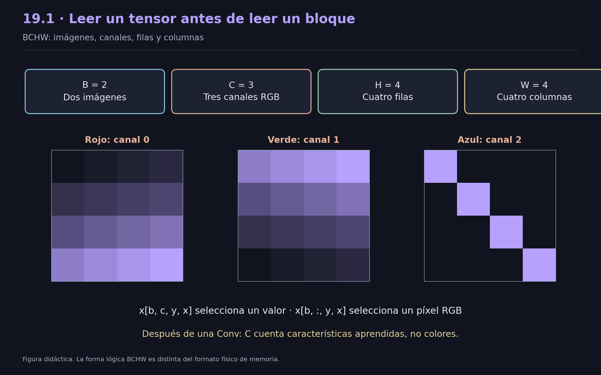
Figura 19.1 — Ejes del tensor y diferencia entre canales RGB y canales de características.
Cada imagen RGB puede entenderse como tres matrices superpuestas: una de intensidades rojas, otra de intensidades verdes y otra de intensidades azules.
En este ejemplo, el tensor tiene la forma:
| Dimensión | Valor | Interpretación |
|---|---|---|
B |
2 | Hay dos imágenes en el lote. |
C |
3 | Cada imagen tiene tres canales: rojo, verde y azul. |
H |
4 | Cada canal tiene cuatro filas. |
W |
4 | Cada canal tiene cuatro columnas. |
Por lo tanto:
-
Cada canal contiene valores.
-
Cada imagen contiene valores.
-
El lote completo contiene valores.
Importante: aunque arriba dice “dos imágenes”, abajo solo se muestran los tres canales correspondientes a una de ellas. Para representar el lote completo habría que mostrar otro conjunto de tres matrices.
19.1.1. ¿Qué representan los tres cuadrados?
No son tres imágenes independientes. Son tres componentes de la misma imagen, separadas por canal.
Cada casilla representa la intensidad de un canal en una posición espacial:
- El cuadrado izquierdo indica cuánto rojo hay en cada posición.
- El central indica cuánto verde hay.**
- El derecho indica cuánto azul hay.
Los tres mapas están alineados: una casilla situada en la fila 2, columna 3 representa la misma posición de la imagen en los tres canales.
Los tonos violetas son una escala visual para representar valores:
Más claro significa un valor mayor; más oscuro, un valor menor.
El violeta no es el color real del píxel. Incluso el canal “Rojo” se dibuja en violeta porque se está visualizando su intensidad mediante un mapa de colores.
En esta figura, el rojo aumenta hacia abajo y hacia la derecha, el verde es más intenso en la parte superior y el azul destaca en la diagonal. Son patrones didácticos para distinguir los canales.
19.1.2. ¿Cómo se obtiene el color de un píxel?
Para conocer un píxel completo hay que reunir los tres valores de la misma posición:
\begin{align} \text{píxel}(y,x)= \bigl(R(y,x),,G(y,x),,B(y,x)\bigr) \end{align}
Por ejemplo, si una posición tuviera:
el píxel sería rojo. Si tuviera:
sería amarillo.
Estos números son ejemplos en la escala de 8 bits; no son valores que podamos leer exactamente de la figura, porque no incluye una escala numérica.
19.1.3. ¿Qué significa la notación ?
La notación:
selecciona un único número:
| Índice | Qué selecciona |
|---|---|
b |
Una imagen del lote |
c |
Un canal |
y |
Una fila |
x |
Una columna |
Usando índices que empiezan en cero:
significa: valor del canal verde de la primera imagen, en la tercera fila y cuarta columna.
En cambio:
selecciona todos los canales de esa posición. El resultado contiene tres números:
Es decir, el píxel completo.
19.1.4. ¿Qué cambia después de una convolución?
En la entrada, los tres canales tienen un significado conocido: rojo, verde y azul.
Después de una convolución, los canales de salida son mapas de características aprendidas. Sus valores indican la respuesta de los filtros a distintos patrones; ya no representan directamente colores RGB.
Por ejemplo, una convolución podría transformar:
si produce 16 canales y sus parámetros conservan el tamaño espacial. Ahora hay 16 mapas por imagen, no 16 colores.
No hay que interpretar necesariamente cada mapa como un detector exclusivo de “bordes” o “texturas”: las características aprendidas pueden combinar distintos patrones.
Por lo tanto:
-
Antes de analizar qué hace un bloque, identificamos cuántas imágenes procesa, cuántos canales tiene cada una y qué tamaño tienen sus mapas.
-
En la entrada, los canales son colores; dentro de la red, son representaciones aprendidas.
19.1.5. Analogía: Distintas Formas de Organizar el Trabajo sobre la Información
1. Conv: La Analogía de la Inspección Local
Código original · YOLO26
Image(f"{root_class_path}/a1.png")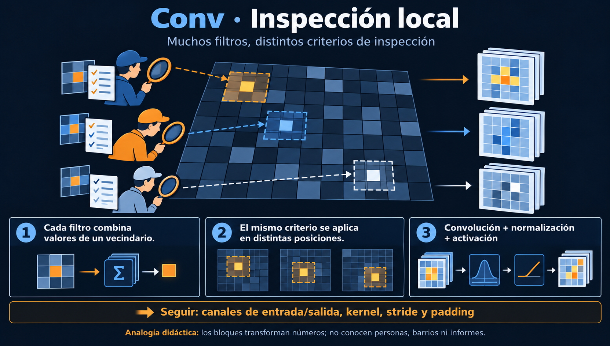
Supongamos varios inspectores que recorren un territorio. Cada inspector utiliza un criterio diferente, pero mantiene ese mismo criterio al examinar distintas ubicaciones.
-
En la imagen, el territorio representa el mapa de entrada, las lupas representan los kernels y los informes representan los mapas de características producidos.
-
Cada filtro combina valores de un vecindario mediante pesos aprendidos. Por ejemplo, un kernel
3×3abarca nueve posiciones espaciales. En una convolución ordinaria, también combina los canales de entrada: no analiza cada color de manera aislada. -
Al desplazar el filtro, se calcula una respuesta para cada ubicación de salida. Distintos filtros producen distintos canales, como inspectores que elaboran informes utilizando criterios diferentes.
-
El bloque
Convaplica después normalización y una activación no lineal. En la analogía, esto corresponde a ajustar las respuestas y transformarlas antes de entregarlas al siguiente equipo.
Para leer el bloque, debemos seguir los canales de entrada y salida, el tamaño del kernel, el stride y el padding. Estos parámetros determinan qué información se combina y cuál es la geometría del resultado.
- Límite de la analogía: los inspectores no representan personas reales ni decisiones conscientes. Los filtros realizan operaciones numéricas y sus criterios se aprenden durante el entrenamiento.
2. C3k2: La Analogía de los Informes de Varias Rutas
Código original · YOLO26
Image(f"{root_class_path}/a2.png")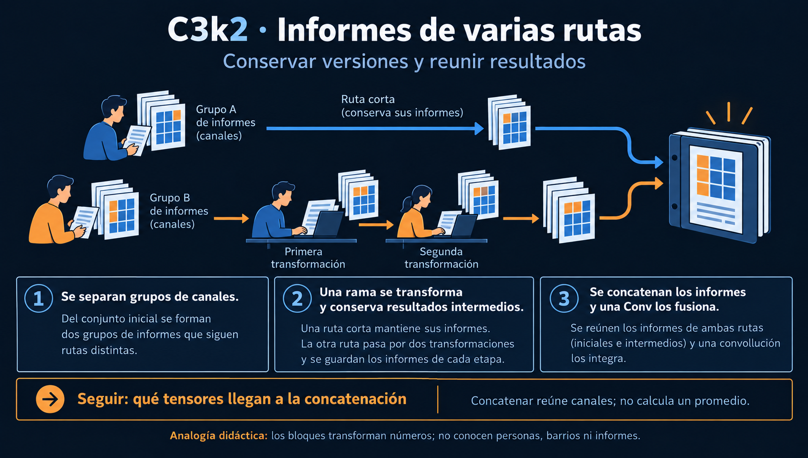
Supongamos un equipo que prepara información y la distribuye en dos grupos. Uno conserva sus informes mediante una ruta corta. El otro atraviesa varias transformaciones, guardando también los resultados de cada etapa.
- En la imagen, los grupos de informes representan grupos de canales, los puestos de trabajo representan subbloques y la carpeta final representa la reunión de resultados.
-
C3k2separa los canales después de una convolución inicial. Una rama atraviesa subbloques sucesivos; sus salidas intermedias se conservan junto con los dos grupos iniciales. Así, la fusión recibe representaciones que han recorrido distintas profundidades de procesamiento. -
Reunir los informes corresponde a concatenar por canales.
- No significa promediarlos ni sumarlos. Por ejemplo, cuatro tensores de forma
(B, 16, H, W)producen, al concatenarse, un tensor(B, 64, H, W). Una convolución final combina esa información y obtiene los canales de salida.
- No significa promediarlos ni sumarlos. Por ejemplo, cuatro tensores de forma
Para leer el bloque, hay que identificar qué tensores se conservan, cuáles se transforman y cuáles llegan a la concatenación.
- Límite de la analogía: las rutas separan canales, no regiones espaciales de la imagen. Además, una ruta más profunda realiza más transformaciones, pero no garantiza por sí sola un informe más correcto.
3. SPPF: La Analogía de Consultar Entornos Más Amplios
Código original · YOLO26
Image(f"{root_class_path}/a3.png")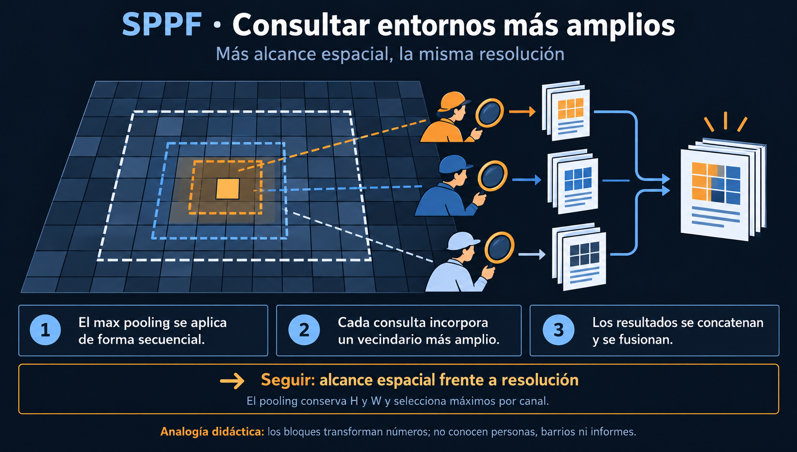
Supongamos que un equipo analiza lo que sucede alrededor de una ubicación. Primero consulta un entorno cercano; después amplía la consulta aprovechando los resultados anteriores.
- En la imagen, el mapa representa las características de entrada y los contornos anidados representan vecindarios de alcance creciente.
-
SPPFaplicamax poolingde manera secuencial**: cada aplicación trabaja sobre el resultado de la anterior.- Con kernel
5×5y tres aplicaciones, los alcances equivalentes son5×5,9×9y13×13, medidos sobre el mapa que entra al pooling.
- Con kernel
-
Aunque aumenta el vecindario consultado, el stride 1 y el padding conservan el alto y el ancho: Consultar un entorno más amplio no implica reducir la resolución del mapa.
-
El bloque conserva también la representación anterior al pooling, concatena los resultados y los fusiona mediante una convolución.
Para leer el bloque, debemos distinguir alcance espacial de resolución: el primero indica qué vecindario puede influir; la segunda indica cuántas posiciones mantiene el mapa.
- Límite de la analogía: max pooling selecciona el máximo numérico de cada vecindario por canal. No interpreta cuál informe es más importante ni comprende el territorio.
4. C2PSA: La Analogía de Relacionar Informes Según su Contenido
Código original · YOLO26
Image(f"{root_class_path}/a4.png")Supongamos un equipo distribuido por un territorio. Para actualizar un informe, un integrante consulta aportaciones de otras ubicaciones. Algunas reciben más peso que otras, sin que la distancia determine por sí sola su contribución.
- En la imagen, las ubicaciones representan posiciones del mapa y las conexiones representan pesos de atención.
-
La atención utiliza tres representaciones aprendidas: expresa la consulta, permite calcular compatibilidades y contiene la información que se combina. Comparar con genera los pesos utilizados para combinar .
-
C2PSAdivide canales después de una convolución inicial: Una rama atraviesa atención y una red de transformación por canales, llamadaFFN; la otra evita estas operaciones.- Ambas ramas contienen todas las posiciones espaciales: la separación ocurre por canales.
-
Las conexiones residuales suman una actualización a la representación previa. Finalmente, las dos ramas se concatenan y fusionan.
Para leer el bloque, debemos seguir los canales de cada rama, las posiciones espaciales, y las sumas residuales.
- Límite de la analogía: las consultas no son preguntas humanas. Sus pesos expresan compatibilidades numéricas aprendidas; no demuestran que la red comprenda personas, lugares u objetos.
19.2. Laboratorio Reproducible: Operaciones Mínimas
Celda 1: Configuración del Entorno
Código original · YOLO26
from __future__ import annotations
import math
from typing import Any
import numpy as np
import torch
from torch import Tensor, nn
from torch.nn import functional as F
import matplotlib.pyplot as plt
import plotly
import ipywidgets as widgets
from IPython.display import HTML, displayCódigo original · YOLO26
torch.manual_seed(42)
torch.set_num_threads(min(4, torch.get_num_threads()))
plt.style.use("dark_background")
plt.rcParams.update({"figure.facecolor": "#081321", "axes.facecolor": "#081321",
"font.size": 11, "figure.dpi": 120})
get_ipython().run_line_magic("matplotlib", "inline")
try:
from google.colab import output as colab_output
colab_output.enable_custom_widget_manager()
except ImportError:
pass
print("PyTorch:", torch.__version__, "| Plotly:", plotly.__version__)
print("Dispositivo de los ejemplos: CPU | Semilla: 42")PyTorch: 2.11.0+cpu | Plotly: 5.24.1 Dispositivo de los ejemplos: CPU | Semilla: 42
Celda 2: Soporte de Tensores y Convoluciones
-
validate_bchwcomprueba forma, canales y tipo flotante sin copiar el tensor. -
ConvNormActreúneConv2d → BatchNorm2d → SiLU, o identidad al desactivar la activación. Conkernelimpar,stride 1ypaddingk//2, conservaHyW.
No confundir
act=Falsecon quitar BatchNorm: solo desactiva SiLU.
Código original · YOLO26
def validate_bchw(x: Tensor, channels: int | None = None) -> None:
"""Valida una entrada flotante con forma lógica BCHW.
Args:
x: Tensor de forma (B, C, H, W), en CPU o GPU.
channels: Canales exigidos; None permite cualquier C positivo.
Returns:
None. No modifica ni copia la entrada.
Raises:
TypeError: Si x no es un tensor o no tiene dtype flotante.
ValueError: Si la forma no es BCHW, hay ejes vacíos o C no coincide.
Notes:
No cambia dispositivo ni dtype. BatchNorm en entrenamiento necesita
más de un valor por canal; los ejemplos se ejecutan en modo eval.
"""
if not isinstance(x, Tensor) or not x.is_floating_point():
raise TypeError("La entrada debe ser un tensor flotante.")
if x.ndim != 4 or any(size <= 0 for size in x.shape):
raise ValueError("Se requiere una forma (B, C, H, W) sin ejes vacíos.")
if channels is not None and x.shape[1] != channels:
raise ValueError(f"Se esperaban {channels} canales; se recibieron {x.shape[1]}.")Código original · YOLO26
class ConvNormAct(nn.Module):
"""Soporte compartido: Conv2d sin bias, BatchNorm2d y SiLU opcional.
Args:
c1: Canales de entrada positivos.
c2: Canales de salida positivos.
k: Kernel cuadrado impar, en posiciones del mapa.
s: Stride positivo, aplicado en ambos ejes espaciales.
g: Grupos positivos que dividen c1 y c2.
act: True aplica SiLU; False aplica identidad después de BatchNorm.
Attributes:
conv: Convolución con padding k // 2 y dilatación 1.
bn: Normalización con estadísticas corrientes en train y guardadas en eval.
activation: SiLU o Identity; no es una normalización min-max.
Notes:
Con s=1 y k impar conserva H y W. Los parámetros y la entrada deben
estar en dispositivos y dtypes compatibles. No implementa fusión de BN.
"""
def __init__(self, c1: int, c2: int, k: int = 1, s: int = 1,
g: int = 1, act: bool = True) -> None:
"""Construye las capas y valida su geometría.
Args:
c1: Número positivo de canales de entrada.
c2: Número positivo de canales de salida.
k: Tamaño impar positivo del kernel cuadrado.
s: Stride positivo; por defecto 1.
g: Grupos; debe dividir ambos números de canales.
act: Habilita SiLU si es True; en False conserva BatchNorm.
Raises:
ValueError: Si un tamaño es inválido o los grupos no dividen canales.
"""
super().__init__()
if min(c1, c2, k, s, g) <= 0 or k % 2 == 0 or c1 % g or c2 % g:
raise ValueError("Canales/stride/grupos positivos, k impar y grupos divisores.")
self.c1 = c1
self.conv = nn.Conv2d(c1, c2, k, s, padding=k // 2, groups=g, bias=False)
self.bn = nn.BatchNorm2d(c2)
self.activation = nn.SiLU() if act else nn.Identity()
def forward(self, x: Tensor) -> Tensor:
"""Aplica convolución, normalización y activación sin modificar x.
Args:
x: Tensor flotante (B, c1, H, W), compatible con los parámetros.
Returns:
Tensor (B, c2, ceil(H/s), ceil(W/s)) para el padding elegido.
Conserva el grafo de autograd cuando este está habilitado.
Raises:
TypeError, ValueError: Si validate_bchw rechaza la entrada.
RuntimeError: Si PyTorch detecta dtype, dispositivo o BN incompatibles.
"""
validate_bchw(x, self.c1)
return self.activation(self.bn(self.conv(x)))1. Convolución
Fragmento de código
self.conv = nn.Conv2d(
c1, c2, k, s,
padding=k // 2,
groups=g,
bias=False
)
Con
g=1, cada filtro combina un vecindario espacial y todos los canales de entrada. Hay un canal de salida por filtro.
Por ejemplo, con c1=3, c2=16, k=3, los pesos tienen forma:
Son 16 filtros, cada uno con tres planos de pesos . El padding se calcula automáticamente:
k |
padding=k//2 |
|---|---|
| 1 | 0 |
| 3 | 1 |
| 5 | 2 |
Con dilatación 1 y kernel impar, resulta:
-
Por eso
s=1conserva la resolución ys=2produce la mitad redondeada hacia arriba. -
bias=Falseelimina el desplazamiento propio de la convolución; elBatchNormposterior tiene su desplazamiento aprendible.
2. BatchNorm
Fragmento de código
self.bn = nn.BatchNorm2d(c2)
Se configura con
c2porque recibe los canales producidos por la convolución.
Para cada canal aplica:
En entrenamiento calcula estadísticas sobre lote y posiciones espaciales, por canal. En evaluación utiliza las estadísticas acumuladas, con la configuración predeterminada. y son aprendibles. No cambia la forma del tensor
Un ejemplo con un canal y valores [1, 2, 3, 4], usando los parámetros iniciales, produce aproximadamente:
No normaliza a . Además, un lote de una sola imagen puede ser válido: necesita más de un valor por canal al calcular estadísticas, no necesariamente más de una imagen.
3. Activación Opcional
Fragmento de código
self.activation = nn.SiLU() if act else nn.Identity()
Es una función suave que permite valores negativos pequeños. No equivale a ReLU ni es una probabilidad: por ejemplo, SiLU(2)≈1.761594. Aplicar varias transformaciones lineales sin activaciones intermedias limitaría las funciones que se pueden representar.
Por ejemplo:
| Entrada | SiLU |
|---|---|
| −1 | −0.269 |
| 0 | 0 |
| 1 | 0.731 |
Si
act=False,Identitydevuelve su entrada sin esa transformación.BatchNormsigue presente: únicamente se desactivaSiLU.
4. forward: Procesar un Tensor
Fragmento de código
validate_bchw(x, self.c1)
return self.activation(self.bn(self.conv(x)))
La expresión se ejecuta desde dentro hacia fuera. Equivale a:
Fragmento de código
validate_bchw(x, self.c1)
z = self.conv(x)
u = self.bn(z)
y = self.activation(u)
return y
La validación comprueba la entrada;
Convcambia canales y posiblemente resolución;BatchNormySiLUconservan la forma obtenida.
Podemos comprobar estos resultados en CPU:
| Etapa | Forma |
|---|---|
| Entrada | (2, 3, 641, 639) |
| Conv2d | (2, 16, 321, 320) |
| BatchNorm2d | (2, 16, 321, 320) |
| SiLU | (2, 16, 321, 320) |
Código original · YOLO26
block = ConvNormAct(c1=3, c2=16, k=3, s=2).eval()
x = torch.randn(2, 3, 641, 639)
with torch.no_grad():
y = block(x)
print(y.shape)
# torch.Size([2, 16, 321, 320])torch.Size([2, 16, 321, 320])
La clase no activa evaluación automáticamente. En el ejemplo,
.eval()selecciona el comportamiento de evaluación de BatchNorm;torch.no_grad()desactiva por separado el seguimiento de gradientes. Sin este último contexto, el bloque conserva autograd y puede entrenarse.
Celda 3: Datos de Trabajo: Mapas de Características Sintéticos
-
synthetic_featurescrea un lote de una imagen lógica con gradientes, ondas, dos regiones separadas y ruido leve. El generador local hace reproducible el ruido sin alterar la semilla global de inicialización de las capas. -
Los ejemplos
C3k2ySPPFusan 8 canales y un mapa de . -
Para atención reducimos el mapa a : hay 64 posiciones, por lo que cada cabeza produce pesos.
Separar canales no equivale a recortar regiones espaciales.
Código original · YOLO26
def synthetic_features(channels: int = 8, height: int = 12, width: int = 12,
seed: int = 42) -> Tensor:
"""Crea un lote BCHW de patrones espaciales con ruido reproducible.
Args:
channels: Número positivo de canales de características, no colores.
height: Filas; mínimo 2.
width: Columnas; mínimo 2.
seed: Semilla del generador local de ruido CPU; no altera la global.
Returns:
Tensor CPU float32 (1, channels, height, width). Combina gradientes,
ondas y dos regiones separadas, más ruido de amplitud pequeña.
Raises:
ValueError: Si channels < 1 o una dimensión espacial es menor que 2.
Notes:
No es una imagen real ni un resultado de un backbone entrenado.
"""
if channels < 1 or height < 2 or width < 2:
raise ValueError("channels >= 1 y dimensiones espaciales >= 2.")
yy, xx = torch.meshgrid(
torch.linspace(-1, 1, height),
torch.linspace(-1, 1, width),
indexing="ij"
)
spots = torch.exp(-12 * ((xx - .5) ** 2 + (yy + .4) ** 2))
spots += torch.exp(-12 * ((xx + .5) ** 2 + (yy - .4) ** 2))
base = [xx, yy, xx * yy, spots, torch.sin(4 * xx), torch.cos(4 * yy)]
generator = torch.Generator().manual_seed(seed)
planes = [base[c % len(base)] + .04 * torch.randn(height, width, generator=generator)
for c in range(channels)]
return torch.stack(planes).unsqueeze(0).to(torch.float32)Celda 4: Herramientas de Visualización
-
tensor_numpysepara autograd únicamente al dibujar. -
show_plotpresenta figuras Plotly con hover, zoom y controles. -
shape_tablemuestra formas y elementos lógicos, que no equivalen a memoria exclusiva. -
stage_figurecompara etapas con un selector de canal y una escala de color común: una normalización independiente podría hacer parecer igualmente intensos mapas cuyos valores difieren. Un mismo índice de canal entre etapas tampoco garantiza el mismo significado aprendido.
Código original · YOLO26
import plotly.graph_objects as go
from plotly.subplots import make_subplots
from IPython.display import HTML, display
import html
BACKGROUND = "#081321"
PANEL = "#13263d"
BLUE = "#83bbf5"
ORANGE = "#ffb45f"
WHITE = "#eaf1fa"
def tensor_numpy(x: Tensor) -> np.ndarray:
"""Convierte un tensor para dibujarlo sin mantener el grafo de autograd.
Args:
x: Tensor de cualquier forma, dtype o dispositivo compatible con float.
Returns:
Array NumPy CPU float32 separado del grafo; no modifica x.
Raises:
AttributeError, RuntimeError: Si x no es un tensor convertible.
Notes:
Solo se usa en visualización. No debe introducirse en el forward
de un modelo que necesite propagación de gradientes.
"""
return x.detach().to(device="cpu", dtype=torch.float32).numpy()
def dark_layout(fig: go.Figure, title: str, height: int = 620) -> go.Figure:
"""Aplica el estilo oscuro común a una figura existente.
Args:
fig: Figura Plotly que se modifica in-place.
title: Título; admite el marcado sencillo compatible con Plotly.
height: Alto positivo de la figura en píxeles.
Returns:
La misma figura con colores, fuentes, márgenes y tamaño actualizados.
Raises:
ValueError: Si Plotly rechaza una propiedad de layout.
"""
fig.update_layout(template="plotly_dark", paper_bgcolor=BACKGROUND,
plot_bgcolor=BACKGROUND, font=dict(color=WHITE, size=13),
title=dict(text=title, font=dict(size=23)), height=height,
margin=dict(l=45, r=35, t=110, b=70))
return fig
def show_plot(fig: go.Figure) -> None:
"""Muestra HTML interactivo de Plotly en Jupyter o Google Colab.
Args:
fig: Figura cuyos valores se renderizarán con hover, zoom y controles.
Returns:
None; genera una salida HTML en la celda activa.
Notes:
Usa el CDN de Plotly para reducir el tamaño del notebook; requiere
conexión al cargar JavaScript. Las figuras estáticas guardadas siguen
siendo visibles sin ejecutar código. No requiere FigureWidget.
"""
display(HTML(fig.to_html(full_html=False, include_plotlyjs="cdn",
config={"responsive": True, "displaylogo": False})))
def shape_table(stages: dict[str, Tensor]) -> None:
"""Presenta forma y número de valores de cada tensor como tabla HTML.
Args:
stages: Mapeo ordenado de nombres de etapa a tensores arbitrarios.
Returns:
None; imprime una tabla sin modificar los tensores.
Notes:
numel cuenta elementos lógicos, no memoria exclusiva. Las vistas de
chunk/split pueden compartir almacenamiento y se reutilizan informes.
"""
rows = "".join(f"<tr><td>{html.escape(name)}</td><td>{tuple(x.shape)}</td>"
f"<td>{x.numel():,}</td></tr>" for name, x in stages.items())
display(HTML("<style>.tensor-shapes{border-collapse:collapse;background:#13263d;"
"color:#eaf1fa}.tensor-shapes td,.tensor-shapes th{padding:9px 18px;"
"border:1px solid #426080}</style><table class='tensor-shapes'>"
"<tr><th>Etapa</th><th>Forma lógica</th><th>Elementos</th></tr>"
+ rows + "</table>"))
def stage_figure(stages: dict[str, Tensor], title: str) -> go.Figure:
"""Compara mapas de varias etapas con selector de canal y escala común.
Args:
stages: Mapeo ordenado a tensores BCHW; se representa la imagen b=0.
title: Título que identifica bloque y experimento.
Returns:
Figura con heatmaps, hover numérico y desplegable de canales presentes
en todas las etapas. Las escalas de color son compartidas y simétricas.
Raises:
ValueError: Si no hay etapas o algún tensor no tiene cuatro dimensiones.
Notes:
Un mismo índice de canal en dos etapas no garantiza el mismo significado.
El rango incluye todos los canales seleccionables, no se reescala
independientemente cada mapa ni cada selección.
"""
if not stages or any(x.ndim != 4 for x in stages.values()):
raise ValueError("Se necesita al menos una etapa y todos sus tensores BCHW.")
arrays = [tensor_numpy(x)[0] for x in stages.values()]
common = min(a.shape[0] for a in arrays)
cols = min(3, len(arrays))
rows = math.ceil(len(arrays) / cols)
titles = [f"{name}<br>{tuple(x.shape)}" for name, x in stages.items()]
fig = make_subplots(rows=rows, cols=cols, subplot_titles=titles,
horizontal_spacing=.10, vertical_spacing=.18)
bound = max(max(float(np.abs(a[:common]).max()), 1e-8) for a in arrays)
for i, a in enumerate(arrays):
row, col = divmod(i, cols)
fig.add_trace(go.Heatmap(z=a[0], coloraxis="coloraxis",
hovertemplate="fila=%{y}, columna=%{x}<br>valor=%{z:.5f}<extra></extra>"),
row=row + 1, col=col + 1)
buttons = [dict(label=f"Canal {c}", method="restyle",
args=[{"z": [a[c] for a in arrays]}, list(range(len(arrays)))])
for c in range(common)]
fig.update_layout(coloraxis=dict(colorscale="RdBu_r", cmin=-bound, cmax=bound,
colorbar=dict(title="valor")),
updatemenus=[dict(buttons=buttons, x=1, y=1.17, xanchor="right")])
fig.update_yaxes(autorange="reversed", title="fila")
fig.update_xaxes(title="columna")
return dark_layout(fig, title, height=280 * rows + 160)Código original · YOLO26
def static_maps(stages: dict[str, Tensor], title: str, channel: int = 0) -> None:
"""Dibuja una vista estática de mapas, embebida en las salidas del notebook.
Args:
stages: Mapeo ordenado de nombres a tensores BCHW; representa b=0.
title: Título general que identifica el experimento.
channel: Canal presente en todas las etapas; por defecto cero.
Returns:
None. Muestra y cierra una figura Matplotlib con escala simétrica común.
Raises:
ValueError: Si el mapeo está vacío o el canal no está en alguna etapa.
Notes:
Esta vista permite leer resultados antes de ejecutar widgets o Plotly.
No requiere archivos de imágenes externos ni modifica los tensores.
"""
if not stages or any(not 0 <= channel < t.shape[1] for t in stages.values()):
raise ValueError("Se necesitan etapas y un canal válido para todas.")
arrays = [tensor_numpy(t)[0, channel] for t in stages.values()]
cols = min(3, len(arrays))
rows = math.ceil(len(arrays) / cols)
fig, axes = plt.subplots(rows, cols, figsize=(5*cols, 4*rows), squeeze=False,
constrained_layout=True)
limit = max(max(float(np.abs(a).max()), 1e-8) for a in arrays)
for ax, (name, tensor), array in zip(axes.flat, stages.items(), arrays):
image = ax.imshow(array, cmap="RdBu_r", vmin=-limit, vmax=limit)
ax.set_title(f"{name}\n{tuple(tensor.shape)}", color="#83bbf5")
ax.set_xlabel("columna")
ax.set_ylabel("fila")
if array.shape[0] <= 8:
ax.set_yticks(range(array.shape[0]))
if array.shape[1] <= 8:
ax.set_xticks(range(array.shape[1]))
for ax in list(axes.flat)[len(arrays):]:
ax.set_visible(False)
fig.colorbar(image, ax=list(axes.flat), shrink=.75, label="valor · escala común")
fig.suptitle(title, fontsize=18)
display(fig)
plt.close(fig)Celda 5: Convoluciones
La idea fundamental es: una convolución transforma el vector de canales de cada posición en un nuevo vector de características. Aunque su alcance espacial sea pequeño, puede realizar muchas combinaciones aprendidas.
- El tamaño describe las dimensiones espaciales del kernel.
Supongamos la siguiente entrada:
En una posición concreta hay un valor por canal. Si tenemos tres canales, esa posición contiene un vector:
Una convolución ordinaria , con groups=1, puede combinar los tres valores. Cada filtro tiene un coeficiente para cada canal de entrada. Si queremos dos canales de salida, sus pesos tienen forma:
Por tanto, hay seis pesos, aunque el kernel sea espacialmente . Esta organización coincide con la definición de Conv2d en PyTorch.
1. Analogía: Mesa de Mezcla por Posición
Código original · YOLO26
Image(f"{root_class_path}/a6.png")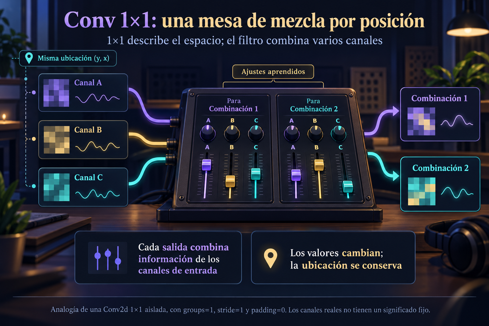
En la imagen de arriba, representa esto mediante una mesa de mezcla. Cada canal es una señal disponible en la misma ubicación. Los controles representan los pesos:
- Un peso grande aumenta la contribución de un canal.
- Un peso cero elimina su contribución a esa salida.
- Un peso negativo permite restar información.
- Cada canal de salida utiliza su propia combinación.
Durante el entrenamiento, la red ajusta esos controles para reducir su error. Los pesos reciben aportes del gradiente desde todas las posiciones donde se utilizaron.
- La analogía tiene un límite: los canales de una red real no necesitan tener significados fijos y fáciles de nombrar. Pueden representar información distribuida entre muchos canales.
2. Analogía: Por qué se comparten los pesos
Código original · YOLO26
Image(f"{root_class_path}/a5.png")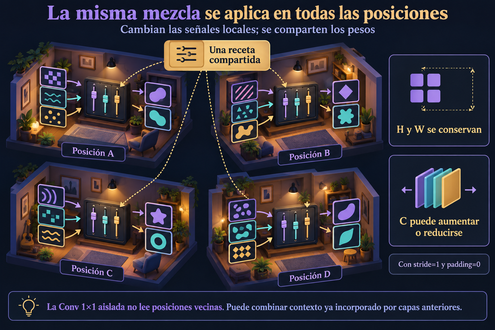
Cada habitación representa una ubicación diferente. Todas utilizan la misma receta de mezcla, pero reciben señales locales distintas.
Esto permite aplicar un mismo criterio de transformación en cualquier parte del mapa.
-
Evita aprender una matriz diferente para cada posición: la cantidad de pesos depende de los canales, no de
HyW. -
Una aislada no consulta posiciones vecinas: Sin embargo, sus entradas pueden contener contexto espacial obtenido antes.
- Por ejemplo, si una Conv ya reunió información de un vecindario, la siguiente puede combinar esas características contextualizadas.
| Función | Qué consigue |
|---|---|
| Mezclar canales | Crear características que combinan distintas señales |
| Reducir canales | Formar una representación más compacta para etapas posteriores |
| Aumentar canales | Producir más combinaciones de las características disponibles |
| Fusionar ramas | Combinar canales procedentes de diferentes recorridos |
| Proyectar a salidas | Convertir características internas en valores necesarios para una tarea |
- Reducir canales puede perder información; el entrenamiento busca conservar combinaciones útiles. Aumentarlos tampoco incorpora nuevos datos de la imagen por sí solo: genera otra representación de lo disponible.
Además, una aislada es una transformación lineal, o afín si tiene sesgo. Cuando se combina con una activación, como SiLU, el conjunto puede representar relaciones no lineales.
3. Lugares de Implementación en YOLO26
En YOLO26, esas funciones aparecen en lugares concretos:
| Lugar | Uso de las convoluciones 1×1 |
|---|---|
| C3k2 | Hereda de C2f las proyecciones cv1 y cv2: transforma canales antes de dividir ramas y fusiona los canales concatenados |
| SPPF | Reduce canales antes del pooling y combina las características reunidas después |
| C2PSA | Proyecta canales antes de separar ramas y los combina al reunificarlas |
| Attention / PSABlock | Construye Q, K y V, proyecta la salida de atención y transforma canales en la red feed-forward |
19.3. C3k2: Rutas Parciales y Concatenación
La ruta corta conserva un grupo de informes después de la proyección inicial. La otra pasa por revisiones sucesivas y guarda cada versión intermedia. Los informes son tensores; la carpeta final es una concatenación por canales. Una convolución posterior los fusiona. No se promedian ni se divide la imagen en una mitad izquierda y otra derecha.
Código original · YOLO26
Image(f"{root_class_path}/a2.png")19.3.1. Paso a Paso y Ejemplo de Formas
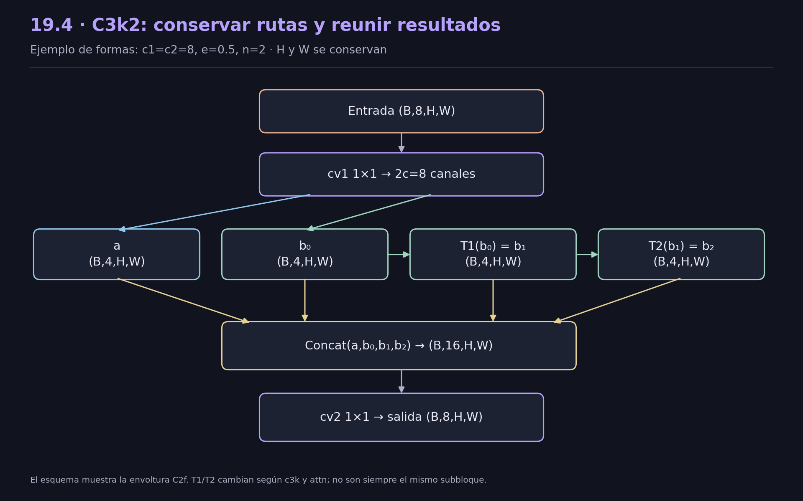
Figura 19.5 — Rutas parciales y reutilización de resultados intermedios en la envoltura de C3k2.
Supongamos que tenemos c1=8, c2=16, e=0.5 y n=2: En C3k2, c1 y c2 describen la entrada y la salida del bloque completo; e y n determinan cómo se organiza su interior.
| Parámetro | Significado | En nuestro ejemplo |
|---|---|---|
c1 |
Canales que recibe el bloque | 8 canales de entrada |
c2 |
Canales que entrega el bloque | 16 canales de salida |
e |
Factor que determina la anchura de cada rama | |
n |
Número de subbloques sucesivos en la rama transformada | Dos etapas: T1 y T2 |
Estas definiciones corresponden a la estructura de C2f que utiliza C3k2. Ultralytics.
1. c1: Cuántas Señales Llegan
Código original · YOLO26
Image(f"{root_class_path}/a6.png")En la imagen de la mesa de mezcla, c1 corresponde a la cantidad de canales disponibles para mezclar en una posición.
La imagen a6 muestra tres canales: . Para esa convolución ilustrada, serían tres entradas. En nuestro ejemplo de C3k2, llegan ocho:
Esto significa una imagen del lote, ocho mapas de características y 12×12 posiciones.
En cada ubicación , hay un vector de ocho valores:
Código original · YOLO26
Image(f"{root_class_path}/a5.png")La primera Conv combina esos valores usando sus pesos aprendidos. La misma combinación se aplica en todas las ubicaciones, como muestra
a5.
2. c2: Cuántas Señales Entrega el Bloque
c2=16 indica que la salida final de C3k2 tendrá 16 canales (en nuestro ejemplo):
En la analogía, son 16 mezclas finales, cada una con sus propios ajustes. Esto no exige que todas las etapas interiores tengan 16 canales. En nuestro ejemplo, las ramas tienen ocho y la concatenación tiene 32.
c2fija la salida del bloque completo, no el número de canales de cada operación interna.
3. e: Cuánto Ancho Tienen las Ramas
El parámetro e determina la anchura oculta:
Con nuestros valores:
La proyección inicial genera dos grupos de esa anchura:
Después se separan:
En términos de la mesa de mezcla, primero se producen 16 señales intermedias y después se organizan en dos grupos de ocho.
e=0.5no multiplica los valores del tensor por 0.5. Se utiliza para calcular cuántos canales tendrá cada rama.
Aplicando la fórmula a otros valores, con c2=16 y n=2:
e |
Anchura c |
Proyección inicial 2c |
Concatenación 4c |
Salida final |
|---|---|---|---|---|
| 0.25 | 4 | 8 | 16 | 16 |
| 0.5 | 8 | 16 | 32 | 16 |
| 1.0 | 16 | 32 | 64 | 16 |
La proyección inicial tiene tantos canales como
c2en el casoe=0.5. Es consecuencia de , no una regla general.
4. n: Cuántas Revisiones Sucesivas se Realizan
n=2 indica dos subbloques en la rama transformada:
Se conservan los dos grupos iniciales y ambos resultados:
Hay, por tanto, tensores de ocho canales:
Una Conv final mezcla esos 32 canales para producir los 16 solicitados por
c2. Ultralytics
n=2no significa dos convoluciones en total: cada subbloque puede contener varias operaciones. En la variante básica sonBottleneck; conc3k=True, cada etapa tiene una estructura interna más elaborada. Ultralytics
Por lo tanto, en la analogía, las mesas de mezcla ilustran especialmente las Conv inicial y final:
| Operación | Canales que recibe | Canales que produce |
|---|---|---|
| Proyección inicial | c1 = 8 |
2c = 16 |
| Separación | 16 | A: 8; B: 8 |
| Transformación T1 | 8 | 8 |
| Transformación T2 | 8 | 8 |
Concatenación [A,B,T1,T2] |
Cuatro grupos de 8 | 32 |
| Fusión final | 32 | c2 = 16 |
“Posición A” y “Posición B” en la imagen
a5son ubicaciones espaciales; las ramas A y B deC3k2son grupos de canales que contienen todas las ubicaciones. La separación de ramas mantiene el mapa .
19.3.2. Preparación del Laboratorio
Este apartado usa las definiciones de 19.2: importaciones, configuración visual,
validate_bchw,ConvNormActsynthetic_featuresy utilidades gráficas. Ejecutar esas celdas antes de continuar. Las figuras nuevas y los datos sintéticos no necesitan archivos de Drive.
Implementamos la variante simple c3k=False, attn=False, g=1, con n>=1. No importamos Ultralytics ni cargamos pesos entrenados. La operación se contrastó con su referencia oficial. Las otras variantes se mantienen en las secciones posteriores del anexo.
Código original · YOLO26
requisitos_1931 = ["torch", "Tensor", "nn", "math", "Any", "np", "plt", "widgets",
"go", "make_subplots", "display", "HTML", "validate_bchw",
"ConvNormAct", "synthetic_features", "tensor_numpy", "dark_layout",
"shape_table", "stage_figure", "show_plot", "static_maps",
"BLUE", "ORANGE"]
faltantes_1931 = [nombre for nombre in requisitos_1931 if nombre not in globals()]
if faltantes_1931:
raise RuntimeError("Ejecuta primero las celdas de soporte de 19.2. Faltan: "
+ ", ".join(faltantes_1931))
print("Soporte de 19.2 disponible.")Soporte de 19.2 disponible.
19.3.2.1. Construcción del C3k2 simple en PyTorch
El constructor organiza el bloque;
tracerealiza las operaciones y devuelve los tensores intermedios.forwardentrega únicamente el tensor final, por lo que el bloque puede integrarse en una red y entrenarse conautograd.
cv1: Conv dec1a2c, seguida deBNySiLU.chunk(2, dim=1): separa canales , sin recortar .blocks: cadaTrecibe la salida anterior y mantieneccanales.torch.cat(..., dim=1): reúneA,By todos losT.cv2: Conv de(n+2)cac2, seguida deBNySiLU.
Cada
Bottleneck1931aplica dos Conv y un residual. Su anchura internaint(c*0.5)corresponde al Bottleneck simple y es distinta deleexterior.
- Con
c=8, esa unidad sigue8 → 4 → 8canales y suma su entrada de 8 canales.- Todos sus kernels tienen stride 1 y padding 1, conservando la resolución.
Código original · YOLO26
class Bottleneck1931(nn.Module):
"""Unidad simple de C3k2: dos Conv 3×3 y residual opcional.
Args:
channels: Canales de entrada y salida, entero >= 2.
shortcut: True suma la entrada a la transformación.
Attributes:
hidden: Anchura int(channels*0.5), propia de este Bottleneck.
cv1, cv2: ConvNormAct con stride 1, padding 1 y grupos 1.
add: Indica si se suma el residual.
Notes:
La expansión interna 0.5 es independiente del e exterior de C3k2.
"""
def __init__(self, channels: int, shortcut: bool = True) -> None:
"""Inicializa la transformación channels -> hidden -> channels.
Args:
channels: Canales positivos comunes; mínimo 2 para hidden >= 1.
shortcut: Solicita suma residual con la entrada del subbloque.
Raises:
ValueError: Si channels no es entero >= 2.
"""
super().__init__()
if type(channels) is not int or channels < 2:
raise ValueError("channels debe ser un entero >= 2.")
self.hidden = int(channels * .5)
self.cv1 = ConvNormAct(channels, self.hidden, k=3)
self.cv2 = ConvNormAct(self.hidden, channels, k=3)
self.add = shortcut
def forward(self, x: Tensor) -> Tensor:
"""Aplica las dos convoluciones y, opcionalmente, suma su entrada.
Args:
x: Tensor flotante (B, channels, H, W), compatible con las capas.
Returns:
Tensor de igual forma: x + f(x) si add, o f(x) en otro caso.
No modifica x; mantiene autograd cuando está habilitado.
Raises:
TypeError, ValueError, RuntimeError: Si ConvNormAct rechaza x.
"""
update = self.cv2(self.cv1(x))
return x + update if self.add else update
class C3k2Parametros1931(nn.Module):
"""C3k2 simple instrumentado para explorar c1, c2, e y n.
Args:
c1: Canales de entrada del bloque completo, entero positivo.
c2: Canales de salida del bloque completo, entero positivo.
e: Factor positivo finito; c = int(c2*e), con c >= 2.
n: Cantidad positiva de Bottleneck externos sucesivos.
shortcut: Activa los residuales dentro de los Bottleneck.
Attributes:
c1, c2: Anchuras de entrada/salida externas.
c: Canales de cada informe A, B, T1, ..., Tn.
cv1: ConvNormAct 1×1 que proyecta c1 -> 2c.
blocks: Lista de n Bottleneck1931 que conservan c canales.
cv2: ConvNormAct 1×1 que fusiona (n+2)c -> c2.
Notes:
Corresponde a la variante c3k=False, attn=False y g=1. Las otras
variantes se estudian en las secciones posteriores del notebook.
El caso didáctico exige n >= 1. No carga pesos entrenados ni checkpoints.
"""
def __init__(
self,
c1: int,
c2: int,
e: float = .5,
n: int = 2,
shortcut: bool = True
) -> None:
"""Construye las capas usando las cuatro decisiones de arquitectura.
Args:
c1: Canales de entrada, entero > 0.
c2: Canales de salida, entero > 0.
e: Factor numérico positivo y finito, con int(c2*e) >= 2.
n: Número entero positivo de etapas T.
shortcut: Solicita suma residual en cada subbloque.
Raises:
ValueError: Si los enteros, e o la anchura oculta son inválidos.
Notes:
e calcula una cantidad de canales; no multiplica las activaciones.
n cuenta subbloques, no el total de capas Conv2d.
"""
super().__init__()
if any(type(v) is not int or v <= 0 for v in (c1, c2, n)):
raise ValueError("c1, c2 y n deben ser enteros positivos.")
if not isinstance(e, (int, float)) or isinstance(e, bool) or not math.isfinite(e) or e <= 0:
raise ValueError("e debe ser numérico, finito y positivo.")
self.c1, self.c2, self.e, self.n = c1, c2, float(e), n
self.c = int(c2 * e)
if self.c < 2:
raise ValueError("El caso simple requiere c=int(c2*e) >= 2.")
self.cv1 = ConvNormAct(c1, 2 * self.c, k=1) # conv 1x1, k = 1, s=1, p=1, g=1
self.blocks = nn.ModuleList(Bottleneck1931(self.c, shortcut) for _ in range(n))
self.cv2 = ConvNormAct((n + 2) * self.c, c2, k=1) # conv 1x1
def trace(self, x: Tensor) -> dict[str, Any]:
"""Ejecuta una vez el bloque y expone todos los informes conservados.
Args:
x: Tensor flotante (B, c1, H, W), en dispositivo/dtype compatibles.
Returns:
Diccionario con input, projected, reports, concatenated y output.
reports es [A, B, T1, ..., Tn], cada uno (B,c,H,W).
projected tiene 2c canales; concatenated tiene (n+2)c; output c2.
Las trazas conservan autograd, salvo dentro de no_grad.
Raises:
TypeError, ValueError, RuntimeError: Si la entrada o una capa falla.
Notes:
A/B son ramas de canales con TODAS las posiciones, no posiciones
espaciales como las A/B de la ilustración de mesas compartidas.
No guarda trazas en atributos ni instala hooks persistentes.
"""
validate_bchw(x, channels=self.c1)
projected = self.cv1(x)
reports = list(projected.chunk(2, dim=1))
for block in self.blocks:
reports.append(block(reports[-1]))
concatenated = torch.cat(reports, dim=1)
output = self.cv2(concatenated)
return {"input": x, "projected": projected, "reports": reports,
"concatenated": concatenated, "output": output}
def forward(self, x: Tensor) -> Tensor:
"""Devuelve la salida convencional del módulo, sin el diccionario de traza.
Args:
x: Tensor flotante (B,c1,H,W), compatible con los parámetros.
Returns:
Tensor (B,c2,H,W), sin modificar x ni bloquear autograd.
Raises:
TypeError, ValueError, RuntimeError: Los mismos errores de trace.
"""
return self.trace(x)["output"]19.3.2.2. Ejecución del Ejemplo y Sus Formas
-
crear_caso_c3k2_1931produce un mapa sintético(1,c1,12,12), construye el modelo y captura su traza en evaluación. La semilla local hace reproducible el ejemplo sin alterar la semilla global. -
resumen_c3k2_1931relaciona los parámetros, las dos mesas y cada forma lógica. -
eval()usa estadísticas BN guardadas, pero no significa modelo entrenado. -
no_grad()se utiliza para dibujar; no forma parte deforward. Los mapas de colores muestran valores del canal 0, con una escala común entre etapas.
Código original · YOLO26
def crear_caso_c3k2_1931(c1: int = 8, c2: int = 16, e: float = .5,
n: int = 2, seed: int = 42) -> dict[str, Any]:
"""Prepara datos sintéticos y una ejecución reproducible de C3k2.
Args:
c1: Canales de entrada.
c2: Canales finales del bloque.
e: Factor de anchura oculta.
n: Etapas exteriores en la rama transformada.
seed: Semilla local para datos e inicialización CPU.
Returns:
Diccionario con model, trace y stages. El modelo está en eval y las
trazas no tienen grafo de gradiente. Los mapas tienen B=1, H=W=12.
Raises:
ValueError, RuntimeError: Si la configuración no puede construirse.
Notes:
fork_rng conserva la semilla global. eval no implica entrenamiento
previo; las capas tienen pesos aleatorios y estadísticas BN iniciales.
"""
with torch.random.fork_rng(devices=[]):
torch.manual_seed(seed)
model = C3k2Parametros1931(c1=c1, c2=c2, e=e, n=n).eval()
x = synthetic_features(channels=c1, height=12, width=12, seed=seed)
with torch.no_grad():
trace = model.trace(x)
names = ["A · rama corta", "B · inicial"] + [f"T{i}" for i in range(1, n+1)]
stages = {"Entrada": x, "Proyección 1×1": trace["projected"]}
stages.update(dict(zip(names, trace["reports"])))
stages.update({"Concatenación": trace["concatenated"], "Salida final": trace["output"]})
return {"model": model, "trace": trace, "stages": stages}
def resumen_c3k2_1931(case: dict[str, Any]) -> None:
"""Presenta decisiones, recetas 1×1 y formas de una ejecución.
Args:
case: Diccionario generado por crear_caso_c3k2_1931.
Returns:
None. Imprime cantidades y presenta la tabla de tensores del notebook.
Notes:
El número de parámetros excluye buffers de BatchNorm. Elementos de
tensores no equivalen a memoria exclusiva: algunas vistas la comparten.
"""
model = case["model"]
print(f"c1={model.c1}, c2={model.c2}, e={model.e}, n={model.n}")
print(f"c=int(c2·e)={model.c}; proyección={2*model.c}; "
f"concatenación=({model.n}+2)·{model.c}={(model.n+2)*model.c}")
print(f"Mesa inicial: {model.c1} entradas → {2*model.c} recetas.")
print(f"Mesa final: {(model.n+2)*model.c} entradas → {model.c2} recetas.")
print("Parámetros entrenables:", sum(p.numel() for p in model.parameters() if p.requires_grad))
shape_table(case["stages"])Código original · YOLO26
caso_1931 = crear_caso_c3k2_1931(c1=8, c2=16, e=.5, n=2, seed=42)
resumen_c3k2_1931(caso_1931)
mapas_1931 = {
nombre: tensor for nombre, tensor in caso_1931["stages"].items()
if nombre not in ("Entrada", "Proyección 1×1")
}
static_maps(mapas_1931, "19.3.1 · A, B, T1, T2, concatenación y salida")
print("Valores del canal 0 en la posición (4,4), para A/B/T1/T2:")
print([round(float(t[0,0,4,4]), 6) for t in caso_1931["trace"]["reports"]])c1=8, c2=16, e=0.5, n=2 c=int(c2·e)=8; proyección=16; concatenación=(2+2)·8=32 Mesa inicial: 8 entradas → 16 recetas. Mesa final: 32 entradas → 16 recetas. Parámetros entrenables: 1904
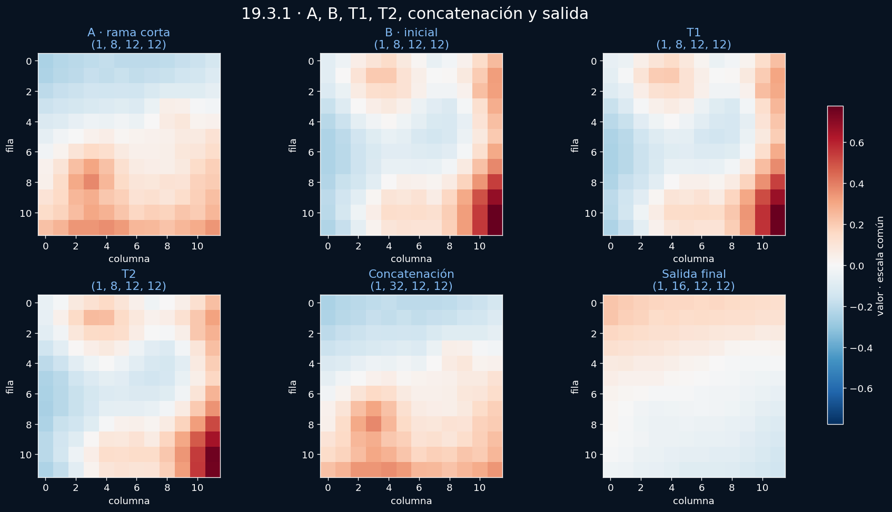
Valores del canal 0 en la posición (4,4), para A/B/T1/T2: [-0.04809, 0.006665, 9.7e-05, -0.001149]
Cada etapa contiene una pila de mapas de características. El bloque transforma esos mapas, conserva resultados intermedios y finalmente los combina
1. Primera Imagen: qué entra, qué se conserva y qué sale
El ejemplo utiliza:
| Parámetro | Significado en este ejemplo |
|---|---|
c1=8 |
El bloque recibe 8 canales. |
c2=16 |
El bloque entrega 16 canales. |
e=0.5 |
Determina la anchura de cada rama: c=int(16×0.5)=8. |
n=2 |
Aplica dos subbloques sucesivos: los que producen T1 y T2. |
Aquí,
edetermina una cantidad de canales: no multiplica los valores de las activaciones por 0.5. Por su parte,ncuenta subbloques; cada uno puede contener varias operaciones.
La columna «Forma lógica» se interpreta como:
Por ejemplo:
significa que procesamos una muestra con 8 mapas, cada uno de 12 filas y 12 columnas (144 posiciones del mapa de características). No significa que tengamos ocho imágenes independientes: son ocho representaciones de la misma muestra.
Entrada -> Proyección Inicial
La entrada tiene 8 canales. Una convolución , seguida de BatchNorm y SiLU, produce 16:
En cada posición espacial, la convolución combina los ocho valores de entrada usando distintas combinaciones de pesos. Por eso aparece la expresión «8 entradas → 16 recetas»: cada canal de salida tiene su propia receta de mezcla.
Para la parte de convolución, antes de BatchNorm y SiLU:
La receta se aplica en las 144 posiciones del mapa. Los pesos se comparten entre posiciones, aunque los valores de entrada cambian.
Proyección → A y B.
Los 16 canales se separan en dos grupos de 8:
Se divide el eje de canales. No se corta el mapa en una mitad izquierda y otra derecha: A y B conservan las posiciones.
- Además, A ya procede de la proyección inicial. «Rama corta» significa que evita los dos subbloques posteriores, no que sea una copia directa de la entrada original.
Código original · YOLO26
def figura_rutas_c3k2_1931(case: dict[str, Any]) -> go.Figure:
"""Dibuja las rutas que alimentan la concatenación, incluyendo intermedios.
Args:
case: Resultado de crear_caso_c3k2_1931.
Returns:
Sankey Plotly oscuro, con nombres, canales y enlaces de reutilización.
Notes:
Ancho de enlace = canales. No representa flujo conservado, importancia,
información exclusiva ni memoria: B y los intermedios se reutilizan.
"""
model = case["model"]
reports = case["trace"]["reports"]
c = model.c
labels = [f"Entrada · c1={model.c1}", f"Proyección · 2c={2*c}"]
labels += [f"{name} · c={c}" for name in ["A", "B"] + [f"T{i}" for i in range(1,model.n+1)]]
concat = len(labels)
labels += [f"Concat · (n+2)c={(model.n+2)*c}", f"Salida · c2={model.c2}"]
sources, targets, counts = [0,1,1], [1,2,3], [model.c1,c,c]
for i in range(3,concat-1):
sources.append(i)
targets.append(i+1)
counts.append(c)
for i in range(2,concat):
sources.append(i)
targets.append(concat)
counts.append(c)
sources.append(concat)
targets.append(concat+1)
counts.append((model.n+2)*c)
fig = go.Figure(go.Sankey(arrangement="snap",
node=dict(label=labels,pad=22,thickness=20,color=[BLUE,ORANGE]+[BLUE]*(len(labels)-2)),
link=dict(source=sources,target=targets,value=counts,color="rgba(131,187,245,.30)")))
fig.add_annotation(x=.5,y=-.13,xref="paper",yref="paper",showarrow=False,
text="A/B son grupos de canales; todos mantienen H=W=12. Los informes se reutilizan.",
font=dict(color=ORANGE,size=13))
return dark_layout(fig,"19.3.1 · de c1 a c2: anchura e y profundidad n",height=540)
def figura_recetas_c3k2_1931(case: dict[str, Any]) -> go.Figure:
"""Muestra las matrices de pesos de las dos mesas de mezcla 1×1.
Args:
case: Resultado de crear_caso_c3k2_1931, con modelo ya construido.
Returns:
Dos heatmaps con filas=canales de salida y columnas=canales de entrada.
Se representa W[:,:,0,0], con escala simétrica común y hover numérico.
Notes:
Cada fila es una receta de la Conv2d aislada compartida en todo H/W.
BN y SiLU se aplican después; no están representadas por esta matriz.
Las matrices tienen pesos sin entrenar, no significados de colores.
"""
model = case["model"]
initial = tensor_numpy(model.cv1.conv.weight[:,:,0,0])
final = tensor_numpy(model.cv2.conv.weight[:,:,0,0])
bound = max(float(np.abs(initial).max()),float(np.abs(final).max()),1e-8)
fig = make_subplots(rows=1,cols=2,horizontal_spacing=.14,
subplot_titles=[f"Inicial: {initial.shape[0]} recetas × {initial.shape[1]} entradas",
f"Final: {final.shape[0]} recetas × {final.shape[1]} entradas"])
for col,matrix in enumerate((initial,final),1):
fig.add_trace(go.Heatmap(z=matrix,coloraxis="coloraxis",
hovertemplate="salida=%{y}, entrada=%{x}<br>peso=%{z:.6f}<extra></extra>"),row=1,col=col)
fig.update_layout(coloraxis=dict(colorscale="RdBu_r",cmin=-bound,cmax=bound,
colorbar=dict(title="peso")))
fig.update_xaxes(title="Canal de entrada de esta Conv")
fig.update_yaxes(title="Canal de salida de esta Conv",autorange="reversed")
return dark_layout(fig,"19.3.1 · matrices 1×1: una receta por canal de salida",height=600)
def mezcla_local_c3k2_1931(case: dict[str, Any], fila: int = 4,
columna: int = 4, receta: int = 0) -> None:
"""Descompone una receta inicial en productos peso×valor y Conv→BN→SiLU.
Args:
case: Ejecución creada por crear_caso_c3k2_1931.
fila: Fila válida del mapa 12×12.
columna: Columna válida del mapa 12×12.
receta: Canal válido de salida de la proyección inicial, entre 0 y 2c-1.
Returns:
None. Imprime el vector y los productos, y dibuja un gráfico de aportes.
Comprueba que la suma de aportes coincide con la Conv2d sin bias.
Raises:
ValueError: Si las coordenadas o la receta son inválidas.
AssertionError: Si no coincide la suma con la convolución aislada.
Notes:
El resultado de cv1 incluye BN y SiLU: no debe confundirse con la suma
lineal. El mismo vector de pesos se usa en todas las posiciones.
"""
model, x = case["model"],case["trace"]["input"]
if not 0 <= fila < x.shape[2] or not 0 <= columna < x.shape[3] or not 0 <= receta < 2*model.c:
raise ValueError("Coordenada o receta fuera de rango.")
with torch.no_grad():
values = x[0,:,fila,columna]
weights = model.cv1.conv.weight[receta,:,0,0]
contributions = values * weights
raw = model.cv1.conv(x)
normalized = model.cv1.bn(raw)
activated = model.cv1.activation(normalized)
torch.testing.assert_close(contributions.sum(),raw[0,receta,fila,columna],rtol=1e-5,atol=1e-6)
print(f"Posición ({fila},{columna}), receta {receta}; {model.c1} canales de entrada.")
print("Valores:",np.round(tensor_numpy(values),5))
print("Pesos compartidos:",np.round(tensor_numpy(weights),5))
print("Aportes peso×valor:",np.round(tensor_numpy(contributions),5))
print("Conv cruda:",float(raw[0,receta,fila,columna]),
"| después de BN:",float(normalized[0,receta,fila,columna]),
"| después de SiLU:",float(activated[0,receta,fila,columna]))
fig = go.Figure(go.Bar(x=[f"Entrada {i}" for i in range(model.c1)],
y=tensor_numpy(contributions),marker_color=ORANGE))
fig.update_yaxes(title="Peso × valor local")
show_plot(dark_layout(fig,"19.3.1 · aportes a una mezcla 1×1 antes de BN y SiLU",height=440))Código original · YOLO26
show_plot(figura_rutas_c3k2_1931(caso_1931))
show_plot(figura_recetas_c3k2_1931(caso_1931))
show_plot(stage_figure(mapas_1931, "19.3.1 · selector de canal por etapa"))
show_plot(stage_figure({"Concatenación completa": caso_1931["trace"]["concatenated"]},
"19.3.1 · canales 0–7=A, 8–15=B, 16–23=T1, 24–31=T2"))B -> T1 -> T2.
La rama B atraviesa dos transformaciones sucesivas:
Ambas conservan la forma
(1,8,12,12). Cambian los valores, pero mantienen el número de canales y la resolución espacial.
- El bloque conserva B, T1 y T2 para utilizarlos después. T2 recibe T1, no B directamente.
A, B, T1 y T2 → concatenación
Se reúnen los cuatro grupos por el eje de canales:
Como cada grupo tiene 8 canales:
Por eso obtenemos:
La concatenación apila los canales sin mezclarlos ni sumarlos. En este caso, el orden es:
| Canales de la concatenación | Procedencia |
|---|---|
| 0–7 | A |
| 8–15 | B |
| 16–23 | T1 |
| 24–31 | T2 |
Concatenación → salida final.
Otra convolución , con BatchNorm y SiLU, convierte los 32 canales en los 16 solicitados:
Esta es la «mesa final: 32 entradas → 16 recetas». Cada canal de salida puede combinar valores procedentes de
A, B, T1 y T2en la misma posición espacial.
- Aquí ocurre la mezcla aprendible que sigue a la concatenación.
¿Qué significa «Elementos»?
Es la cantidad de valores del tensor:
Por ejemplo:
Estos números cuentan activaciones, mientras que los 1904 parámetros entrenables son los pesos de las convoluciones y los parámetros ajustables de
BatchNorm.
En esta implementación, el recuento es:
| Parte | Parámetros entrenables |
|---|---|
| Proyección inicial | 160 |
| Primer Bottleneck | 600 |
| Segundo Bottleneck | 600 |
| Fusión final | 544 |
| Total | 1904 |
No conviene sumar los elementos de todas las filas para estimar memoria exclusiva: algunas etapas son vistas que comparten almacenamiento.
2. Segunda Imagen: cómo leer los mapas de colores
Código original · YOLO26
Image(f"{root_class_path}/a7.png")Cada panel muestra únicamente el canal 0 de la muestra 0 de su etapa.
Por ejemplo, A contiene ocho mapas de , pero el gráfico muestra solo:
Fragmento de código
A[0, 0, :, :]
La forma escrita en el título describe el tensor completo; el panel representa una sola sección de ese tensor. No es el promedio de sus canales.
Cada cuadrado corresponde al valor de una activación en una posición:
| Color | Interpretación |
|---|---|
| Rojo | Valor positivo. |
| Azul | Valor negativo. |
| Blanco o muy claro | Valor cercano a cero. |
| Mayor intensidad | Mayor magnitud del valor. |
-
Todos los paneles utilizan una escala común, por lo que el mismo color corresponde al mismo valor numérico en cualquiera de ellos.
-
Los colores no representan probabilidades, clases detectadas ni importancia para una predicción.
-
Los valores negativos tampoco indican errores: son posibles en las operaciones utilizadas, incluida SiLU.
Luego:
-
A y B tienen patrones diferentes.Ambos proceden de la misma proyección, pero contienen grupos distintos de canales. Sus recetas de mezcla pueden producir respuestas diferentes ante la misma entrada.
-
B, T1 y T2 se parecen mucho. En este ejemplo, los Bottleneck tienen conexiones residuales:
-
Cada subbloque añade una transformación a su entrada. Cuando esa contribución es pequeña respecto a la entrada, el mapa resultante puede parecerse mucho al anterior.
-
Por ejemplo, de manera ilustrativa:
El color cambiaría poco, aunque sí ocurrió una transformación. La semejanza visual no demuestra que los tensores sean idénticos, y aquí solo estamos observando uno de sus ocho canales.
-
-
-
El panel «Concatenación» es igual al de A. Esto es lo esperado.
-
Como A ocupa los primeros ocho canales de la concatenación:
-
El gráfico muestra el canal 0 de U, que coincide exactamente con el canal 0 de A. La concatenación conserva los canales existentes; no crea un mapa que sea su suma o su promedio.
-
Para observar las otras procedencias en el selector interactivo, podemos ver:
- Canal 0: primer canal de A.
- Canal 8: primer canal de B.
- Canal 16: primer canal de T1.
- Canal 24: primer canal de T2.
-
-
La salida final tiene otro patrón. Su canal 0 combina los 32 canales de la concatenación, y después pasa por BatchNorm y SiLU.
Por eso ya no tiene que parecerse al canal 0 de A. Que se vea más claro significa que los valores mostrados están más cerca de cero en la escala común. No permite concluir que el bloque haya perdido información o que su resultado sea peor.
- El ejemplo utiliza datos sintéticos y pesos inicializados aleatoriamente. Los patrones sirven para observar las operaciones; todavía no podemos asignarles significados como «detecta una persona» o «reconoce un borde».
19.4. C3k2: Otra Forma de Visualización (Ejemplo Numérico Diferente)
19.4.1. La idea: rutas de distinta profundidad
C3k2 pertenece a la familia CSP y hereda la envoltura de C2f. Una proyección inicial genera dos grupos de canales; una ruta es corta y la otra atraviesa subbloques. Se conservan los grupos iniciales y los resultados intermedios para concatenarlos y mezclarlos mediante una proyección final [F2].
- Si
c=int(c2·e), la proyección inicial produce2ccanales. Paransubbloques que conservanccanales:
-
La concatenación tiene
(n+2)ccanales.cv2vuelve a producirc2. El subíndice C recuerda que se reúnen canales, no imágenes del lote ni regiones espaciales. -
La ruta corta no copia el tensor original sin cambios: pasa por
cv1y luego porcv2.- La separación ocurre después de una transformación que ya mezcla los canales. «Parcial» no significa separar los colores R/G/B ni dejar intacta la mitad de la imagen.
Con c1=c2=8, e=0.5, n=2, se tiene c=4: cv1 produce 8 canales, los grupos tienen 4, la concatenación tiene 16 y la salida tiene 8. H y W se mantienen en esta configuración.
Figura 19.5 — Rutas parciales y reutilización de resultados intermedios en la envoltura de C3k2.
19.4.2. Ejemplo numérico de enrutamiento
Para mirar solo la circulación, sustituimos la proyección inicial por [1,2,3,4] y las transformaciones por T1(b)=b+1, T2(b)=2b. Son funciones didácticas, no las convoluciones del módulo real:
| Tensor | Valores | Canales |
|---|---|---|
a |
[1,2] |
2 |
b₀ |
[3,4] |
2 |
b₁ |
[4,5] |
2 |
b₂ |
[8,10] |
2 |
| Concatenación | [1,2,3,4,4,5,8,10] |
8 |
Una proyección final puede combinar esos ocho valores y producir otra anchura. La red real aprende esa mezcla, en vez de limitarse al promedio usado en la celda.
19.4.3. Concatenación, Bottleneck y conexiones residuales
Concatenar
[1,2]con[3,4]produce[1,2,3,4]. Sumarlos produce[4,6]. La primera conserva ambas representaciones separadas; la segunda combina valores correspondientes. Por eso las flechas de suma y concatenación no son intercambiables.
Un Bottleneck transforma features con dos Conv y puede sumar su entrada si las formas coinciden: y=x+f(x). El nombre suele aludir a una anchura oculta reducida, pero su expansión configurable puede hacer que esa reducción no exista. En la variante simple de C3k2 revisada, el Bottleneck interno usa su expansión por defecto 0.5; no debe asumirse la expansión 1.0 del Bottleneck que C2f define antes de que C3k2 lo sustituya [F2].
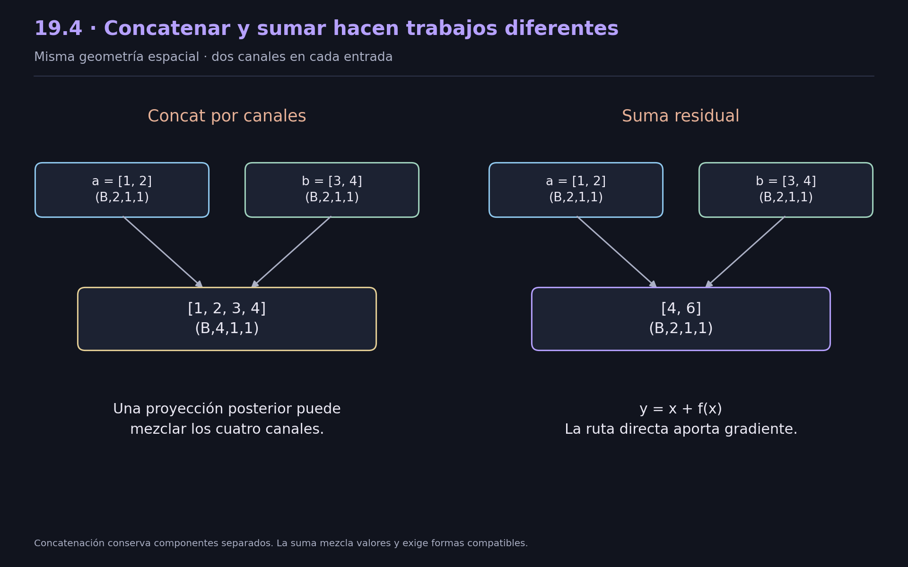
Figura 19.6 — Concatenación y suma residual: diferencias de valores y formas.
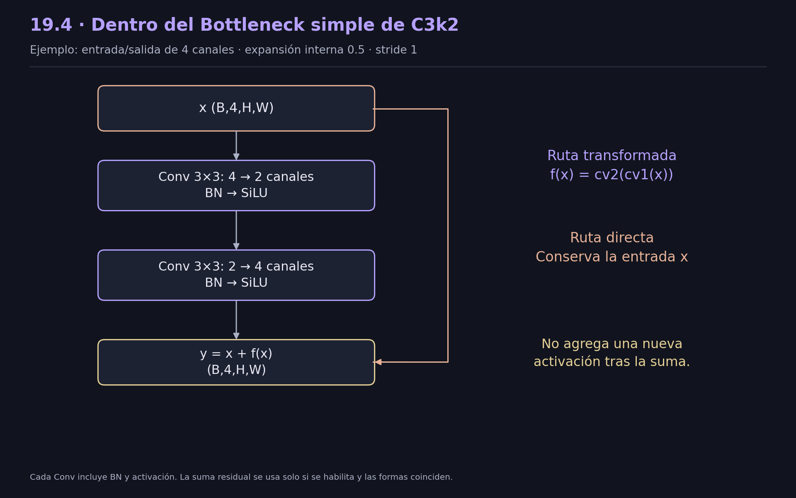
Figura 19.7 — Dos Conv internas y conexión residual del Bottleneck simple de C3k2.
19.4.4. Qué Seleccionan c3k y attn
| Configuración de los subbloques | Unidad de transformación Tᵢ en esta versión |
|---|---|
c3k=False, attn=False |
Bottleneck |
c3k=True, attn=False |
C3k, con sus Bottleneck internos |
attn=True |
Bottleneck seguido de PSABlock; esta selección tiene prioridad |
-
C3k2 no significa kernel 2×2. El nombre identifica una familia de módulos; el tamaño y la cantidad de operaciones se determinan leyendo su configuración. C3k permite kernels configurables y conserva el patrón de rutas parciales de C3..
-
ndel constructor es un número de subbloques internos. -
El campo
repeatsdel YAML se ajusta por profundidad y se introduce en ese argumento al construir el módulo.- Por ejemplo,
repeats=2con profundidad 0.5 producen=1en Nano; no implica dos módulos completos consecutivos.
- Por ejemplo,
19.4.5. Qué ocurre dentro de C3k: rutas anidadas
Cuando
c3k=True, cada unidad Tᵢ exterior es unC3k, que conserva la estructura deC3: dos proyecciones iniciales , una rama que atraviesa Bottleneck, otra ruta corta, concatenación de las dos ramas finales y proyeccióncv3.
Diferencia clave: C3k reúne los dos finales; la envoltura exterior C3k2/C2f conserva también sus estados intermedios. Son dos niveles de rutas parciales anidadas. No deben sumarse o confundirse sus cantidades de bloques.
-
Ejemplo de una unidad : recibe cuatro canales y devuelve cuatro.
-
C3kusa su expansión por defecto 0.5, así que cada rama inicial tiene dos canales. -
En esta selección,
C3k2construyeC3kcon dos Bottleneck internos; estos usan expansión propia 1.0, conservando los dos canales dentro de cada Conv. -
La concatenación final tiene cuatro canales y
cv3devuelve cuatro.
-
Aquí hay tres parámetros de anchura que pueden parecer similares:
eexterior deC3k2,einterior de C3k y expansión del Bottleneck. Cada uno pertenece a un constructor distinto. La figura muestra la unidadC3kinterior, que sustituye a una de la figura 19.5.
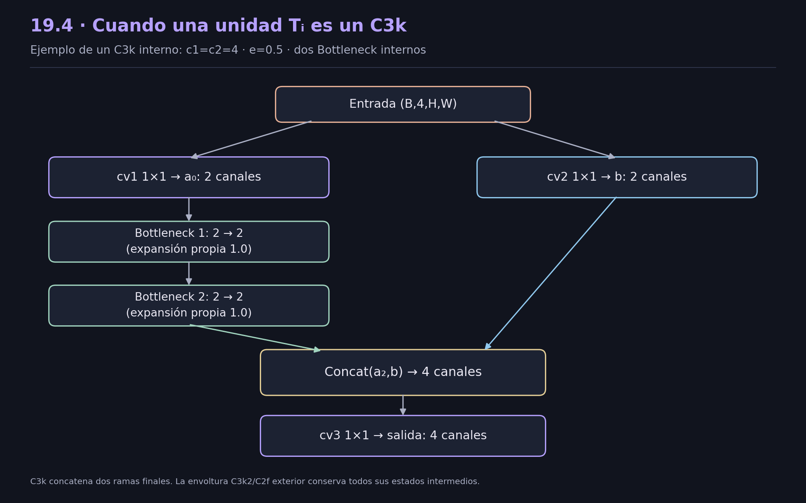
Figura 19.8 — Dos rutas y dos Bottleneck en un C3k interno; los dos finales se concatenan.
19.4.6. Forward completo de las variantes simple y C3k con NumPy
Ahora sí reproducimos la secuencia de Conv, BN de evaluación, SiLU, Bottleneck residual y concatenación para c3k=False, attn=False, y luego sustituimos las unidades internas por C3k. La semilla fija hace reproducibles ambos ejemplos.
19.5. SPPF (Spatial Pyramid Pooling): contexto de varios vecindarios
19.5.1. Un pooling rápido de varios alcances
SPPF significa Spatial Pyramid Pooling — Fast. Aplica una proyección, conserva su resultado y lo pasa por el mismo max-pooling varias veces. Concatena los estados y los mezcla con una Conv final.
donde es la operación de max pooling:
Fragmento de código
m = torch.nn.MaxPool2d(kernel_size=5, stride=1, padding=2)
u1 = m(u)
u2 = m(u1)
u3 = m(u2)
- Con
k=5, stride 1 y padding 2, los alcances sobreuson 5×5, 9×9 y 13×13. Cada aplicación agrega cuatro posiciones al tamaño efectivo de cada dimensión. El alcance de la iteración t es1+t(k−1); esto describe el pooling secuencial, no el campo receptivo total respecto de la imagen RGB.
En cada canal,
mtoma una ventana y devuelve su valor máximo. No mezcla canales ni tiene pesos entrenables. Las tres llamadas reutilizan la misma operación, pero cada una recibe el resultado anterior. docs.pytorch.org
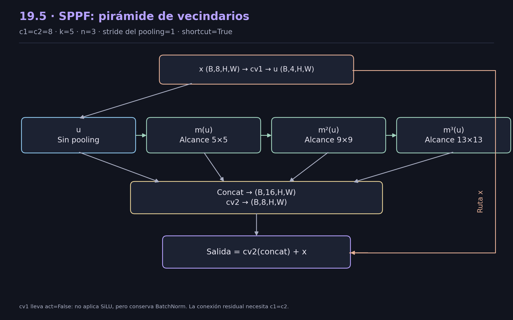
Figura 19.9 — Proyección, pooling secuencial, concatenación y residuo de SPPF.
19.5.2. Analogía: Red de Sensores
Una analogía útil de SPPF es una red de sensores que se transmiten el valor más alto de su vecindario y conservan los informes de cada ronda.
- La clave es esta: los sensores permanecen en las mismas posiciones; lo que aumenta es la distancia desde la que pueden recibir información.
Supongamos una cuadrícula de sensores, como la rejilla de nuestra imagen. Cada sensor representa una posición de un canal del mapa de características u=cv1(x).
- Su lectura es una activación numérica: no tiene que representar una temperatura ni una probabilidad.
En cada ronda, todos aplican la misma regla:
Consultar las 25 posiciones de una ventana , incluida la propia, y conservar el valor mayor.
Todos actualizan a partir de los resultados de la ronda anterior.
Código original · YOLO26
Image(f"{root_class_path}/a8.png")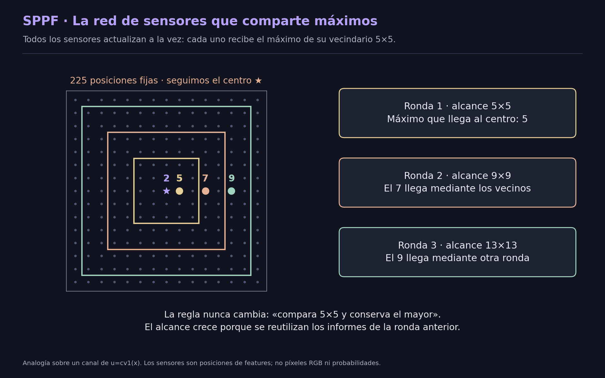
Sigamos el sensor central con números concretos. En esta primera lámina, su lectura original es 2. En la misma fila hay otras lecturas:
| Posición respecto del centro | Lectura original |
|---|---|
| Centro | 2 |
| Una casilla a la derecha | 5 |
| Tres casillas a la derecha | 7 |
| Cinco casillas a la derecha | 9 |
Las demás posiciones del ejemplo tienen valor 0.
19.5.2.1. Primera Ronda
Una ventana de ancho 5 abarca la posición central y dos casillas hacia cada lado. Por tanto, incluye el 2 y el 5; el 7 y el 9 quedan fuera.
El centro calcula:
No suma las lecturas ni calcula una media. Su nueva lectura es 5 porque ese es el máximo disponible.
19.5.2.2. Segunda Ronda
Sigue consultando , pero sus vecinos ya tienen información de otros vecinos.
-
Ahora el centro consulta valores de
u₁, no directamente los valores originales deu. -
Un vecino situado a una casilla del centro pudo recibir el 7 durante la primera ronda.
- Cuando el centro consulta a ese vecino, recibe información que originalmente estaba a tres casillas.
Cada consulta puede alcanzar dos casillas adicionales:
El alcance respecto del mapa original u tiene radio 4:
Así, la segunda ronda equivale a buscar el máximo en un vecindario efectivo :
Primera aplicación del Pooling u = [i-2, i-1, i, i+1, i+2] -> k=5, 5x5 -> Centro inicial i -> max(u) = i + 1 = 5 -> nuevo centro = 5
u1 => su nuevo centro = 5
Segunda aplicación del pooling
u=[i-2, i-1, i, i+1, i+2]
resumen = u = 5 = i* => i*=5 nuestro nuevo centro (o sea el valor máximo del pooling aplicado sobre U - la representación de todos esos 25 elementos)
- Calculada
i*=5
u1= [i-4, i-3, [i-2, i-1, i, i+1, i+2], i+3, i+4]
u1= [i-4, i-3, i*, i+3, i+4]
m(u1) = 7
i**=7
u1 = [ [i-4, i-3, [i-2, i-1, i, i+1, i+2], i+3, i+4] ]
Tercera aplicación
Entrada: u1 = [ [i-4, i-3, [i-2, i-1, i, i+1, i+2], i+3, i+4] ]
i***=9
i**=7
i*=5
u2 = [ i-6, i-5, [i-4, i-3, [i-2, i-1, i, i+1, i+2], i+3, i+4], i+5, i+6 ]
u2 [i-6, i-5, i***, i+5, i+6]
Cuarta aplicación
i***=9
u2 = [ i-6, i-5, [i-4, i-3, [i-2, i-1, i, i+1, i+2], i+3, i+4], i+5, i+6 ]
[i-8 ,i-7, [ i-6, i-5, [i-4, i-3, [i-2, i-1, i, i+1, i+2], i+3, i+4], i+5, i+6 ], i+7, i+8]
19.5.2.2. Tercera Ronda
Otra reutilización de los informes anteriores.
El 9, originalmente a cinco casillas, puede llegar mediante una cadena de vecinos. El alcance acumulado tiene ahora radio 6:
El centro recibe el máximo de un vecindario efectivo :
No cambiamos el kernel a o . Aplicamos tres veces el mismo kernel ; los alcances mayores aparecen por la composición de las operaciones.
19.5.3. Continuación de la Analogía
Código original · YOLO26
Image(f"{root_class_path}/a9.png")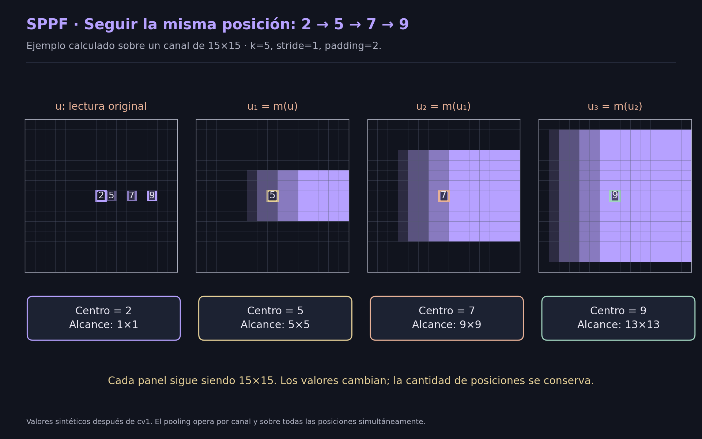
En esta segunda imagen, el pequeño recuadro destaca la misma posición espacial en los cuatro mapas:
Todos los paneles siguen teniendo 15×15 posiciones. Los valores cambian, pero no desaparecen filas o columnas.
Esto permite interpretar nuestra imagen del impulso central. Allí solo hay un valor 1 rodeado de ceros:
-
Tras el primer pooling, 25 ventanas incluyen ese 1: aparece una región con valor 1.
-
Tras el segundo: la información alcanza posiciones.
-
Tras el tercero: alcanza posiciones.
El cuadrado violeta representa las posiciones cuya salida vale 1 después del pooling. Su crecimiento muestra la propagación de ese valor por las operaciones de máximo; no representa un objeto que esté aumentando de tamaño.
- SPPF añade algo esencial a esta red: guarda todos los informes.
Si conserváramos solamente la última ronda, el centro tendría el valor 9. SPPF conserva también los estados anteriores:
| Estado guardado | Lectura del centro | Alcance sobre u |
|---|---|---|
u |
2 | |
u₁ |
5 | |
u₂ |
7 | |
u₃ |
9 |
La analogía es un coordinador que recibe el informe original y los informes de tres rondas de intercambio. Puede combinar información local y contextual, en lugar de trabajar únicamente con el informe más amplio.
19.5.4. Ejemplo Numérico para c1=c2=8
Código original · YOLO26
Image(f"{root_class_path}/a10.png")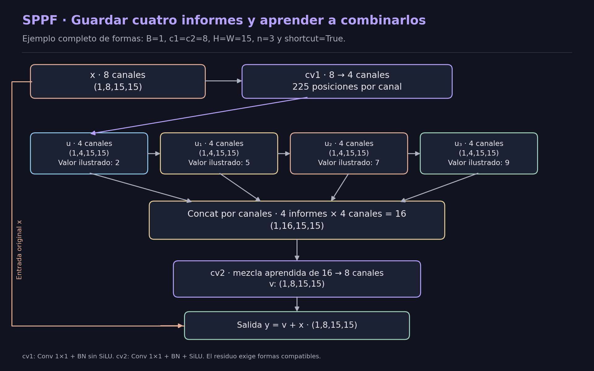
-
La entrada
xtiene ocho canales: en cada posición hay un vector de ocho características.- La proyección
cv1mezcla esas características y produce cuatro canales: Podemos imaginarla como una transformación aprendida de ocho mediciones en cuatro indicadores.
- La proyección
-
Después, cada indicador realiza su propio intercambio de máximos.
- El pooling compara posiciones dentro de un mismo canal; no mezcla los cuatro canales entre sí.
-
Conservamos cuatro estados, cada uno con cuatro canales:
\begin{align} \underbrace{4}{u} +\underbrace{4}{u_1} +\underbrace{4}{u_2} +\underbrace{4}{u_3}
\boxed{16\text{ canales}}. \end{align}
- Por eso la concatenación produce:
\begin{align} (1,4,15,15)\times4 ;\longrightarrow; (1,16,15,15). \end{align}
-
Aquí concatenar significa que cada posición dispone de 16 componentes, provenientes de los cuatro estados. La superficie del mapa sigue siendo .
-
La Conv final
cv2aprende a combinar esos 16 componentes y produce ocho canales. En la implementación revisada,cv1incluye BatchNorm sin SiLU;cv2incluye BatchNorm y la activación habitual. Si se habilita el residuo y las formas coinciden, se suma la entrada original: (y=v+x). Ultralytics
19.5.5. Implementación completa de SPPF en PyTorch: sensores y continuación de C3k2
Ahora convertimos la analogía en un forward real: proyección → tres rondas de máximo → concatenación → fusión → suma residual. Reutilizamos
ConvNormAct,validate_bchwy las herramientas de visualización de 19.2.
Trabajaremos con dos experimentos complementarios:
| Experimento | Entrada | Recorrido de canales | Objetivo |
|---|---|---|---|
| Sensores con pesos controlados | (1,8,15,15) |
8→4→16→8 | Reproducir exactamente 2→5→7→9, y calcular también la Conv final, BN, SiLU y el residuo |
Continuación de caso_1931 |
Salida real de C3k2: (1,16,12,12) |
16→8→32→16 | Conectar ambos bloques usando el tensor ya calculado en 19.3; conservar las 144 posiciones |
-
Por qué hay dos tamaños: pertenece a la analogía de sensores; pertenece al experimento previo de C3k2.
-
El algoritmo no exige uno de esos tamaños: conserva H y W para cualquier entrada compatible.
-
No redimensionaremos el resultado de C3k2 para forzarlo a coincidir con la ilustración.
-
-
Antes de continuar: ejecutar 19.2 y las celdas de 19.3 que crean
caso_1931. Los resultados estáticos de esta sección quedan embebidos; las figuras Plotly se pueden explorar con hover y zoom al ejecutar. Los colores reutilizanBACKGROUND,PANEL,BLUE,ORANGEyWHITEdel notebook.
19.5.5.1. Construir el bloque y registrar un solo forward
La clase SPPF1955 utiliza hidden=c1//2. Su constructor crea:
-
cv1: Convc1→hidden, con BatchNorm yact=False. Conserva la normalización; no aplica SiLU. -
m:nn.MaxPool2d(k, stride=1, padding=k//2). Se reutiliza n veces y cada ronda recibe la salida anterior. -
cv2: Conv(n+1)·hidden→c2, con BatchNorm y SiLU. -
add: activa el residuo únicamente sishortcut=Trueyc1==c2. -
tracedevuelve las etapas para inspección. -
forwardentrega solamente la salida para integrar el bloque en una red. Ninguno aplicadetach,.numpy()nino_gradinternamente, por lo que se conservan los gradientes cuando están habilitados. Las conversiones para dibujar se hacen fuera del forward.
La traza expone también la salida cruda y normalizada de la fusión. Cada BatchNorm se ejecuta una sola vez por forward, para evitar actualizar sus estadísticas dos veces al instrumentar el bloque. La suma residual ocurre después de SiLU y no añade otra activación posterior.
La secuencia se contrastó con SPPF de Ultralytics y el código v8.4.174. La clase didáctica añade validación y trazas; no sustituye todo el backbone ni carga un checkpoint.
Código original · YOLO26
requisitos_1955 = ["ConvNormAct", "validate_bchw", "tensor_numpy", "shape_table",
"show_plot", "dark_layout", "stage_figure", "static_maps", "caso_1931"]
faltantes_1955 = [nombre for nombre in requisitos_1955 if nombre not in globals()]
if faltantes_1955:
raise RuntimeError("Ejecutar antes 19.2 y el caso de 19.3. Faltan: " + ", ".join(faltantes_1955))
print("Helpers compartidos disponibles. La entrada previa de SPPF será:",
tuple(caso_1931["trace"]["output"].shape))
Helpers compartidos disponibles. La entrada previa de SPPF será: (1, 16, 12, 12)
Código original · YOLO26
class SPPF1955(nn.Module):
"""SPPF instrumentado: proyección, pooling secuencial, fusión y residuo.
Args:
c1: Canales de entrada, entero >= 2; hidden = c1 // 2.
c2: Canales de salida, entero positivo.
k: Kernel cuadrado impar y positivo del max-pooling.
n: Número positivo de aplicaciones sucesivas del mismo pooling.
shortcut: Solicita sumar x; se habilita solo cuando c1 == c2.
Attributes:
hidden: Canales de cada informe u, u1, ..., un.
cv1: ConvNormAct 1×1 de c1 a hidden, con act=False y BN conservada.
m: MaxPool2d de kernel k, stride 1 y padding k // 2.
cv2: ConvNormAct 1×1 de (n+1)*hidden a c2, con BN y SiLU.
add: Indica si la salida incluye el residuo externo x.
Notes:
Reproduce las operaciones de SPPF revisado en Ultralytics v8.4.174,
usando la clase ConvNormAct ya definida en 19.2. No carga pesos.
forward y trace mantienen autograd; eval/no_grad los elige el usuario.
Una traza conserva referencias a intermedios y puede retener su grafo.
"""
def __init__(self, c1: int, c2: int, k: int = 5, n: int = 3,
shortcut: bool = False) -> None:
"""Construye el bloque con resolución espacial conservada.
Args:
c1, c2: Canales de entrada y salida.
k: Tamaño impar del pooling; el ejemplo utiliza 5.
n: Cantidad de rondas; el ejemplo utiliza 3.
shortcut: True solicita una suma residual con formas compatibles.
Raises:
ValueError: Si los enteros son inválidos, k es par o shortcut no es bool.
"""
super().__init__()
if any(type(v) is not int for v in (c1, c2, k, n)):
raise ValueError("c1, c2, k y n deben ser enteros.")
if c1 < 2 or c2 < 1 or k < 1 or k % 2 == 0 or n < 1:
raise ValueError("c1>=2, c2>=1, n>=1 y k positivo impar.")
if type(shortcut) is not bool:
raise ValueError("shortcut debe ser True o False.")
self.c1, self.c2, self.k, self.n = c1, c2, k, n
self.hidden = c1 // 2
self.cv1 = ConvNormAct(c1, self.hidden, k=1, act=False)
self.m = nn.MaxPool2d(kernel_size=k, stride=1, padding=k // 2)
self.cv2 = ConvNormAct((n+1)*self.hidden, c2, k=1, act=True)
self.add = shortcut and c1 == c2
def trace(self, x: Tensor) -> dict[str, Any]:
"""Ejecuta una vez el bloque y expone su aritmética intermedia.
Args:
x: Tensor flotante (B,c1,H,W) compatible con dispositivo/dtype del bloque.
Returns:
Diccionario con input, projection_raw, reports, concatenated,
fusion_raw, fusion_bn, transformed y output. reports tiene n+1
tensores (B,hidden,H,W), empezando por u=cv1(x). Los tres últimos
pasos de la fusión tienen c2 canales. No modifica ni separa x.
Raises:
TypeError, ValueError: Si validate_bchw rechaza la entrada.
RuntimeError: Si PyTorch detecta dtype, dispositivo o BN incompatibles.
Notes:
Cada BN se ejecuta una sola vez por llamada. En train usa las
estadísticas del lote; en eval usa sus buffers almacenados.
El residuo se agrega después de SiLU, sin otra activación posterior.
"""
validate_bchw(x, self.c1)
projection_raw = self.cv1.conv(x)
u = self.cv1.activation(self.cv1.bn(projection_raw))
reports = [u]
for _ in range(self.n):
reports.append(self.m(reports[-1]))
concatenated = torch.cat(reports, dim=1)
fusion_raw = self.cv2.conv(concatenated)
fusion_bn = self.cv2.bn(fusion_raw)
transformed = self.cv2.activation(fusion_bn)
output = x + transformed if self.add else transformed
return dict(
input=x,
projection_raw=projection_raw,
reports=reports,
concatenated=concatenated,
fusion_raw=fusion_raw,
fusion_bn=fusion_bn,
transformed=transformed,
output=output
)
def forward(self, x: Tensor) -> Tensor:
"""Devuelve la salida normal del bloque manteniendo autograd.
Args:
x: Tensor flotante (B,c1,H,W), compatible con los parámetros.
Returns:
Tensor (B,c2,H,W). Incluye x si add=True; no modifica la entrada.
Raises:
TypeError, ValueError, RuntimeError: Los errores documentados en trace.
"""
return self.trace(x)["output"]
Cómo leer
reports: el primer elemento esu=cv1(x); no es la entrada original x. Después se agreganm(u),m(m(u))ym(m(m(u))). Cada informe mantiene B, hidden, H y W. Concatenarreportspordim=1multiplica canales, no el ancho ni el alto.
En trace, projection_raw está antes de la primera BN. fusion_raw está antes de la segunda BN; fusion_bn está antes de SiLU; transformed es v después de SiLU; output es y después del residuo, si corresponde. Estas etiquetas evitan confundir la suma lineal con la salida completa.
19.5.5.2. Preparar el ejemplo numérico 2→5→7→9 sin eliminar capas
Los números de la analogía se definen sobre u, después de cv1. Una proyección con pesos aleatorios cambiaría esos valores. Para reproducirlos de forma transparente, fijaremos parámetros didácticos:
-
La entrada tiene ocho canales de . En el canal 0 se colocan 2, 5, 7 y 9 en
(7,7),(7,8),(7,10)y(7,12); el resto vale cero. -
cv1selecciona los primeros cuatro canales mediante cuatro recetas . Es una elección artificial de pesos, no una afirmación de que las proyecciones entrenadas siempre seleccionen canales. -
Ambas BN se configuran como identidad solo en evaluación. Con
running_mean=0,running_var=1,β=0yγ=√(1+ε), se compensa el denominador. No se borra BatchNorm ni se ignora ε. -
cv2, en su canal de salida 0, mezcla los informes del canal 0 con coeficientes 0.1, 0.2, 0.3 y 0.4. Los demás coeficientes son cero.
SiLU y el residuo permanecen activos. Por eso la salida final no es simplemente 9 ni la suma lineal de los informes.
.eval()fija el modo de BN;torch.no_grad()se usa al preparar la traza visual y no forma parte de la clase.
Código original · YOLO26
def bn_identidad_1955(bn: nn.BatchNorm2d) -> None:
"""Configura una BatchNorm afín para funcionar como identidad en eval.
Args:
bn: BatchNorm2d con affine=True y track_running_stats=True.
Returns:
None. Modifica sus parámetros/buffers: mean=0, var=1, beta=0 y
gamma=sqrt(1+eps), que compensa exactamente el denominador ideal.
Raises:
ValueError: Si no hay parámetros afines o buffers de estadísticas.
Notes:
Es una calibración artificial, sin entrenamiento. No convierte BN en
identidad en train. Se esperan pequeñas diferencias de redondeo.
"""
if not bn.affine or not bn.track_running_stats:
raise ValueError("El ejemplo necesita BN afín con estadísticas almacenadas.")
with torch.no_grad():
bn.running_mean.zero_()
bn.running_var.fill_(1.)
bn.weight.fill_(math.sqrt(1.+bn.eps))
bn.bias.zero_()
def crear_caso_sensores_1955(seed: int = 42) -> dict[str, Any]:
"""Construye el ejemplo exacto de sensores 2→5→7→9 dentro de SPPF.
Args:
seed: Semilla CPU local; fork_rng conserva la semilla global.
Returns:
Diccionario model, trace, stages, query y seed. El modelo eval usa
c1=c2=8, k=5, n=3 y residuo. La entrada CPU float32 es (1,8,15,15).
En el canal 0, las posiciones (7,7),(7,8),(7,10),(7,12) valen 2,5,7,9.
cv1 selecciona los cuatro primeros canales; cv2 mezcla los informes
del canal 0 con pesos [0.1,0.2,0.3,0.4] en su salida 0.
Notes:
Todos los otros valores y pesos de mezcla son cero. Los pesos se
fijan para enseñar aritmética; no son un checkpoint aprendido.
Conserva las dos BN y SiLU final; no sustituye capas por un atajo.
"""
with torch.random.fork_rng(devices=[]):
torch.manual_seed(seed)
model = SPPF1955(8, 8, k=5, n=3, shortcut=True).eval()
x = torch.zeros(1, 8, 15, 15)
for columna, valor in ((7, 2.), (8, 5.), (10, 7.), (12, 9.)):
x[0, 0, 7, columna] = valor
with torch.no_grad():
model.cv1.conv.weight.zero_()
for c in range(model.hidden):
model.cv1.conv.weight[c, c, 0, 0] = 1.
model.cv2.conv.weight.zero_()
columns = torch.arange(model.n+1) * model.hidden
model.cv2.conv.weight[0, columns, 0, 0] = torch.tensor([.1, .2, .3, .4])
bn_identidad_1955(model.cv1.bn)
bn_identidad_1955(model.cv2.bn)
trace = model.trace(x)
stages = {"Entrada x": x}
stages.update({"u" if i == 0 else f"u{i}": report
for i, report in enumerate(trace["reports"])})
stages.update({"Concat": trace["concatenated"], "v después de SiLU": trace["transformed"],
"Salida y=v+x": trace["output"]})
return dict(model=model, trace=trace, stages=stages, query=(7,7), seed=seed)
def resumen_sppf_1955(case: dict[str, Any]) -> None:
"""Muestra rondas, formas y valores de un caso de SPPF.
Args:
case: Diccionario con model, trace, stages y query=(fila,columna).
Returns:
None. Imprime configuración, parámetros y valores del canal 0;
muestra una tabla HTML con las formas de stages.
Notes:
numel no mide almacenamiento exclusivo. Los parámetros entrenables
excluyen los buffers de BN. La traza se creó antes de esta función.
"""
model, trace = case["model"], case["trace"]
fila, columna = case["query"]
print(f"SPPF: c1={model.c1}, hidden={model.hidden}, c2={model.c2}, k={model.k}, n={model.n}")
print(f"Canales: {model.c1} → {model.hidden} → {(model.n+1)*model.hidden} → {model.c2}")
print("Residuo externo:", model.add,
"| Parámetros entrenables:", sum(p.numel() for p in model.parameters() if p.requires_grad))
print(f"Consulta (fila={fila}, columna={columna}), canal 0:")
for i, report in enumerate(trace["reports"]):
print(f" {'u' if i==0 else 'u'+str(i)}: valor={report[0,0,fila,columna].item():.6f}; "
f"alcance sobre u={1+i*(model.k-1)}×{1+i*(model.k-1)}")
shape_table(case["stages"])
Código original · YOLO26
caso_sensores_1955 = crear_caso_sensores_1955(seed=42)
resumen_sppf_1955(caso_sensores_1955)
valores_centro_1955 = torch.stack([
reporte[0,0,7,7] for reporte in caso_sensores_1955["trace"]["reports"]
])
torch.testing.assert_close(valores_centro_1955, torch.tensor([2.,5.,7.,9.]), atol=1e-5, rtol=1e-5)
print("Valores verificados:", valores_centro_1955.tolist())
SPPF: c1=8, hidden=4, c2=8, k=5, n=3 Canales: 8 → 4 → 16 → 8 Residuo externo: True | Parámetros entrenables: 184 Consulta (fila=7, columna=7), canal 0: u: valor=2.000000; alcance sobre u=1×1 u1: valor=5.000000; alcance sobre u=5×5 u2: valor=7.000000; alcance sobre u=9×9 u3: valor=9.000000; alcance sobre u=13×13
Valores verificados: [2.0, 5.0, 7.0, 9.0]
Resultado esperado en el centro, canal 0:<>
| Informe | Máximo recibido | Alcance efectivo sobre u | Forma |
|---|---|---|---|
u |
2 | 1×1 | (1,4,15,15) |
u1=m(u) |
5 | 5×5 | (1,4,15,15) |
u2=m(u1) |
7 | 9×9 | (1,4,15,15) |
u3=m(u2) |
9 | 13×13 | (1,4,15,15) |
Las cuatro lecturas pertenecen al mismo canal y a la misma posición. El pooling también calcula las demás posiciones, simultáneamente, a partir del mapa de la ronda anterior. No actualiza casillas in-place reutilizando valores de la ronda que está en curso.
19.5.5.3. Visualizar las rondas y comprobar el impulso central
El borde naranja destaca la posición que seguimos. Los colores comparten una escala entre paneles: permiten comparar valores sin reescalar cada mapa por separado. Representan activaciones, no categorías ni colores RGB. El hover muestra la fila, columna y valor de cualquier casilla.
Código original · YOLO26
def visualizar_pooling_1955(case: dict[str, Any], channel: int = 0,
query: tuple[int, int] | None = None) -> None:
"""Dibuja las rondas con la misma posición destacada y escala común.
Args:
case: Caso con model y trace que contiene reports de SPPF.
channel: Canal común de los informes, entre 0 y hidden-1.
query: Fila/columna que se sigue; None utiliza case['query'].
Returns:
None. Muestra una figura estática Matplotlib y otra Plotly interactiva.
Las matrices se toman de los tensores reales del caso, para b=0.
Raises:
ValueError: Si el canal o las coordenadas no pertenecen al mapa.
Notes:
Reutiliza tensor_numpy, show_plot y dark_layout. La conversión a NumPy
ocurre exclusivamente al dibujar; el forward mantiene tensores PyTorch.
El azul/naranja usa un rango simétrico común; no son clases ni RGB.
"""
reports = case["trace"]["reports"]
if query is None:
query = case["query"]
fila, columna = query
if not 0 <= channel < reports[0].shape[1]:
raise ValueError("Canal fuera del conjunto de informes.")
h, w = reports[0].shape[-2:]
if not 0 <= fila < h or not 0 <= columna < w:
raise ValueError("Consulta fuera del mapa.")
arrays = [tensor_numpy(t)[0, channel] for t in reports]
limit = max(max(float(np.abs(a).max()), 1e-8) for a in arrays)
fig, axes = plt.subplots(1, len(arrays), figsize=(4.1*len(arrays),5.1), squeeze=False)
fig.patch.set_facecolor(BACKGROUND)
for i, (ax, array) in enumerate(zip(axes.flat, arrays)):
image = ax.imshow(array, cmap="RdBu_r", vmin=-limit, vmax=limit)
name = "u" if i == 0 else f"u{i}"
value = float(array[fila,columna]); size = 1+i*(case["model"].k-1)
ax.set_title(f"{name} · alcance {size}×{size}\nConsulta={value:.4f}",color=BLUE,fontsize=13)
ax.add_patch(plt.Rectangle((columna-.5,fila-.5),1,1,fill=False,edgecolor=ORANGE,lw=2))
ax.text(columna,fila,f"{value:.0f}" if abs(value-round(value))<1e-4 else f"{value:.2f}",
ha="center",va="center",color=WHITE,fontsize=11,
bbox=dict(facecolor=BACKGROUND,alpha=.75,edgecolor="none",pad=.7))
ax.set_xlabel("columna"); ax.set_ylabel("fila")
fig.suptitle(f"19.5.5 · misma posición, canal {channel} · todos los mapas {h}×{w}",
fontsize=18,color=WHITE,y=.97)
fig.subplots_adjust(left=.035,right=.92,bottom=.19,top=.81,wspace=.28)
cax=fig.add_axes([.94,.27,.013,.46]); fig.colorbar(image,cax=cax,label="valor compartido")
fig.text(.5,.075,"Pooling por canal: cada ronda recibe el mapa anterior. El tamaño de la rejilla se conserva.",
ha="center",color=ORANGE,fontsize=12)
display(fig); plt.close(fig)
titles = [f"{'u' if i==0 else 'u'+str(i)} · {float(a[fila,columna]):.4f} en la consulta"
for i,a in enumerate(arrays)]
interactive = make_subplots(rows=1,cols=len(arrays),subplot_titles=titles,horizontal_spacing=.06)
for col,array in enumerate(arrays,1):
interactive.add_trace(go.Heatmap(z=array,coloraxis="coloraxis",
hovertemplate="fila=%{y}, columna=%{x}<br>valor=%{z:.6f}<extra></extra>"),row=1,col=col)
interactive.add_shape(type="rect",x0=columna-.5,x1=columna+.5,y0=fila-.5,y1=fila+.5,
line=dict(color=ORANGE,width=3),row=1,col=col)
interactive.update_layout(coloraxis=dict(colorscale="RdBu_r",cmin=-limit,cmax=limit,
colorbar=dict(title="valor")))
interactive.update_xaxes(title="columna")
interactive.update_yaxes(autorange="reversed",title="fila")
show_plot(dark_layout(interactive,"19.5.5 · hover numérico de las rondas de pooling",height=460))
Código original · YOLO26
visualizar_pooling_1955(caso_sensores_1955, channel=0)
# Aislar m para recuperar también la figura original del impulso.
impulso_1955 = torch.zeros(1,1,15,15)
impulso_1955[0,0,7,7] = 1.
estados_impulso_1955 = {"Impulso original": impulso_1955}
conteos_impulso_1955 = []
actual_1955 = impulso_1955
for ronda_1955 in range(1,4):
actual_1955 = caso_sensores_1955["model"].m(actual_1955)
estados_impulso_1955[f"Pool {ronda_1955}"] = actual_1955
conteos_impulso_1955.append(int(torch.count_nonzero(actual_1955)))
assert conteos_impulso_1955 == [25,81,169]
print("Impulso: posiciones con valor 1 después de cada ronda:", conteos_impulso_1955)
static_maps(estados_impulso_1955, "19.5.5 · impulso: 1×1 → 5×5 → 9×9 → 13×13")
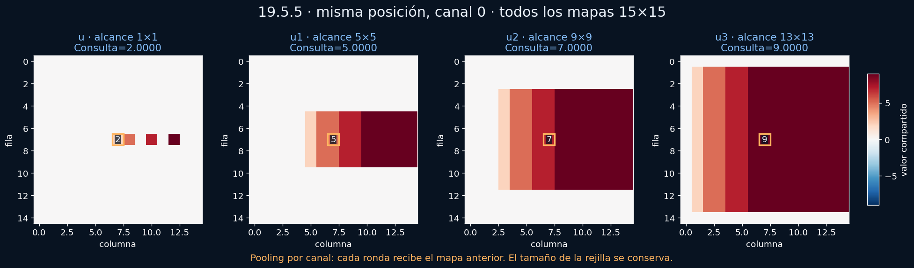
Impulso: posiciones con valor 1 después de cada ronda: [25, 81, 169]
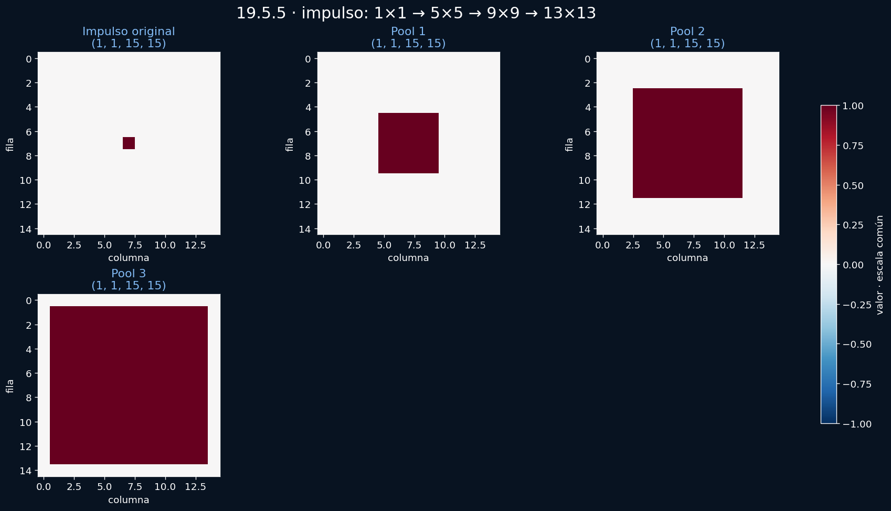
-
El impulso permite observar el alcance del máximo sin otras operaciones. Aquí se está probando
maislado, no un SPPF completo de un solo canal. El bloque completo necesita su entrada de ocho canales y sus proyecciones. -
Las 25, 81 y 169 casillas mantienen valor 1 porque sus ventanas incluyen directa o indirectamente el impulso. La figura no muestra una máscara de instancia ni un objeto creciendo. El alcance se mide sobre u; no es el campo receptivo total de la imagen RGB.
-
El padding mantiene el tamaño: para
H=15,k=5,p=2,s=1, la salida mide15+4−5+1=15. En max-pooling, los bordes se comportan como valores −∞, lo que evita introducir ceros artificialmente grandes en mapas negativos (MaxPool2d).
19.5.5.4. Calcular la concatenación, la Conv final, SiLU y el residuo
La concatenación guarda cuatro bloques de cuatro canales. El vector completo del centro es:
| Índices de canales de U | Procedencia | Índice del canal 0 de ese informe |
|---|---|---|
| 0–3 | u | 0 |
| 4–7 | u1 | 4 |
| 8–11 | u2 | 8 |
| 12–15 | u3 | 12 |
Los únicos pesos no nulos de la receta final 0 están en 0, 4, 8 y 12. Por eso, antes de BN:
Esta suma ponderada pertenece a la Conv final. No es la regla del max-pooling ni un promedio impuesto por SPPF. En un modelo entrenado, la red puede aprender otros pesos, incluidos negativos.
En nuestra BN de evaluación configurada como identidad, el valor sigue siendo 6.9. Después:
-
El residuo agrega el valor original x, no u3. La salida mantiene ocho canales porque suma tensores compatibles; no concatena otro conjunto de canales. No hay una nueva SiLU después de esta suma.
-
Los resultados impresos usan
float32: sus últimos decimales pueden variar respecto de la cuenta matemática ideal. Las aserciones usan tolerancia numérica; no eliminan BN ni SiLU para forzar una igualdad artificial.
Código original · YOLO26
def figura_aportes_sppf_1955(case: dict[str, Any], output_channel: int = 0,
query: tuple[int, int] | None = None) -> None:
"""Descompone la fusión 1×1 en valores, pesos y aportes por alcance.
Args:
case: Caso SPPF en eval con model, trace y query.
output_channel: Receta de cv2, entre 0 y c2-1.
query: Fila/columna; None usa la consulta guardada.
Returns:
None. Imprime los bloques del vector concatenado, comprueba la suma
lineal y dibuja aportes agregados por informe, estáticos e interactivos.
Raises:
ValueError: Si el caso no está en eval o la consulta/receta no es válida.
AssertionError: Si los productos no coinciden con fusion_raw.
Notes:
Los aportes son antes de BatchNorm/SiLU. Sumar por informe agrupa los
hidden canales y no implica que el pooling haga una media o una suma.
"""
model, trace = case["model"], case["trace"]
if model.training:
raise ValueError("Esta inspección del caso guardado se realiza en eval.")
fila,columna=case["query"] if query is None else query
concat=trace["concatenated"]
if not 0<=output_channel<model.c2 or not 0<=fila<concat.shape[2] or not 0<=columna<concat.shape[3]:
raise ValueError("Consulta o receta fuera del tensor.")
values=concat[0,:,fila,columna]
weights=model.cv2.conv.weight[output_channel,:,0,0].detach()
products=values*weights
torch.testing.assert_close(products.sum(),trace["fusion_raw"][0,output_channel,fila,columna],
atol=1e-6,rtol=1e-5)
names=["u"]+[f"u{i}" for i in range(1,model.n+1)]
print(f"Receta {output_channel}, posición ({fila},{columna}):")
for i,name in enumerate(names):
sl=slice(i*model.hidden,(i+1)*model.hidden)
print(f" {name}, canales [{sl.start}:{sl.stop}]:",tensor_numpy(values[sl]),
"| pesos:",tensor_numpy(weights[sl]))
raw=trace["fusion_raw"][0,output_channel,fila,columna].item()
bn=trace["fusion_bn"][0,output_channel,fila,columna].item()
v=trace["transformed"][0,output_channel,fila,columna].item()
y=trace["output"][0,output_channel,fila,columna].item()
print(f"Conv cruda={raw:.6f} | BN={bn:.6f} | SiLU(v)={v:.6f} | salida(y)={y:.6f}")
totals=products.reshape(model.n+1,model.hidden).sum(dim=1)
fig,ax=plt.subplots(figsize=(10,4.8)); fig.patch.set_facecolor(BACKGROUND)
ax.set_facecolor(PANEL)
ax.bar(names,tensor_numpy(totals),color=[BLUE,ORANGE,BLUE,ORANGE][:len(names)]
if len(names)<=4 else ORANGE)
for i,val in enumerate(tensor_numpy(totals)):
ax.annotate(f"{val:.4f}",(i,float(val)),xytext=(0,5 if val>=0 else -15),
textcoords="offset points",ha="center",color=WHITE)
ax.set_ylabel("Suma de peso × valor del informe")
ax.set_title(f"19.5.5 · fusión 1×1: suma antes de BN = {raw:.6f}",color=BLUE)
ax.margins(y=.25); fig.tight_layout(); display(fig); plt.close(fig)
chart=go.Figure(go.Bar(x=names,y=tensor_numpy(totals),marker_color=ORANGE))
chart.update_yaxes(title="Aporte antes de BN y SiLU")
show_plot(dark_layout(chart,"19.5.5 · contribución de cada alcance a una receta",height=420))
Código original · YOLO26
figura_aportes_sppf_1955(caso_sensores_1955, output_channel=0)
traza_sensores_1955 = caso_sensores_1955["trace"]
print("Vector concatenado del centro:", tensor_numpy(traza_sensores_1955["concatenated"][0,:,7,7]))
esperado_z_1955 = torch.tensor(6.9)
esperado_v_1955 = F.silu(esperado_z_1955)
torch.testing.assert_close(traza_sensores_1955["fusion_raw"][0,0,7,7], esperado_z_1955)
torch.testing.assert_close(traza_sensores_1955["fusion_bn"][0,0,7,7], esperado_z_1955)
torch.testing.assert_close(traza_sensores_1955["transformed"][0,0,7,7], esperado_v_1955)
torch.testing.assert_close(traza_sensores_1955["output"][0,0,7,7], esperado_v_1955+2)
print("Suma lineal, BN, SiLU y residuo verificados.")
Receta 0, posición (7,7): u, canales [0:4]: [2. 0. 0. 0.] | pesos: [0.1 0. 0. 0. ] u1, canales [4:8]: [5. 0. 0. 0.] | pesos: [0.2 0. 0. 0. ] u2, canales [8:12]: [7. 0. 0. 0.] | pesos: [0.3 0. 0. 0. ] u3, canales [12:16]: [9. 0. 0. 0.] | pesos: [0.4 0. 0. 0. ] Conv cruda=6.900000 | BN=6.900000 | SiLU(v)=6.893054 | salida(y)=8.893053
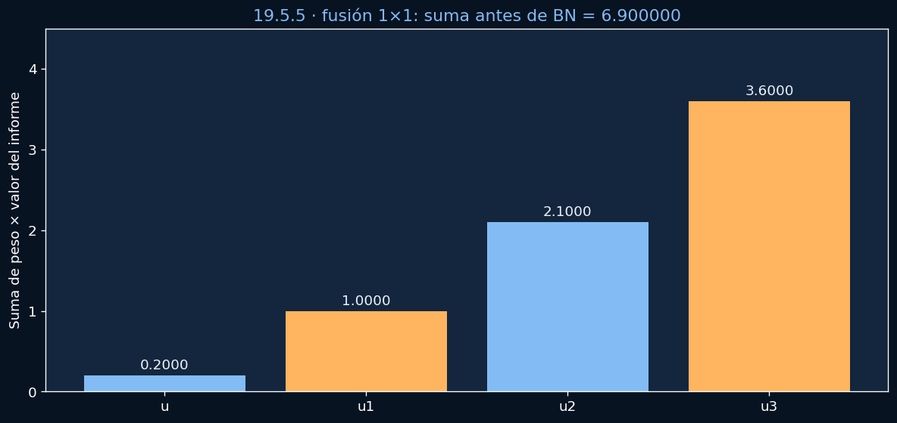
Vector concatenado del centro: [2. 0. 0. 0. 5. 0. 0. 0. 7. 0. 0. 0. 9. 0. 0. 0.] Suma lineal, BN, SiLU y residuo verificados.
19.6. C2PSA: atención parcial y relaciones espaciales
C2PSA combina dos rutas de canales: una corta y otra que relaciona posiciones mediante atención y después transforma sus canales con una FFN. La estructura concreta se toma de Ultralytics v8.4.174, igual que las secciones anteriores. La matemática de atención se fundamenta por separado en Vaswani et al. (2017). C6-1, C6-4.
En este laboratorio hay dos experimentos complementarios: cuatro posiciones con números elegidos para seguir las cuentas, y una cadena real de clases C3k2→SPPF→C2PSA con datos sintéticos. Las analogías y figuras son elaboraciones didácticas propias; no proceden de un checkpoint ni demuestran calidad de detección. La bibliografía se enlaza en cada apartado y se detalla en 19.6.14.
19.6.1. Para qué sirve y dónde aparece en YOLO26
Una
Convcombina vecindarios con filtros compartidos;C3k2reúne rutas de distinta profundidad;SPPFpropaga máximos de vecindarios sucesivos.
C2PSAañade una operación diferente: el contenido de una posición puede combinarse con el de todas las posiciones del mapa usando pesos calculados a partir de ese mismo contenido. Esa posibilidad proporciona contexto global en una rama de canales; no garantiza que todas las relaciones sean útiles ni que el bloque mejore por sí solo una métrica. C6-1, C6-4.
El YAML de detección YOLO26 coloca SPPF en la capa 9 y C2PSA en la 10, al final del backbone. Los índices son de módulos, desde cero.
-
Con entrada , allí se trabaja en la rejilla P5 de , no sobre los 409600 píxeles originales.
-
El parser de
Nanoajusta canales y repeticiones: la instancia de C2PSA tiene256canales,c=128,2cabezas yn=1 PSABlock.
La bibliografía general de YOLO26 describe el modelo completo. Para saber exactamente qué operaciones realiza C2PSA usamos el código de sus clases; el paper de Transformers fundamenta el mecanismo de atención, pero no define por sí mismo C2PSA. C6-1, C6-4, C6-8.
El código denomina a PSABlock un bloque de Position-Sensitive Attention. La palabra «parcial» describe aquí la envoltura: solo una ruta entra a esa pila de bloques. No significa que la matriz de atención omita media imagen. C6-1.
| Bloque ya estudiado | Qué se conserva al llegar a C2PSA | Qué cambia |
|---|---|---|
Conv 1×1 |
Mezclas de canales compartidas entre posiciones | Q/K/V usan mezclas diferentes del mismo mapa |
C3k2 |
Dos rutas y fusión por canales | C2PSA concatena solo A y B final, no todos los estados |
SPPF |
Resolución constante | Atención usa pesos por contenido, no un máximo de vecindarios fijos |
La tabla es una comparación didáctica de las operaciones, no una equivalencia entre los bloques. C6-1, C6-7.
Para continuar el ejemplo pequeño elegimos c1=c2=16, e=0.5, n=2. Son parámetros del laboratorio; no se presentan como la configuración Nano. Reutilizamos ConvNormAct, los datos C3k2 y SPPF1955 de 19.2–19.5.
Código original · YOLO26
requisitos_196 = [
"torch", "Tensor", "nn", "F", "math", "Any", "np", "plt",
"HTML", "display", "widgets", "go", "make_subplots",
"ConvNormAct", "validate_bchw", "tensor_numpy", "shape_table",
"static_maps", "show_plot", "dark_layout", "SPPF1955",
"bn_identidad_1955", "caso_1931"
]
faltantes_196 = [nombre for nombre in requisitos_196 if nombre not in globals()]
if faltantes_196:
raise RuntimeError(
"Ejecuta el soporte de 19.2, el caso C3k2 de 19.3 y las "
"definiciones SPPF de 19.5.5. Faltan: "+", ".join(faltantes_196)
)
print("C2PSA educativo · referencia: Ultralytics v8.4.174 · sin checkpoint entrenado.")C2PSA educativo · referencia: Ultralytics v8.4.174 · sin checkpoint entrenado.
Código original · YOLO26
from matplotlib.patches import FancyBboxPatch, Rectangle
def lienzo_196(titulo: str, pie: str, alto: float = 8.) -> tuple[Any, Any]:
"""Crea un lienzo de diagramación con título y nota bibliográfica.
Args:
titulo: Título visible de la figura.
pie: Explicación de alcance y referencias C6.
alto: Altura en pulgadas; anchura fija de 15.
Returns:
Tupla figura/eje sin coordenadas visibles, con rango 0–1.
"""
fig,ax=plt.subplots(figsize=(15,alto),facecolor="#081321")
fig.subplots_adjust(left=.025,right=.975,top=.90,bottom=.12)
ax.set_facecolor("#081321");ax.set_xlim(0,1);ax.set_ylim(0,1);ax.axis("off")
fig.suptitle(titulo,color="#eaf1fa",fontsize=20,y=.975)
fig.text(.5,.035,pie,ha="center",va="bottom",color="#bdcddd",fontsize=11)
return fig,ax
def caja_196(ax: Any, x: float, y: float, texto: str, w: float = .27,
h: float = .12, color: str = "#83bbf5", size: int = 12) -> None:
"""Añade un nodo rectangular al diagrama.
Args:
ax: Eje con coordenadas 0–1.
x, y: Centro del nodo.
texto: Etiqueta con saltos de línea opcionales.
w, h: Anchura y altura del nodo en coordenadas del eje.
color: Color del borde y texto.
size: Tamaño tipográfico en puntos.
Returns:
None; modifica solamente el eje de Matplotlib.
"""
ax.add_patch(FancyBboxPatch((x-w/2,y-h/2),w,h,boxstyle="round,pad=0.006",
edgecolor=color,facecolor="#13263d",lw=1.7))
ax.text(x,y,texto,ha="center",va="center",color=color,fontsize=size,linespacing=1.35)
def flecha_196(ax: Any, puntos: list[tuple[float,float]],
color: str = "#bdcddd") -> None:
"""Dibuja una conexión por segmentos con una sola punta final.
Args:
ax: Eje del diagrama.
puntos: Coordenadas ordenadas del recorrido; al menos dos.
color: Color de líneas y punta.
Returns:
None; no altera tensores.
Raises:
ValueError: Si no se proporcionan al menos dos puntos.
"""
if len(puntos)<2:
raise ValueError("Se requieren dos puntos como mínimo.")
if len(puntos)>2:
ax.plot(*zip(*puntos[:-1]),color=color,lw=1.5)
ax.annotate("",xy=puntos[-1],xytext=puntos[-2],arrowprops=dict(arrowstyle="->",color=color,lw=1.5))
def mostrar_196(fig: Any) -> None:
"""Embebe una figura estática y cierra su registro en Matplotlib.
Args:
fig: Figura terminada, cuya salida conserva el notebook.
Returns:
None; no guarda rutas externas ni requiere imágenes de Drive.
"""
display(fig)
plt.close(fig)
def matriz_196(ax: Any, datos: Any, titulo: str, xlabel: str, ylabel: str,
labels_x: list[str] | None = None, labels_y: list[str] | None = None,
positiva: bool = False, cifras: int = 3) -> Any:
"""Dibuja una matriz pequeña con todos sus valores, o una matriz grande.
Args:
ax: Eje donde se dibuja la matriz.
datos: Array 2D o Tensor convertible a NumPy.
titulo, xlabel, ylabel: Textos de identificación de matriz y ejes.
labels_x, labels_y: Etiquetas opcionales de columnas y filas.
positiva: True fija mínimo 0; False usa rango simétrico alrededor de 0.
cifras: Decimales de las anotaciones cuando hay como máximo 64 celdas.
Returns:
Artista imshow para añadir una barra de color si se necesita.
Notes:
Cada matriz tiene su escala declarada; los números anotados son los
que se calculan, sin inventar pesos de atención ni respuestas semánticas.
"""
a=tensor_numpy(datos) if isinstance(datos,Tensor) else np.asarray(datos)
lim=max(float(np.abs(a).max()),1e-12)
im=ax.imshow(a,cmap="Blues" if positiva else "RdBu_r",vmin=0 if positiva else -lim,
vmax=lim,aspect="auto")
ax.set_title(titulo,color="#a091e3",fontsize=13,pad=12)
ax.set_xlabel(xlabel);ax.set_ylabel(ylabel)
if labels_x is not None:ax.set_xticks(range(a.shape[1]),labels_x)
if labels_y is not None:ax.set_yticks(range(a.shape[0]),labels_y)
if a.size<=64:
for (i,j),v in np.ndenumerate(a):
textcolor="white" if (v/lim>.55 if positiva else abs(v/lim)>.60) else "#081321"
ax.text(j,i,f"{v:.{cifras}f}",ha="center",va="center",color=textcolor,fontsize=10)
return imCódigo original · YOLO26
Image(f"{root_class_path}/b1.png")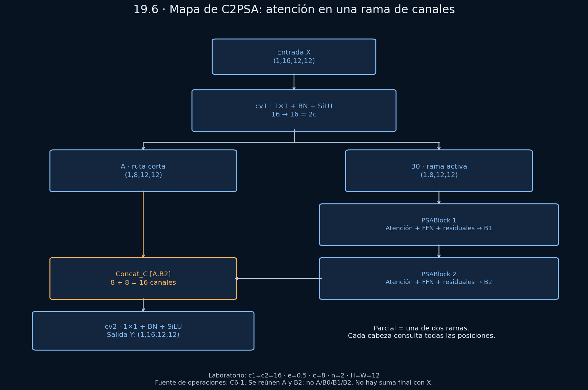
Lectura del mapa:
cv1transforma 16→16 y divide la proyección en dos grupos de 8 canales.Aevita la atención;B0atraviesa dosPSABlock. Se unenAyB2, con canales, ycv2produce 16 salidas.- La ruta corta ya pasó por
cv1y vuelve a mezclarse encv2: no copia sin cambios la mitad de la imagen original.- No hay una suma externa al terminar C2PSA. C6-1.
19.6.2. Analogía: una red que consulta informes por contenido
Imaginemos cuatro estaciones, cada una situada en una coordenada. Cada estación prepara tres vectores a partir de sus características texto en negrita: , que representa lo que consulta; , con lo que otras consultas la comparan; y , el contenido que aporta a la mezcla. Las tres representaciones surgen del mismo mapa, mediante pesos de proyección diferentes: por eso es self-attention. No se introduce una pregunta escrita por una persona. C6-1, C6-4.
Código original · YOLO26
Image(f"{root_class_path}/b2.png")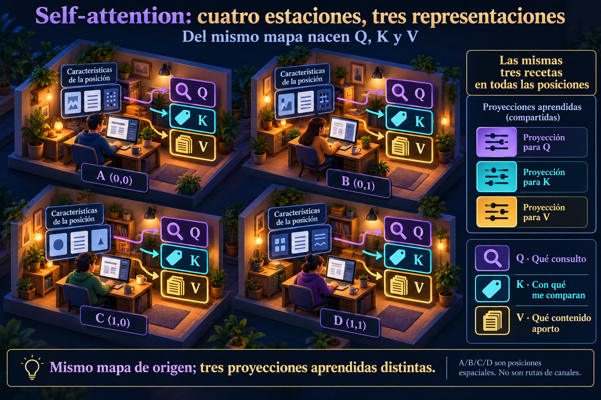
-
Una consulta compara su con cada mediante un producto punto. El score se escala y softmax lo convierte en un peso relativo dentro de esa fila.
-
Después se combinan los usando esos pesos. ayuda a calcular el peso; aporta el contenido que se suma. Un score elevado es compatibilidad numérica del modelo, no una certificación de relevancia real. C6-4, C6-7.
| Analogía | Operación numérica |
|---|---|
| «Qué busco» | Vector query |
| «Cómo se describe cada informe» | Vector key |
| «Qué contenido aporta» | Vector value |
| «Cuánto relaciono esta consulta con esa clave» | |
| «Cómo reparto los pesos de consulta» | softmax sobre todas las fuentes |
| «Qué resumen recibo» | suma ponderada de los values |
19.6.3. Posiciones, canales, cabezas y formas de Q/K/V
La rama activa del laboratorio tiene forma (1,8,12,12). Convertimos sus 144 posiciones en un eje , conservando muestra y canales. El índice espacial se construye como ; su inversa es divmod(i,W). Por ejemplo, (4,4) corresponde a i=52. Esta reorganización no mezcla las muestras del lote ni calcula otra convolución. C6-1.
Donde:
- cabeza;
- y
- .
| Tensor | Forma en el código | Significado |
|---|---|---|
| Rama B | (1,8,12,12) |
8 características por posición |
| Proyección | (1,16,12,12) |
canales |
| y , cada uno | (1,1,4,144) |
Lote, cabeza, componente, posición |
| V | (1,1,8,144) |
8 componentes de contenido por posición |
| Scores y atención | (1,1,144,144) |
Una relación por cada par |
| Contexto reorganizado | (1,8,12,12) |
Un vector de 8 valores por consulta |
1. Rama activa: de dónde salen los ocho canales
| Parámetro | Significado | En nuestro laboratorio |
|---|---|---|
| Muestras independientes | 1 | |
| Canales que recibe la atención | 8 | |
| Alto y ancho del mapa | 12, 12 | |
| Posiciones por muestra | 144 | |
| Cabezas de atención | 1 | |
| Componentes de V por cabeza | 8 | |
attn_ratio |
0.5 | |
| Componentes de Q y de K por cabeza | 4 |
Los ocho canales ya están presentes al entrar a la atención. Si el C2PSA completo recibe 16 canales y usa , su anchura interna sería . Su proyección exterior produce dos ramas de ocho canales. La atención opera en una de ellas. D1
edetermina el ancho de las ramas deC2PSA;attn_ratiodetermina el ancho de y dentro de la atención. Aunque ambos valgan , son decisiones distintas.
En cada posición tenemos un vector, por ejemplo . El mapa contiene 144 de esos vectores, uno por ubicación. La atención recibe la rama completa, no solo su canal 0.
2. h: cuántas cabezas se utilizan
En el laboratorio fijamos . La clase Attention recibe num_heads como argumento. La referencia actual de C2PSA construye sus PSABlock con max(c // 64, 1), que con también da 1. D1
Cada cabeza trabaja de forma independiente con sus representaciones y su matriz de atención. Una cabeza no equivale a una posición. Al usar varias cabezas se exige divisible por en este laboratorio.
3. d_v: cuántos componentes tiene cada contenido
Se reparten los canales de contenido entre cabezas:
Por tanto, cada posición aporta un vector . Ocho es la cantidad de componentes de cada contenido, no la cantidad de estaciones. Con dos cabezas y ocho canales, cada cabeza tendría cuatro componentes de .
4. d_k: cuántos componentes tienen Q y K
La configuración elegida utiliza :
La operación es multiplicación: . Dividir daría 16. El factor reduce la cantidad de componentes, no multiplica las activaciones por 0.5.
-
y comparten dimensión para poder calcular : se multiplican componentes correspondientes y se suman.
-
participa después en una suma ponderada y puede tener otra dimensión.
-
El factor es una elección de arquitectura; la definición general de atención no obliga a usarlo. D1, D2
| Canales QKV | Matrices de atención por muestra | |||
|---|---|---|---|---|
| 1 | 8 | 4 | 16 | 1 |
| 2 | 4 | 2 | 16 | 2 |
| 4 | 2 | 1 | 16 | 4 |
Son variaciones didácticas de Attention, no escalas oficiales de YOLO. Con estos valores se cumple .
5. Proyección : de ocho entradas a dieciséis salidas
Por cabeza necesitamos canales para , otros para y para . Así:
En cada posición, la proyección lee ocho componentes y genera dieciséis:
Para la proyección lineal aislada, sin bias:
Apilar esas matrices produce , una Conv 1×1 con pesos (16,8,1,1). Sus filas son dieciséis recetas compartidas por todas las posiciones. Para , los canales 0–3 son Q, 4–7 son K y 8–15 son V.
La proyección cambia los valores y el número de canales. La reorganización posterior solo cambia los ejes. Los dieciséis canales de esta QKV y los dieciséis de una posible proyección exterior de C2PSA pertenecen a operaciones distintas.
El laboratorio aísla una Conv2d sin bias. En Ultralytics, QKV utiliza Conv(..., act=False), que incluye BatchNorm en el módulo habitual sin fusionar; no se debe atribuir a esa capa completa la suma lineal aislada de nuestro ejemplo. D1, D4
5.1. Ejemplo
1. Una posición tiene ocho valores
Supongamos que en una ubicación del mapa tenemos este vector:
Sus ocho componentes corresponden a los ocho canales de entrada en esa ubicación.
Ahora queremos construir tres representaciones de ese mismo vector:
| Representación | Cuántos valores recibe | Cuántos produce |
|---|---|---|
| Los ocho valores de | 4 | |
| Los mismos ocho valores de | 4 | |
| Los mismos ocho valores de | 8 |
2. ¿Cómo puede una matriz convertir ocho valores en cuatro?
Cada fila de la matriz de pesos produce un valor de salida.
Por ejemplo, elegimos esta matriz sencilla para :
Tiene:
-
Ocho columnas, porque cada receta recibe ocho componentes.
-
Cuatro filas, porque queremos cuatro resultados.
Al multiplicar:
La primera fila calcula:
La segunda produce 2, la tercera produce 3 y la cuarta produce 4.
En este ejemplo los pesos seleccionan componentes para facilitar las cuentas.
Una fila con pesos aprendidos puede mezclar los ocho valores mediante:
3. Repetimos el procedimiento para y
-
Para elegimos cuatro recetas que seleccionan los últimos cuatro componentes.
-
Para elegimos ocho recetas que conservan los ocho componentes.
Obtenemos:
Las dimensiones de sus matrices se explican por salidas × entradas:
| Matriz | Filas: resultados que produce | Columnas: componentes que recibe |
|---|---|---|
Por eso:
4. ¿Por qué juntarlas da una matriz de ?
Podemos ejecutar las tres transformaciones con una única matriz, colocando sus recetas una debajo de otra:
Todas tienen ocho columnas. Al apilarlas, sumamos sus filas:
Entonces:
El resultado numérico es un único vector:
Esos son los dieciséis canales de la proyección en una posición. Después se separan los primeros cuatro, los siguientes cuatro y los últimos ocho.
5. ¿Qué relación tiene esto con una Conv ?
Una Conv puede aplicar esas dieciséis recetas a los ocho canales de cada ubicación:
Fragmento de código
nn.Conv2d(
in_channels=8, # Ocho valores disponibles por posición.
out_channels=16, # Dieciséis recetas: cuatro Q, cuatro K y ocho V.
kernel_size=1,
bias=False,
)
Sus pesos tienen forma:
| Eje | Significado |
|---|---|
| 16 | Filtros o recetas de salida |
| 8 | Canales que utiliza cada filtro |
| 1, 1 | Tamaño espacial del filtro |
La misma matriz de recetas se aplica en las 144 posiciones:
6. Entonces, ¿qué significa la fórmula original?
Con una cabeza:
Agrupando los dos términos iguales:
Con cabezas, cada una requiere su propio grupo de componentes:
El 16 cuenta cuántos resultados calculamos por posición. Luego, reorganizar esos resultados para introducir los ejes de cabeza y posición no calcula nuevas recetas: solamente cambia cómo quedan organizados.
19.6.4. Implementación instrumentada: Attention → PSABlock → C2PSA
Reutilizamos
ConvNormActde 19.2: todas las Conv siguientes incluyen BN.act=Falseomite solo SiLU, no la normalización. Usamos clases con sufijo196para no reemplazar las definiciones anteriores. Losforwardpermiten autograd; en los experimentos numéricos elegimoseval()yno_grad(). Una traza guarda referencias a intermedios y puede retener su grafo. C6-1, C6-7.
19.6.4.1. Attention: relaciones espaciales, contenido y PE
Implementamos la ruta explícita de atención, con scores y pesos visibles. La referencia escala Q antes del producto; aquí escalamos el resultado para separar los pasos de la cuenta. Son expresiones algebraicamente equivalentes, con posibles diferencias de redondeo de coma flotante. No se reproducen las ramas de exportación. C6-1, C6-4.
Código original · YOLO26
Image(f"{root_class_path}/b12.png")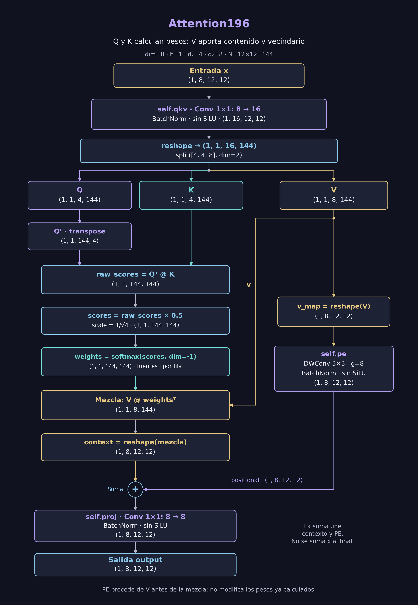
Código original · YOLO26
"""Attention196 comentada para incorporar al notebook de YOLO.
Requiere las definiciones previas de ConvNormAct y validate_bchw de 19.2.
Se supone que ConvNormAct usa stride=1 y padding=k//2 para conservar H,W,
Conv2d sin bias, BatchNorm2d y una activación Identity cuando act=False.
Fuentes:
- https://docs.ultralytics.com/reference/nn/modules/block/#ultralytics.nn.modules.block.Attention
- https://docs.pytorch.org/docs/stable/generated/torch.nn.Conv2d.html
- https://openreview.net/pdf?id=3KWnuT-R1bh
La interpretación de la rama pe como información espacial local sigue la
operación del código. El artículo de CPE ofrece contexto conceptual;
no implica que este módulo implemente todos los detalles de CPVT.
"""
import math
from typing import Any
from torch import Tensor, nn
class Attention196(nn.Module):
"""Atención espacial, término posicional depthwise y proyección final.
Args:
dim: Canales de la rama activa, divisible por num_heads.
num_heads: Número positivo de cabezas independientes.
attn_ratio: Factor para Q/K; key_dim=int(head_dim*attn_ratio).
Notes:
Ejemplo seguido en comentarios: dim=8, num_heads=1, H=W=12.
No carga pesos preentrenados; sus parámetros pueden entrenarse.
No aplica máscara causal, dropout ni residual externo x+output.
El diccionario de trace conserva matrices N×N para inspección.
"""
def __init__(self, dim: int, num_heads: int = 1,
attn_ratio: float = .5) -> None:
"""Construye las proyecciones y valida las dimensiones de las cabezas.
Args:
dim: Canales de entrada/salida de esta atención.
num_heads: Cabezas; debe dividir dim exactamente.
attn_ratio: Anchura relativa de Q/K respecto a V por cabeza.
Raises:
ValueError: Si los enteros, divisibilidad, ratio o key_dim son inválidos.
"""
super().__init__()
# Ambos argumentos deben ser enteros positivos. Se excluyen bool.
# El cortocircuito de `or` evita evaluar el módulo si heads es 0.
# Cada cabeza recibe el mismo número de canales: dim % heads == 0.
if any(type(v) is not int or v < 1 for v in (dim, num_heads)) or dim % num_heads:
raise ValueError("dim y num_heads deben ser positivos; num_heads divide dim.")
# Excluye bool, valores no numéricos, NaN, infinito, cero y negativos.
if (isinstance(attn_ratio, bool) or not isinstance(attn_ratio, (int, float))
or not math.isfinite(attn_ratio) or attn_ratio <= 0):
raise ValueError("attn_ratio debe ser positivo y finito.")
self.dim, self.num_heads = dim, num_heads
# dv: dimensión de V por cabeza. Ejemplo: 8 // 1 = 8.
# Es una elección de esta arquitectura: h*dv conserva dim canales.
self.head_dim = dim // num_heads
# dk: dimensión de Q y K por cabeza. Ejemplo: int(8*0.5)=4.
# El ratio determina una cantidad de componentes, no su amplitud.
self.key_dim = int(self.head_dim * attn_ratio)
# Un ratio demasiado pequeño podría truncar key_dim a cero.
if self.key_dim < 1:
raise ValueError("Cada Q/K necesita al menos una componente.")
# Factor de escalado de los productos punto: 4**(-0.5)=1/2.
# Se divide por sqrt(dk); N=H*W no interviene en este factor.
self.scale = self.key_dim ** -.5
# X \in R 1x8x12x12 -> b=1, c=8, w=h=12
# X[0, 3, :, :] -> 12 x 12 = 144 -> Canal 3
# X[0, :, 4, 4] -> X[x1, x2, x3, ..., x8]
# -> fila =4 columna = 4
# Total de salidas de QKV: h*dk + h*dk + h*dv.
# Como h*dv=dim: total=dim+2*h*dk. Ejemplo: 8+2*1*4=16.
total_qkv = dim + 2 * num_heads * self.key_dim
# Conv 1×1: combina los dim canales dentro de cada ubicación.
# En el ejemplo: (B,8,H,W) -> (B,16,H,W).
# Las recetas se comparten espacialmente. No mezcla vecinos con su kernel.
# act=False quita SiLU, pero NO quita BatchNorm en este soporte.
self.qkv = ConvNormAct(dim, total_qkv, k=1, act=False)
# Rama espacial local: Conv 3×3 depthwise + BN, sin SiLU.
# g=dim: un canal por grupo y un filtro 3×3 por canal de V.
# El kernel mezcla vecinos de un mismo canal; no mezcla canales.
# Con stride=1 y padding=1 conserva (B,dim,H,W).
# Su papel posicional viene de los desplazamientos del kernel 3×3.
self.pe = ConvNormAct(dim, dim, k=3, g=dim, act=False)
# Proyección final 1×1 + BN: mezcla canales tras sumar contexto y pe.
# Conserva dim; no es un reshape ni una segunda atención.
self.proj = ConvNormAct(dim, dim, k=1, act=False)
def trace(self, x: Tensor) -> dict[str, Any]:
"""Ejecuta una vez la atención y devuelve todos sus intermedios.
Args:
x: Tensor flotante (B,dim,H,W), compatible con los parámetros.
Returns:
Diccionario de tensores sin detach: conserva autograd.
weights[b,h,i,j] es el peso de la fuente j para la consulta i.
La salida final tiene la misma forma espacial que x.
"""
# Valida tensor flotante, cuatro ejes y dim canales según el soporte.
validate_bchw(x, self.dim)
# Ejemplo: batch=1, channels=8, height=12, width=12.
batch, channels, height, width = x.shape
# Cada ubicación será un token espacial: N=12*12=144.
positions = height * width
# Calcula nuevas representaciones: Conv 1×1 -> BN -> Identity.
# Ejemplo: (1,8,12,12) -> (1,16,12,12).
projected = self.qkv(x)
# Organiza las salidas por cabeza y aplana solo el espacio.
# No modifica los valores ya proyectados ni mezcla el lote.
# Ejemplo: (1,16,12,12) -> (1,1,16,144).
packed = projected.reshape(
batch,
self.num_heads,
2 * self.key_dim + self.head_dim,
positions
)
# Cada cabeza tiene su grupo [Q,K,V], con dk,dk,dv componentes.
# q,k: (B,h,dk,N) -> (1,1,4,144).
# v: (B,h,dv,N) -> (1,1,8,144).
# Es una separación por componentes, no por ubicaciones espaciales.
q, k, v = packed.split(
[self.key_dim, self.key_dim, self.head_dim],
dim=2
)
# transpose intercambia solo los dos últimos ejes: dk,N -> N,dk.
# (B,h,N,dk) @ (B,h,dk,N) -> (B,h,N,N).
# Cada entrada R[i,j] = sum_l q[l,i]*k[l,j] es un producto punto.
# El @ realiza todos esos productos como multiplicación matricial.
raw_scores = q.transpose(-2, -1) @ k
# Scores escalados: S[i,j] = R[i,j] / sqrt(dk).
# No cambia su forma (B,h,N,N); aquí multiplica por 0.5.
scores = raw_scores * self.scale
# Para cada consulta i, normaliza sus N fuentes j.
# P[i,j] = exp(S[i,j]) / sum_t exp(S[i,t]).
# Cada fila suma 1, salvo redondeo. No son parámetros almacenados:
# son pesos de atención calculados para las características de entrada.
weights = scores.softmax(dim=-1)
# Mezcla contenidos: Z[a,i] = sum_j V[a,j] * P[i,j].
# (B,h,dv,N) @ (B,h,N,N) -> (B,h,dv,N).
# La transposición alinea j con el eje sobre el que se suma.
# Después reúne h*dv=dim canales y recupera la rejilla de consultas.
# Ejemplo: (1,1,8,144) -> (1,8,12,12).
context = (v @ weights.transpose(-2, -1)).reshape(batch, channels, height, width)
# Recupera la rejilla de los V ANTES de la mezcla por atención.
# No es el contexto anterior: son las fuentes V organizadas en 2D.
v_map = v.reshape(batch, channels, height, width)
# Construye el término espacial desde el vecindario 3×3 de cada V.
# Conv depthwise -> BN -> Identity. Forma: (B,dim,H,W).
# Su valor depende de V y de sus vecinos; no es una tabla de coordenadas.
positional = self.pe(v_map)
# Suma componente a componente dos mapas de idéntica forma:
# contexto de las N fuentes + aporte espacial local de los V originales.
# Esta suma NO modifica los scores ni weights calculados antes.
before_projection = context + positional
# Mezcla los canales de la suma mediante Conv 1×1 + BN.
# Salida: (B,dim,H,W). No se añade x como residual externo aquí.
output = self.proj(before_projection)
# Expone resultados para inspección; no recalcula las capas ni hace detach.
return dict(
input=x,
qkv=projected,
q=q,
k=k,
v=v,
raw_scores=raw_scores,
scores=scores,
weights=weights,
context=context,
positional=positional,
before_projection=before_projection,
output=output,
height=height,
width=width
)
def forward(self, x: Tensor) -> Tensor:
"""Entrega solo el tensor final; mantiene gradientes si están habilitados."""
# model(x) usa forward y conserva la interfaz habitual de nn.Module.
# trace permite ver intermedios; forward devuelve únicamente output.
return self.trace(x)["output"]
1. Preparar : distintas mezclas del mismo mapa
Fragmento de código
self.head_dim = dim // num_heads
self.key_dim = int(self.head_dim * attn_ratio)
self.scale = self.key_dim ** -0.5
Con dim=8, num_heads=1 y attn_ratio=0.5:
la capa:
Fragmento de código
self.qkv = ConvNormAct(
dim,
dim + 2 * num_heads * self.key_dim,
k=1,
act=False,
)
produce:
Esos canales se reparten en 4 para Q, 4 para K y 8 para V. La convolución aprende dieciséis mezclas de los ocho valores disponibles en cada posición. Conserva las 144 posiciones espaciales. Esta organización sigue la implementación de atención de Ultralytics. Ultralytics
Después:
Fragmento de código
packed = projected.reshape(
batch,
self.num_heads,
2 * self.key_dim + self.head_dim,
positions,
)
q, k, v = packed.split(
[self.key_dim, self.key_dim, self.head_dim],
dim=2,
)
reshape reorganiza los ejes y split separa los grupos; aquí no se aprenden pesos nuevos.
| Tensor | Forma |
|---|---|
| Entrada | (1,8,12,12) |
| Proyección QKV | (1,16,12,12) |
| Q | (1,1,4,144) |
| K | (1,1,4,144) |
| V | (1,1,8,144) |
Código original · YOLO26
Image(f"{root_class_path}/b5.png")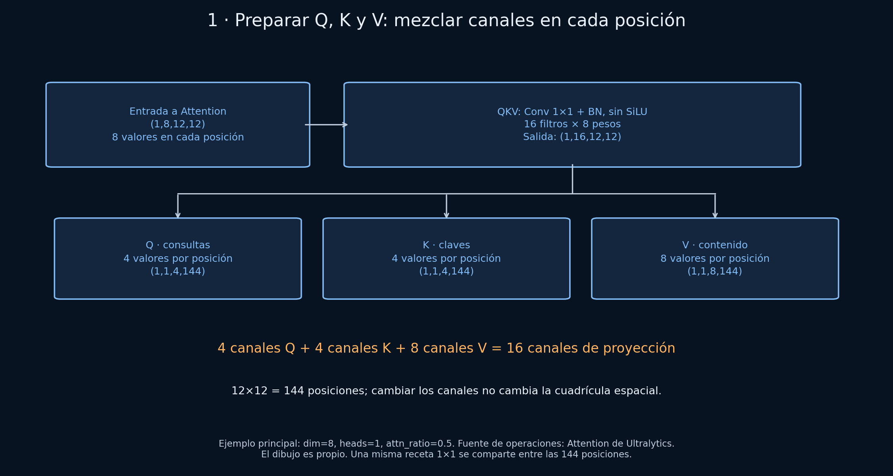
2. Calcular el contexto global: qué posiciones aportan contenido
Estas líneas calculan las relaciones:
Fragmento de código
raw_scores = q.transpose(-2, -1) @ k
scores = raw_scores * self.scale
weights = scores.softmax(dim=-1)
Cada entrada de raw_scores contiene un producto punto:
El producto matricial calcula todas esas parejas simultáneamente. Después se escala y se aplica softmax sobre las posiciones fuente .
Finalmente:
Fragmento de código
context = (
v @ weights.transpose(-2, -1)
).reshape(batch, channels, height, width)
calcula, para cada consulta:
Q y K determinan los pesos; V aporta los valores que se combinan. Es el mecanismo de atención escalada descrito por Vaswani et al.
Código original · YOLO26
Image(f"{root_class_path}/b6.png")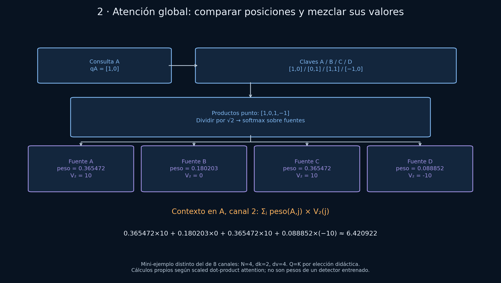
Para verlo numéricamente, la imagen de arriba utiliza el ejemplo pequeño de cuatro posiciones, con . Para la consulta A:
Después del escalado y softmax:
Si una componente de V vale [10,0,10,−10], el contexto correspondiente es:
Esta operación permite recibir contenido de posiciones lejanas dentro del mapa.
3. ¿Qué hace groups=dim dentro de pe?
La definición es:
Fragmento de código
self.pe = ConvNormAct(
dim,
dim,
k=3,
g=dim,
act=False,
)
Para dim=8, su convolución equivale a:
Fragmento de código
nn.Conv2d(
in_channels=8,
out_channels=8,
kernel_size=3,
stride=1,
padding=1,
groups=8,
bias=False,
)
groups=8divide las conexiones en ocho grupos. Como hay ocho canales de entrada y ocho de salida, cada canal se procesa con su propio filtro , sin sumar otros canales dentro de esa convolución. Esta configuración se denomina depthwise, con multiplicador 1. PyTorch 2.14 documentation
Por ejemplo:
-
El canal 0 de PE utiliza el vecindario del canal 0 de .
-
El canal 1 de PE utiliza el vecindario del canal 1 de .
-
Así sucesivamente hasta el canal 7.
Los filtros pueden aprender pesos diferentes. Cada filtro se comparte entre todas las posiciones de su canal.
| Configuración de Conv 3×3 | Forma de los pesos | Pesos de convolución |
|---|---|---|
groups=1 |
(8,8,3,3) |
576 |
groups=8 |
(8,1,3,3) |
72 |
-
Estos recuentos excluyen
BatchNorm. -
Los grupos tampoco son las cabezas de atención.
- En este ejemplo hay una cabeza, pero ocho grupos en
pe: controlan operaciones distintas.
- En este ejemplo hay una cabeza, pero ocho grupos en
Código original · YOLO26
Image(f"{root_class_path}/b7.png")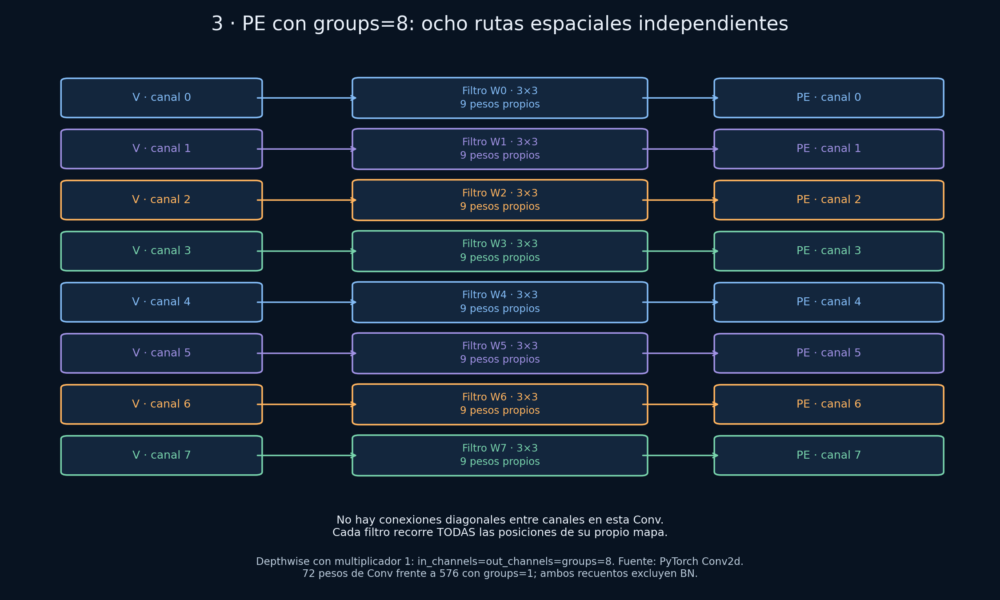
4. ¿Por qué y qué aporta a la posición?
Un kernel puede combinar la posición central y sus ocho vecinos inmediatos. Los pesos distinguen lugares dentro de esa ventana: arriba, abajo, izquierda, derecha y diagonales.
Por eso esta transformación puede responder a cómo se distribuyen localmente las características, además del contenido que reunió la atención global. La implementación de Ultralytics añade precisamente esta rama espacial sobre V. Ultralytics
Podemos escribir la parte de convolución como:
Código original · YOLO26
Image(f"{root_class_path}/b8.png")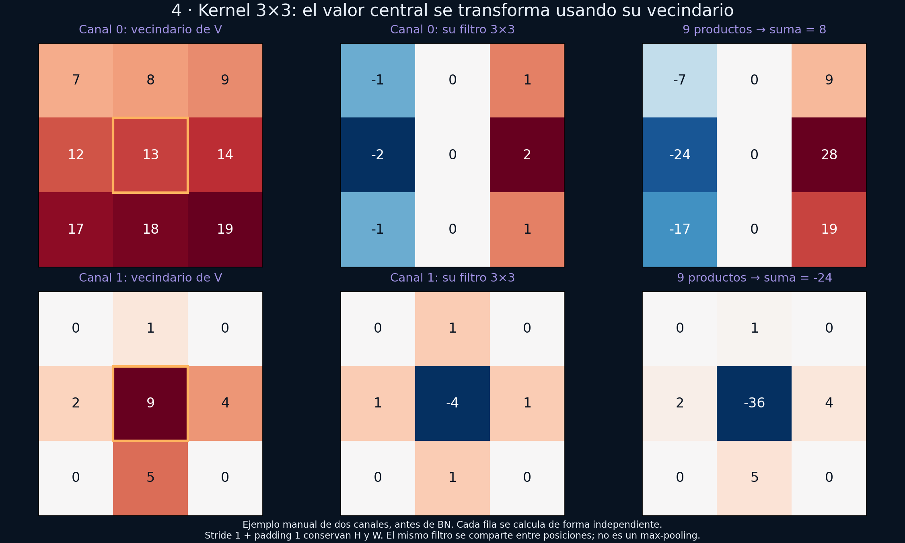
El padding permite calcular las posiciones de borde. El tamaño es una elección de esta arquitectura, no una condición matemática que impida usar otros tamaños. PyTorch 2.14 documentation
- El nombre
petampoco implica una tabla de coordenadas absolutas: aquí designa una transformación espacial local de .
5. ¿Por qué ConvNormAct, qué significa act=False y cómo termina el bloque?
Aunque se llame ConvNormAct, con:
Fragmento de código
act=False
la secuencia es:
Fragmento de código
Conv2d → BatchNorm2d → Identity
Se conserva BatchNorm y se omite SiLU. BatchNorm transforma cada canal con sus estadísticas y parámetros:
En evaluación usa estadísticas guardadas; durante entrenamiento calcula estadísticas sobre lote y posiciones de cada canal. Por ello, el vecindario describe la convolución; BatchNorm introduce además su comportamiento de normalización. PyTorch 2.14 documentation
Después se ejecuta:
Fragmento de código
v_map = v.reshape(batch, channels, height, width)
positional = self.pe(v_map)
before_projection = context + positional
output = self.proj(before_projection)
Aquí se unen dos contribuciones de igual forma:
-
: contenido combinado mediante atención global.
-
: transformación del vecindario local de .
La suma conserva los ocho canales. Después,
proj, una Conv con BN y sin SiLU, vuelve a mezclar los canales. Esta es la secuencia que implementa la referencia. Ultralytics
19.6.4.2. PSABlock: atención y FFN, cada una con su residual
Con residuales activados, el orden es y . La
FFNusaConv 1×1dec→2cconSiLUy otra de2c→csinSiLU; ambas incluyen BN. No añadimosLayerNormni unaSiLUextra después de cada suma, porque no forman parte de este PSABlock. C6-1, C6-7.
Código original · YOLO26
Image(f"{root_class_path}/b10.png")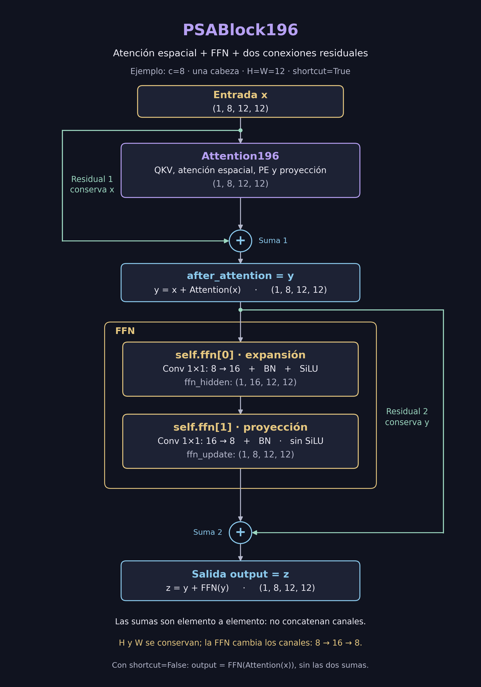
Código original · YOLO26
class PSABlock196(nn.Module):
"""Atención espacial y FFN, con dos conexiones residuales opcionales.
Args:
c: Canales de entrada y salida de la rama activa.
num_heads: Número de cabezas de atención; debe dividir c.
attn_ratio: Factor que determina la dimensión de Q/K por cabeza.
shortcut: True habilita las dos sumas residuales internas.
Attributes:
attn: Atención completa, incluyendo su término posicional y proyección.
ffn: Dos Conv 1×1: expansión c→2c y proyección 2c→c.
add: Booleano que controla ambas sumas residuales.
Notes:
Los comentarios siguen este ejemplo:
c=8
num_heads=1
entrada=(1,8,12,12)
Las convoluciones de la FFN mezclan canales por posición.
No construyen otra matriz de atención espacial N×N.
"""
def __init__(
self,
c: int,
num_heads: int = 1,
attn_ratio: float = .5,
shortcut: bool = True
) -> None:
"""Construye la atención y las dos capas de la FFN.
Args:
c: Canales activos, validados al construir Attention196.
num_heads: Cantidad de cabezas de atención.
attn_ratio: Anchura relativa de Q/K respecto a V por cabeza.
shortcut: Activa o desactiva las dos conexiones residuales.
Raises:
ValueError: Si shortcut no es bool o las dimensiones son inválidas.
"""
super().__init__()
if type(shortcut) is not bool:
raise ValueError("shortcut debe ser booleano.")
# --------------------------------------------------------------- #
# 1. ATENCIÓN ESPACIAL
# --------------------------------------------------------------- #
# Construye Attention196 con:
# dim = c
# num_heads = num_heads
# attn_ratio = attn_ratio
#
# Esta atención ya incluye:
# QKV → scores → softmax → mezcla de V → suma de PE → proyección.
#
# Recibe y devuelve la misma forma:
# (B,c,H,W) → (B,c,H,W).
#
# Ejemplo:
# (1,8,12,12) → (1,8,12,12).
self.attn = Attention196(c, num_heads, attn_ratio)
# --------------------------------------------------------------- #
# 2. FFN: TRANSFORMACIÓN DE CANALES
# --------------------------------------------------------------- #
# FFN significa Feed-Forward Network.
#
# Sequential guarda dos capas ordenadas:
# self.ffn[0]: primera capa.
# self.ffn[1]: segunda capa.
#
# Ejecutar self.ffn(tensor) aplicaría ambas sucesivamente.
self.ffn = nn.Sequential(
# Primera capa: expansión de canales.
#
# Conv 1×1: c → 2c.
# En el ConvNormAct utilizado:
# Conv → BatchNorm → SiLU.
#
# Ejemplo:
# (1,8,12,12) → (1,16,12,12).
#
# Produce dieciséis combinaciones de los ocho canales.
# La expansión no consiste en duplicar sus valores.
# H y W permanecen iguales.
ConvNormAct(c, 2*c, k=1),
# Segunda capa: regreso al número original de canales.
#
# Conv 1×1: 2c → c.
# act=False omite SiLU; BatchNorm sigue presente.
#
# Ejemplo:
# (1,16,12,12) → (1,8,12,12).
#
# Recuperar c canales permite realizar la suma residual:
# entrada de FFN + salida de FFN.
ConvNormAct(2*c, c, k=1, act=False)
)
# Guarda la decisión sobre las conexiones residuales.
#
# True:
# suma tras la atención y suma tras la FFN.
#
# False:
# aplica atención y FFN sin esas dos sumas.
#
# Este indicador no desactiva las operaciones internas de Attention196.
self.add = shortcut
def trace(self, x: Tensor) -> dict[str, Any]:
"""Ejecuta el bloque y expone sus resultados intermedios.
Args:
x: Tensor flotante (B,c,H,W), compatible con el módulo.
Returns:
Diccionario con:
input: Entrada original.
attention: Diccionario de la traza de Attention196.
after_attention: Resultado tras atención y primer residual.
ffn_hidden: Representación expandida de 2c canales.
ffn_update: Transformación FFN de c canales.
output: Resultado final del bloque.
Raises:
TypeError, ValueError, RuntimeError:
Si la atención o las convoluciones rechazan la entrada.
Notes:
Cada capa se evalúa una sola vez en esta ejecución.
No usa detach ni desactiva autograd.
"""
# --------------------------------------------------------------- #
# 3. EJECUTAR LA ATENCIÓN
# --------------------------------------------------------------- #
# Procesa x mediante la atención completa.
#
# IMPORTANTE:
# `attention` es un diccionario, no el tensor de salida.
#
# Entre sus entradas están Q, K, V, scores, pesos y PE.
# El resultado final de la atención está en:
# attention["output"].
#
# Su forma coincide con la de x:
# (1,8,12,12).
attention = self.attn.trace(x)
# --------------------------------------------------------------- #
# 4. PRIMER RESIDUAL
# --------------------------------------------------------------- #
# Si self.add=True:
# y = x + Attention196(x).
#
# Si self.add=False:
# y = Attention196(x).
#
# La suma es elemento a elemento:
# mismo lote, canal, fila y columna.
#
# Ambas entradas tienen c canales, por lo que la suma conserva:
# (B,c,H,W).
#
# No concatena canales ni modifica x mediante una operación in-place.
after_attention = (
x + attention["output"]
if self.add
else attention["output"]
)
# --------------------------------------------------------------- #
# 5. EXPANSIÓN DE LA FFN
# --------------------------------------------------------------- #
# La FFN recibe el resultado completo de la etapa anterior.
#
# Con shortcut=True, recibe:
# x + Attention196(x).
#
# Aplica la primera ConvNormAct:
# Conv 1×1 → BatchNorm → SiLU.
#
# Ejemplo:
# (1,8,12,12) → (1,16,12,12).
ffn_hidden = self.ffn[0](after_attention)
# --------------------------------------------------------------- #
# 6. PROYECCIÓN DE LA FFN
# --------------------------------------------------------------- #
# Aplica la segunda ConvNormAct:
# Conv 1×1 → BatchNorm, sin SiLU.
#
# Ejemplo:
# (1,16,12,12) → (1,8,12,12).
#
# `ffn_update` contiene la transformación calculada por la FFN.
# El nombre "update" no implica actualizar manualmente los pesos.
ffn_update = self.ffn[1](ffn_hidden)
# --------------------------------------------------------------- #
# 7. SEGUNDO RESIDUAL
# --------------------------------------------------------------- #
# Si self.add=True:
# z = y + FFN(y).
#
# Aquí y = after_attention.
# Por tanto, se suma la transformación a la ENTRADA de la FFN.
#
# Si self.add=False:
# z = FFN(y).
#
# Ambas entradas de la suma tienen forma:
# (1,8,12,12).
#
# ffn_hidden tenía dieciséis canales y no podría sumarse
# directamente a after_attention, que tiene ocho.
output = (
after_attention + ffn_update
if self.add
else ffn_update
)
# --------------------------------------------------------------- #
# 8. DEVOLVER LOS INTERMEDIOS
# --------------------------------------------------------------- #
# Permite inspeccionar cada etapa sin volver a ejecutar las capas.
#
# attention contiene otra traza: es un diccionario anidado.
# Los demás resultados son tensores.
#
# Como no se usa detach, conservan su conexión con autograd.
return dict(
input=x,
attention=attention,
after_attention=after_attention,
ffn_hidden=ffn_hidden,
ffn_update=ffn_update,
output=output
)
def forward(self, x: Tensor) -> Tensor:
"""Devuelve únicamente la salida del bloque.
Args:
x: Tensor flotante (B,c,H,W).
Returns:
Tensor (B,c,H,W), con los residuales que determine shortcut.
Raises:
TypeError, ValueError, RuntimeError:
Los mismos errores documentados en trace.
"""
# model(x) llama a forward.
#
# Ejecuta la traza una vez y extrae solamente el tensor final.
# Mantiene la interfaz habitual de un módulo de PyTorch:
# tensor de entrada → tensor de salida.
return self.trace(x)["output"]19.6.4.3. Producto punto frente a producto matricial: seguir una celda
Tomemos cuatro consultas y cuatro claves, cada una con dos componentes. Vamos a construir toda la matriz de comparaciones.
1. Guardamos las consultas y las claves como filas
Ambas matrices tienen forma : cuatro vectores, con dos componentes cada uno.
2. Transponemos K para colocar cada clave en una columna
Ahora sus columnas son, de izquierda a derecha:
3. Una fila de se compara con cada columna de
Tomemos la primera fila, correspondiente a la consulta A:
Su multiplicación por produce:
Por tanto:
Hicimos cuatro productos punto y obtuvimos cuatro números: una fila completa del resultado.
4. Repetimos con todas las consultas
La multiplicación completa es:
Cada celda se calcula tomando una fila de la primera matriz y una columna de la segunda:
El resultado es:
Ordenamos tanto las filas como las columnas así: A, B, C, D.
Para leerlo:
| Celda | Consulta | Fuente | Producto punto |
|---|---|---|---|
En Python y PyTorch, los índices comienzan en cero:
| Letra | Índice |
|---|---|
| A | 0 |
| B | 1 |
| C | 2 |
| D | 3 |
Por lo tanto:
Fragmento de código
R[0, 2] # Fila A, columna C → 1
En la matriz de atención de nuestro módulo hay dos ejes adicionales:
Fragmento de código
raw_scores[0, 0, 0, 2]
# │ │ │ └─ Fuente C: columna 2
# │ │ └──── Consulta A: fila 0
# │ └─────── Cabeza 0
# └────────── Muestra 0 del lote
La fila identifica quién consulta; la columna identifica con quién se compara.
19.6.4.3. C2PSA: dos rutas y fusión de sus dos finales
La implementación exige c1=c2, igual que la clase de referencia. Aquí
econtrola c, no una ganancia sobre las activaciones;ncuenta PSABlock, no cabezas ni el total de Conv. Con , solo una de las dos mitades de la proyección entra a la pila de atención, pero esa mitad conserva todas las posiciones. No seleccionamos la mitad izquierda de la imagen. C6-1.
Código original · YOLO26
Image(f"{root_class_path}/b11.png")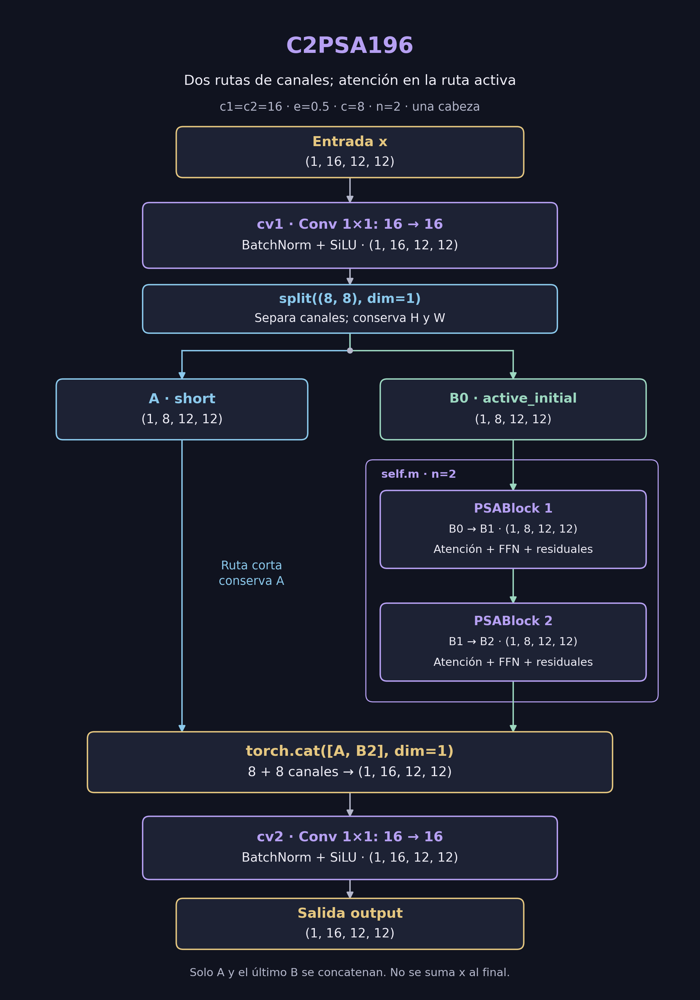
Código original · YOLO26
"""C2PSA196 comentado para incorporar al notebook.
Requiere ConvNormAct, PSABlock196 y validate_bchw definidos previamente.
Los comentarios usan c1=c2=16, n=2, e=0.5 y entrada (1,16,12,12).
"""
class C2PSA196(nn.Module):
"""Dos rutas de canales, PSABlock sucesivos en una ruta y fusión final.
Args:
c1: Canales de entrada, entero positivo.
c2: Canales de salida; este bloque exige c2=c1.
n: Número entero positivo de PSABlock en la ruta activa.
e: Factor positivo y finito; c=int(c1*e).
Attributes:
c: Anchura de cada ruta, con c>=2 en este laboratorio.
num_heads: max(c//64,1), con divisibilidad validada después.
cv1: ConvNormAct 1×1 de c1 a 2c, con BN y SiLU.
m: n PSABlock independientes, con attn_ratio=0.5 y shortcut=True.
cv2: ConvNormAct 1×1 de 2c a c2, con BN y SiLU.
Notes:
A/B son rutas de canales que conservan todas las posiciones.
La ruta corta también atraviesa cv1 y cv2.
La concatenación utiliza A y el último B, no todos los intermedios.
No se suma la entrada x al final del bloque completo.
"""
def __init__(self, c1: int, c2: int, n: int = 1, e: float = .5) -> None:
"""Construye las dos proyecciones y la secuencia de atención parcial.
Args:
c1, c2: Anchuras externas positivas e iguales.
n: Cantidad de PSABlock; por defecto 1, en el ejemplo usamos 2.
e: Factor para calcular canales internos; no escala activaciones.
Raises:
ValueError: Si los argumentos o las dimensiones internas son inválidos.
"""
super().__init__()
if any(type(v) is not int or v < 1 for v in (c1, c2, n)) or c1 != c2:
raise ValueError("c1 y c2 deben ser enteros positivos iguales; n>=1.")
if isinstance(e, bool) or not isinstance(e, (int, float)) or not math.isfinite(e) or e <= 0:
raise ValueError("e debe ser positivo y finito.")
# Conserva la configuración para validación e inspección.
self.c1, self.c2, self.n, self.e = c1, c2, n, float(e)
# Anchura de CADA ruta después de la proyección inicial.
# Ejemplo: int(16*0.5)=8 canales para A y 8 para B.
# int trunca la parte decimal; no multiplica x por e.
self.c = int(c1 * e)
# Propone una cabeza por cada 64 canales, con un mínimo de una.
# Ejemplo: max(8//64,1)=1.
# Esta regla no garantiza por sí sola que num_heads divida c.
self.num_heads = max(self.c // 64, 1)
# Comprueba tres condiciones:
# 1. c>=2, mínimo del laboratorio con attn_ratio=0.5.
# 2. c es divisible por el número de cabezas.
# 3. dk=int((c//num_heads)*0.5)>=1.
# En el ejemplo: c=8, heads=1, dv=8 y dk=4.
if self.c < 2 or self.c % self.num_heads or int((self.c // self.num_heads) * .5) < 1:
raise ValueError("La anchura activa no es compatible con las cabezas y Q/K.")
# Proyección inicial: Conv 1×1 -> BN -> SiLU.
# Produce DOS grupos de c canales, total 2c.
# Ejemplo: (1,16,12,12) -> (1,16,12,12), porque 2c=16.
# Aunque coincida la forma, sí se transforman los valores.
self.cv1 = ConvNormAct(c1, 2*self.c, k=1)
# Crea n PSABlock distintos, cada uno con sus propios parámetros.
# range(n) repite la CONSTRUCCIÓN, no reutiliza una misma instancia.
# El * desempaqueta los módulos como argumentos de Sequential.
# Al pasar solo c y num_heads, se usan los valores por defecto:
# attn_ratio=0.5 y shortcut=True, según PSABlock196.
# Todos reciben y devuelven (B,c,H,W).
self.m = nn.Sequential(*(PSABlock196(self.c, self.num_heads) for _ in range(n)))
# Fusión final: Conv 1×1 -> BN -> SiLU.
# Recibe la concatenación de dos rutas: c+c=2c canales.
# Produce los c2 canales pedidos para la salida completa.
self.cv2 = ConvNormAct(2*self.c, c2, k=1)
def trace(self, x: Tensor) -> dict[str, Any]:
"""Ejecuta el bloque y expone las rutas y las trazas de los PSABlock.
Args:
x: Tensor flotante (B,c1,H,W), compatible con el módulo.
Returns:
Diccionario input, projected, short, active_initial, blocks,
active_final, concatenated y output.
Raises:
TypeError, ValueError, RuntimeError: Si la validación o las capas fallan.
Notes:
Las trazas conservan el grafo si autograd está activo.
Son variables locales: no acumula trazas en atributos entre llamadas.
"""
# Valida la entrada, incluidos sus c1 canales.
validate_bchw(x, self.c1)
# Calcula la proyección inicial UNA vez, antes de separar las rutas.
# Ejemplo: entrada de 16 canales -> proyección de 16 canales.
projected = self.cv1(x)
# Divide el eje 1, que es el de canales en el formato (B,C,H,W).
# Primeros c canales: short, ruta corta A.
# Siguientes c canales: active, ruta activa B0.
# Ambas rutas conservan el lote y TODAS las posiciones H×W.
# Ejemplo: dos tensores (1,8,12,12).
short, active = projected.split((self.c, self.c), dim=1)
# Guarda una referencia al B0 inicial para inspección.
# No hace clone: active_initial y active apuntan aquí al mismo tensor.
# Luego active se reasigna a las salidas; B0 sigue accesible con este nombre.
active_initial = active
# Lista local para guardar los diccionarios de traza de cada PSABlock.
# Es instrumentación: no es una lista de tensores para concatenar.
blocks = []
# Recorre los n PSABlock en el orden registrado en Sequential.
# Para n=2: B0 -> PSABlock_1 -> B1 -> PSABlock_2 -> B2.
# La ruta corta A no pasa por estos PSABlock.
for block in self.m:
# Ejecuta este PSABlock UNA vez con la salida activa anterior.
# current es un diccionario; current["output"] es el tensor final.
current = block.trace(active)
# Conserva su traza para consultar atención, FFN y residuales.
# Guardar la traza no añade este estado a la concatenación final.
blocks.append(current)
# Actualiza el tensor que recibirá el siguiente PSABlock.
# Tras la primera iteración es B1; tras la segunda, B2.
# Conserva (B,c,H,W), pero sus valores se transforman.
active = current["output"]
# Concatena A y únicamente el ÚLTIMO resultado activo Bn.
# Ejemplo n=2: cat([A,B2]), no cat([A,B0,B1,B2]).
# La concatenación apila canales sin sumarlos ni promediarlos.
# (1,8,12,12) + (1,8,12,12) -> (1,16,12,12) por canales.
concatenated = torch.cat([short, active], dim=1)
# Devuelve las etapas y calcula cv2 UNA vez sobre la concatenación.
# cv2 mezcla las dos procedencias y entrega (B,c2,H,W).
# Que c1=c2 no significa que aquí se haga x+salida: no hay esa suma.
return dict(
input=x,
projected=projected,
short=short,
active_initial=active_initial,
blocks=blocks,
active_final=active,
concatenated=concatenated,
output=self.cv2(concatenated)
)
def forward(self, x: Tensor) -> Tensor:
"""Devuelve únicamente la salida convencional del bloque completo.
Args:
x: Tensor flotante (B,c1,H,W).
Returns:
Tensor (B,c2,H,W), sin residual externo automático.
Raises:
TypeError, ValueError, RuntimeError: Los mismos errores de trace.
"""
# model(x) ejecuta la traza una vez y extrae solo el tensor de salida.
# No llama detach ni desactiva autograd; permite propagar gradientes.
return self.trace(x)["output"]
19.6.5. Cadena completa: reutilizar C3k2 y continuar con SPPF y C2PSA
Tomamos el mismo tensor de salida de
caso_1931, de 16 canales y mapa 12×12. Construimos unSPPF1955(16,16,k=5,n=3,shortcut=True)y unC2PSA196(16,16,n=2,e=0.5), con semillas locales. No cambiamos el ejemplo de sensores 8→8 de 19.5.5 ni sus pesos manuales: para continuar desde C3k2, la nueva instancia SPPF recibe 16 canales. C6-1.
| Paso | Forma |
|---|---|
| Salida C3k2 / entrada SPPF | (1,16,12,12) |
| Salida SPPF / entrada C2PSA | (1,16,12,12) |
| Cada ruta A/B0/B1/B2 de C2PSA | (1,8,12,12) |
| Concatenación final [A,B2] | (1,16,12,12) |
| Salida C2PSA | (1,16,12,12) |
C3k2 concatena cuatro informes de 8 → 32; C2PSA concatena dos finales de 8 → 16. Que ambos usen n=2 en este laboratorio no iguala sus reglas de concatenación. Todos conservan H/W en estas configuraciones. C6-1.
Los mapas muestran el canal 0 de cada etapa con escala común. No son una imagen RGB, una máscara ni un mapa de probabilidades de detección. Incluso con índices de canal iguales, las representaciones de dos etapas pueden tener significados diferentes. Los modelos siguen sin entrenamiento. C6-1.
Código original · YOLO26
Image(f"{root_class_path}/b13.png")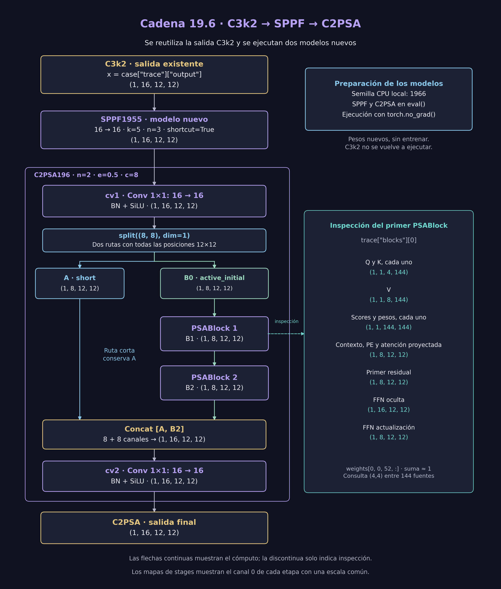
Código original · YOLO26
"""Cadena educativa C3k2 -> SPPF -> C2PSA.
Para ejecutar en el notebook con las definiciones previas de:
Any, torch, Tensor, validate_bchw, SPPF1955, C2PSA196,
caso_1931, shape_table y static_maps.
El ejemplo ilustrado usa una salida C3k2 (1,16,12,12).
"""
def crear_cadena_196(case: dict[str, Any], seed: int = 1966) -> dict[str, Any]:
"""Continúa una salida C3k2 existente con SPPF1955 y C2PSA196.
Args:
case: Diccionario cuyo case['trace']['output'] contiene un mapa
de 16 canales, en CPU y float32, producido previamente por C3k2.
seed: Semilla para inicializar los nuevos modelos. fork_rng restaura
el estado del generador CPU al salir de su contexto.
Returns:
Diccionario con input, sppf_model, sppf_trace, model, trace y stages.
model es C2PSA196; sppf_model es el SPPF1955 anterior a ese bloque.
Conserva la referencia al tensor de salida C3k2 recibido.
Raises:
KeyError: Si no existen las claves 'trace' y 'output' del caso.
TypeError, ValueError: Si validate_bchw rechaza el mapa.
ValueError: Si el mapa no está en CPU o no tiene dtype float32.
Notes:
Inicializa solo SPPF y C2PSA: no vuelve a ejecutar ni entrena C3k2.
eval() configura las capas; no_grad() evita construir el nuevo grafo.
La función no impone H=W=12; ese tamaño pertenece a caso_1931.
Es una cadena educativa, no el modelo completo de YOLO26.
"""
# --------------------------------------------------------------- #
# 1. RECUPERAR LA SALIDA DEL C3k2 YA EJECUTADO
# --------------------------------------------------------------- #
# Accede al tensor que quedó guardado en la traza del caso anterior.
# No ejecuta case['model'] y no crea otra instancia de C3k2.
# Tampoco hace clone() ni detach(): reutiliza la referencia al tensor.
# Ejemplo del laboratorio: x tiene forma (1,16,12,12).
x = case["trace"]["output"]
# Valida la forma BCHW y los 16 canales esperados.
# Este argumento 16 se refiere a canales, no al tamaño del mapa.
validate_bchw(x, 16)
# Los modelos nuevos se construirán con la configuración habitual
# CPU/float32 del laboratorio. Rechaza una entrada incompatible.
# No convierte silenciosamente dtype ni dispositivo.
if x.device.type != "cpu" or x.dtype != torch.float32:
raise ValueError("El caso reproducible de esta celda usa CPU float32.")
# --------------------------------------------------------------- #
# 2. CONSTRUIR LOS DOS MODELOS NUEVOS
# --------------------------------------------------------------- #
# Guarda el estado del generador aleatorio CPU y lo restaura al salir.
# devices=[] indica que no se guardan estados de generadores CUDA.
# Este laboratorio construye y ejecuta los modelos en CPU.
with torch.random.fork_rng(devices=[]):
# Fija la semilla para la inicialización que se hace a continuación.
# La misma semilla y el mismo orden de construcción permiten repetir
# los pesos iniciales bajo las mismas condiciones del entorno.
torch.manual_seed(seed)
# Construye un SPPF1955 nuevo con la configuración indicada.
# Entrada/salida: 16 canales; kernel de pooling 5; n=3;
# shortcut=True según la implementación de SPPF1955 del notebook.
# En el laboratorio conserva (1,16,12,12).
# eval() usa el modo de evaluación, incluidas las estadísticas BN.
# No significa que el modelo haya sido entrenado.
sppf = SPPF1955(16, 16, k=5, n=3, shortcut=True).eval()
# Construye el C2PSA que recibirá la salida del SPPF.
# c1=c2=16, e=0.5 -> c=8 canales por ruta.
# n=2 -> dos PSABlock sucesivos en la ruta activa.
# heads=max(8//64,1)=1; dv=8; dk=int(8*0.5)=4.
# Conserva la forma exterior (1,16,12,12).
model = C2PSA196(16, 16, n=2, e=.5).eval()
# Al salir de fork_rng se restaura el RNG CPU anterior.
# Los modelos creados siguen existiendo con sus parámetros inicializados.
# --------------------------------------------------------------- #
# 3. EJECUTAR SPPF Y DESPUÉS C2PSA
# --------------------------------------------------------------- #
# No construye un grafo nuevo de gradientes para estas operaciones.
# Los parámetros no dejan de ser entrenables por utilizar no_grad().
# Tampoco equivale a eval(): ambos contextos cumplen funciones distintas.
with torch.no_grad():
# Pasa la salida C3k2 por SPPF y conserva su traza completa.
# sppf_trace es un diccionario; su tensor final está en 'output'.
sppf_trace = sppf.trace(x)
# Pasa la salida SPPF al C2PSA, no la x anterior directamente.
# trace contiene las dos rutas, los PSABlock, la concatenación
# y el resultado final de C2PSA.
trace = model.trace(sppf_trace["output"])
# --------------------------------------------------------------- #
# 4. REUNIR MAPAS PARA MOSTRAR LAS ETAPAS
# --------------------------------------------------------------- #
# Diccionario ordenado de nombres y tensores ya calculados.
# Construirlo no vuelve a ejecutar ninguna capa.
stages = {
"C3k2 · salida": x, # (1,16,12,12)
"SPPF · salida": sppf_trace["output"], # (1,16,12,12)
"C2PSA · proyección": trace["projected"], # (1,16,12,12)
"A · ruta corta": trace["short"], # (1, 8,12,12)
"B0 · rama activa": trace["active_initial"] # (1, 8,12,12)
}
# enumerate numera desde cero las trazas de los PSABlock.
# i+1 permite etiquetarlas como B1, B2, ... en lugar de B0, B1, ...
# Cada block es un diccionario; block['output'] es su tensor final.
# Aquí se añaden B1 y B2 para inspección, ambos (1,8,12,12).
stages.update({
f"B{i+1} · PSABlock": block["output"]
for i, block in enumerate(trace["blocks"])
})
# Añade la concatenación y la salida final, ambas de 16 canales.
# La etiqueta B2 es correcta porque este C2PSA se construyó con n=2.
# stages conserva B0/B1/B2 para mostrarlos, pero C2PSA concatena solo A/B2.
stages.update({
"Concat [A,B2]": trace["concatenated"],
"C2PSA · salida": trace["output"]
})
# Devuelve tanto los modelos como sus trazas y los mapas seleccionados.
# input es la SALIDA de C3k2, no la entrada original de toda la red.
# Los nombres model/trace corresponden a C2PSA.
return dict(
input=x,
sppf_model=sppf,
sppf_trace=sppf_trace,
model=model,
trace=trace,
stages=stages
)
# ------------------------------------------------------------------- #
# 5. CREAR LA CADENA Y MOSTRAR SUS FORMAS
# ------------------------------------------------------------------- #
# Reutiliza caso_1931, ya calculado en la sección de C3k2.
# Al no pasar seed, se utiliza la semilla predeterminada 1966.
cadena_196 = crear_cadena_196(caso_1931)
# Muestra las formas de las nueve etapas guardadas en stages.
shape_table(cadena_196["stages"])
# ------------------------------------------------------------------- #
# 6. INSPECCIONAR EL PRIMER PSABLOCK
# ------------------------------------------------------------------- #
# trace es la traza de C2PSA; blocks es su lista de trazas PSABlock.
# [0] selecciona el PRIMER bloque de los dos existentes, no la cabeza 0.
primera_psa_196 = cadena_196["trace"]["blocks"][0]
# Dentro de ese PSABlock, attention es la traza de Attention196.
# Esta variable sigue siendo un diccionario; no es la matriz de pesos.
atencion_cadena_196 = primera_psa_196["attention"]
# Presenta las formas dentro de esa primera atención y su PSABlock.
# N=144 corresponde al mapa 12×12 de caso_1931.
shape_table({
"Q": atencion_cadena_196["q"], # (1,1,4,144)
"K": atencion_cadena_196["k"], # (1,1,4,144)
"V": atencion_cadena_196["v"], # (1,1,8,144)
"Scores": atencion_cadena_196["scores"], # (1,1,144,144)
"Pesos de atención": atencion_cadena_196["weights"], # (1,1,144,144)
"Contexto antes de PE": atencion_cadena_196["context"],# (1,8,12,12)
"PE depthwise": atencion_cadena_196["positional"], # (1,8,12,12)
"Atención proyectada": atencion_cadena_196["output"], # (1,8,12,12)
"Primer residual": primera_psa_196["after_attention"], # (1,8,12,12)
"FFN oculta": primera_psa_196["ffn_hidden"], # (1,16,12,12)
"FFN actualización": primera_psa_196["ffn_update"] # (1,8,12,12)
})
# Resume la configuración del laboratorio.
# N=144 es texto fijo: corresponde al caso 12×12, no se calcula aquí.
print("C2PSA educativo: n=2, c=8, heads=1, dk=4, dv=8, N=144.")
# weights tiene ejes (muestra, cabeza, consulta, fuente).
# [0,0,52] selecciona muestra 0, cabeza 0 y consulta 52,
# conservando las 144 fuentes como un vector.
# En un mapa de ancho 12: 52=4*12+4 -> consulta en la posición (4,4).
# sum() suma los pesos sobre esas fuentes; debería dar aproximadamente 1.
# item() convierte ese tensor escalar en un número de Python.
# Aunque el rótulo diga 'En cada PSABlock', esta línea solo inspecciona
# UNA consulta de la atención del PRIMER PSABlock.
print(
"En cada PSABlock, softmax suma:",
atencion_cadena_196["weights"][0,0,52].sum().item()
)
# ------------------------------------------------------------------- #
# 7. VISUALIZAR LOS MAPAS DE CARACTERÍSTICAS
# ------------------------------------------------------------------- #
# Muestra el canal 0 de cada etapa con una escala de color compartida.
# Permite comparar valores de activaciones entre mapas, no probabilidades.
# Solo se observa un canal por tensor; cada etapa contiene más canales.
# El canal 0 de Concat coincide con el canal 0 de A porque A va primero.
static_maps(
cadena_196["stages"],
"19.6 · cadena real de clases · canal 0 · escala común"
)
C2PSA educativo: n=2, c=8, heads=1, dk=4, dv=8, N=144. En cada PSABlock, softmax suma: 1.0
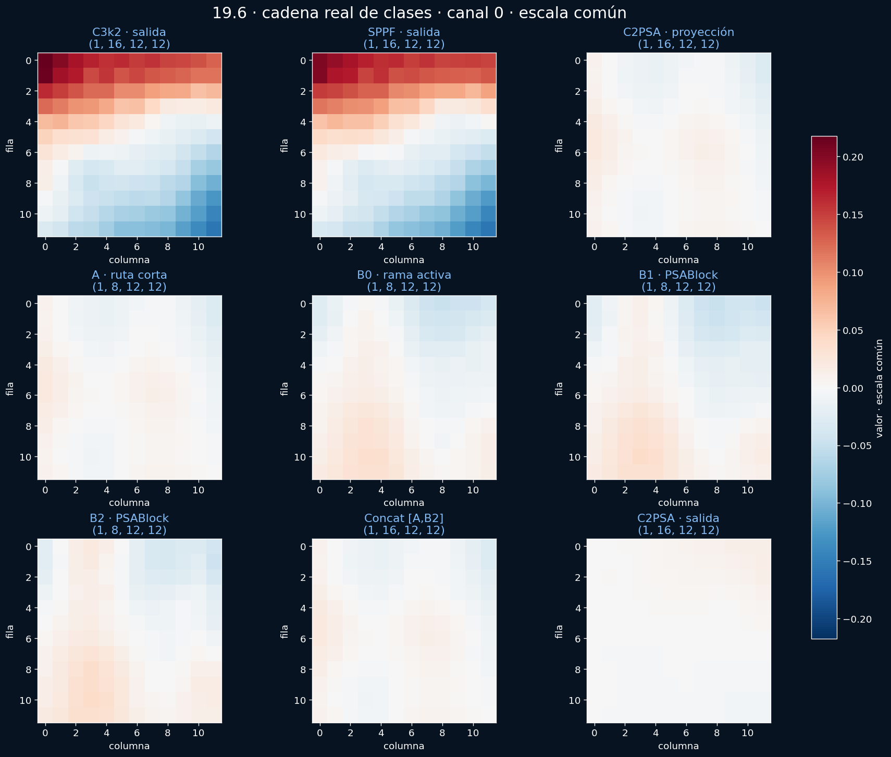
19.6.6. Bibliografía por función y alcance de la validación
C6-1 — Ultralytics, código de los bloques, v8.4.174.
block.py:
clases C2PSA, PSABlock, Attention, y relación con C3k2/SPPF. Fundamenta
restricción c1=c2, split/concat, cabezas, QKV, PE, proyección, FFN y residuales.
La referencia de bloques
sirve para navegación; el tag gobierna la implementación de este laboratorio.
C6-2 — Ultralytics, configuración YOLO26, v8.4.174. yolo26.yaml: posición de SPPF/C2PSA, escalas y repeticiones declaradas.
C6-3 — Ultralytics, construcción del modelo, v8.4.174.
tasks.py, parse_model:
ajuste de anchura, redondeo y profundidad; diferencia entre YAML e instancia Nano.
C6-4 — Vaswani et al. (2017), Attention Is All You Need. Artículo, §3.2.1/3.2.2: scaled dot-product attention, Q/K/V, softmax, mezcla de values y cabezas. Fundamenta la matemática; no es la definición específica del C2PSA de YOLO26.
C6-5 — PyTorch, operaciones de productos.
torch.dot,
torch.matmul
y torch.einsum:
vectores 1D, productos matriciales/batched y contracción explícita de índices.
C6-6 — PyTorch, núcleo de atención.
scaled_dot_product_attention:
ecuación, formas, escalado, máscara, dropout y alternativas de implementación.
C6-7 — Operaciones compartidas y normalización.
Conv oficial v8.4.174,
Conv2d,
BatchNorm2d,
SiLU
y Softmax:
grupos, estadísticas, activaciones y eje de normalización.
C6-8 — Jocher, Qiu, Liu, Lyu, Akyon y Kalfaoglu (2026), Ultralytics YOLO26: Unified Real-Time End-to-End Vision Models. arXiv:2606.03748, material suplementario S2 y página oficial del modelo: contexto del modelo completo y esquemas de arquitectura. El código fijado en C6-1/C6-2 determina los detalles concretos que se programan aquí.
Qué aporta este anexo: las analogías, pesos manuales, ejemplos 2×2/12×12, diagramas y valores de las trazas son elaboraciones docentes. No son figuras copiadas del artículo ni resultados de un detector entrenado. Las pruebas de esta sección comparan álgebra, geometría y gradientes. La equivalencia de la implementación con las clases oficiales fijadas se verifica al preparar el notebook; no se descarga Ultralytics al ejecutar el laboratorio.
19.7. Los cuatro bloques dentro de YOLO26n
La siguiente figura conecta los laboratorios con la arquitectura del notebook principal. Las formas son canales efectivos de Nano, obtenidas del YAML y del parser del tag v8.4.174. La entrada ilustrativa es (B,3,640,640) [F8].
El multiplicador de anchura es 0.25 y el de profundidad 0.50. Las reglas del parser también incluyen límites y redondeo de canales; no siempre basta multiplicar a mano, pero en estos valores Nano la tabla resulta directamente compatible con ellos.
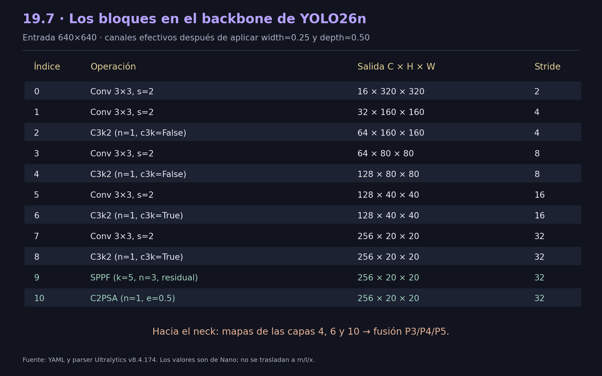
Figura 19.15 — Recorrido de las capas 0–10 del backbone de YOLO26n y sus formas a 640×640.
SPPF y C2PSA reciben (B,256,20,20) en este recorrido. Conservan la forma exterior, pero cambian los valores y las relaciones representadas. Una forma idéntica no implica una operación inútil o una salida igual a la entrada.
Los mapas de las capas 4, 6 y 10 proporcionan al neck las resoluciones de referencia 80×80, 40×40 y 20×20. Después de la fusión, el neck produce P3/P4/P5. La etiqueta del diagrama inicial «Conv · C3k2 · SPPF · C2PSA» enumera tipos de módulos; no representa cuatro únicas capas consecutivas.
Diferencia entre nuestros ejemplos y Nano: los laboratorios usan 8 canales y mapas de 4×4 o 5×5 para ver cálculos; la tabla describe el modelo real configurado, con anchuras y resoluciones mayores. Las reglas de operación son comparables, las cantidades no son intercambiables.
19.8. Neck: Fusión Multiescala con Rutas FPN/PAN
Continuamos la red de sensores del backbone: ahora cada informe debe viajar entre resoluciones, reunirse con información lateral y alimentar tres escalas de predicción.
19.8.0. Preparación de Esta Segunda Parte
Para las cuentas manuales bastan NumPy, PyTorch y Matplotlib, ya utilizados en 19.2. Las celdas que abren el modelo oficial requieren la instalación fijada que sigue. No descargan checkpoints ni datasets. Si se recorre todo el anexo, la importación vuelve a usar los módulos ya cargados.
Código original · YOLO26
root_path = r"/content/drive/MyDrive/1_UPATECO/src/mla/"
root_class_path = f"{root_path}/clase-20"Código original · YOLO26
# Instala el código oficial fijado; no reinstala PyTorch de forma explícita.
%pip install -q "ultralytics==8.4.174"Código original · YOLO26
# Importa herramientas para las cuentas, los tensores y las figuras.
import math
import numpy as np
import torch
import torch.nn.functional as F
import matplotlib.pyplot as plt
# Presenta las figuras directamente en el notebook.
from IPython.display import display
# Mantiene acotado el paralelismo CPU de los ejemplos pequeños.
torch.set_num_threads(min(4, torch.get_num_threads()))
# Configura un estilo consistente con la primera parte del anexo.
plt.style.use("dark_background")
# Identifica el entorno real utilizado al repetir la clase.
print("PyTorch:", torch.__version__, "| CUDA disponible:", torch.cuda.is_available())
PyTorch: 2.11.0+cpu | CUDA disponible: False
19.8.1. El Contrato que Entrega el Backbone al Neck
19.8.1.1. Analogía: Red de Sensores
Las secciones anteriores desarrollan Conv, C3k2, SPPF y C2PSA. Aquí los retomamos como productores de tres mapas, conservando sus valores y gradientes. No se envía solamente el último tensor: se reutilizan salidas anteriores mediante conexiones laterales.
| Nombre usado aquí | Capa del YAML | Forma efectiva de YOLO26n a 640 | Stride |
|---|---|---|---|
| 4 | (B,128,80,80) |
8 | |
| 6 | (B,128,40,40) |
16 | |
| 10, después de C2PSA | (B,256,20,20) |
32 |
Código original · YOLO26
Image(f"{root_class_path}/h1.png")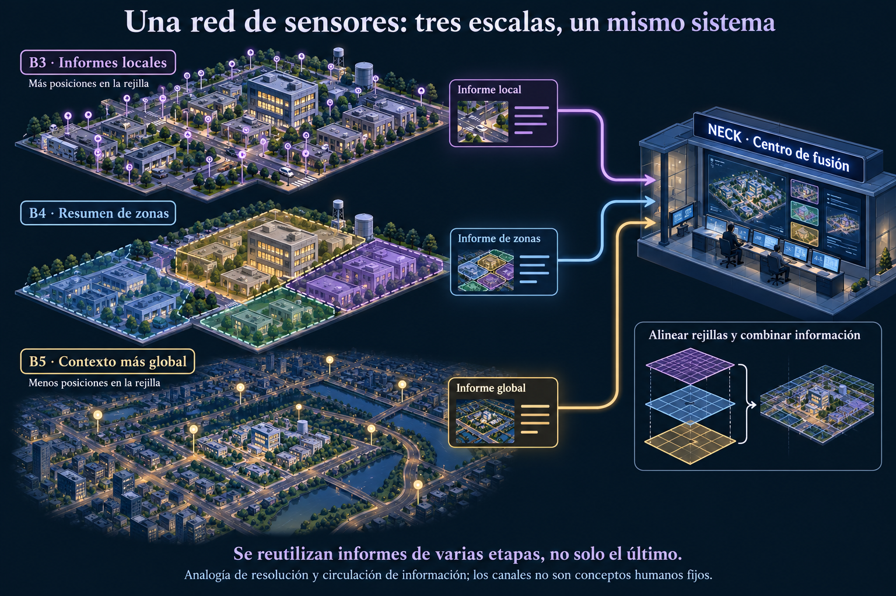
En la analogía de la imagen de arriba, se representa una misma ciudad observada por una red de sensores que organiza su información en tres niveles de resolución. Los tres niveles describen la misma escena, pero conservan distintas cantidades de posiciones y combinan la información de maneras diferentes.
El neck funciona como una central que recibe esos informes y los relaciona para producir representaciones más útiles para detectar objetos.
Código original · YOLO26
Image(f"{root_class_path}/h2.png")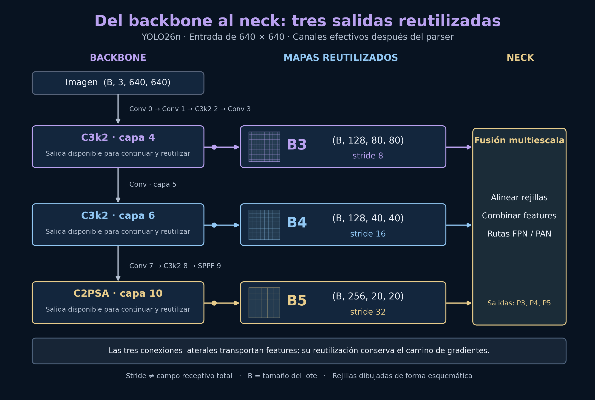
1. B3: "Muchos Informes Distribuidos por la Ciudad"
En la parte superior aparecen numerosos sensores repartidos entre calles y edificios. Cada uno representa, de manera aproximada, una posición de una rejilla de características.
La idea es que, al conservar muchas posiciones, podemos distinguir mejor dónde aparecen cambios dentro de la escena.
En el modelo:
Para cada imagen hay una rejilla de posiciones. En cada posición se guarda un vector de 128 valores, que resume características aprendidas.
Podemos imaginarlo así:
“En esta zona de la calle aparecen ciertos bordes, texturas y patrones; unos metros más allá, las características cambian”.
Esos informes pueden ayudar a localizar estructuras pequeñas o a distinguir regiones cercanas. Sin embargo, B3 todavía no contiene una lista de objetos ni identifica necesariamente qué significa cada patrón.
Los 128 canales tampoco representan 128 sensores físicos ni 128 categorías: son componentes de una representación aprendida.
2. B4: "Organizar la Información por Zonas"
En la parte central, la ciudad aparece dividida en sectores. La analogía sugiere que ya no observamos únicamente informes muy localizados: varias transformaciones han combinado información para construir descripciones más elaboradas.
En el modelo:
La rejilla tiene posiciones, pero conserva 128 canales por posición.
Podemos imaginar este informe:
“Estos patrones próximos forman una estructura más amplia; conviene interpretarlos teniendo en cuenta lo que ocurre alrededor”.
La reducción de resolución cambia la precisión con la que se distribuye espacialmente la representación. No significa simplemente “borrar tres de cada cuatro informes”: las capas intermedias calculan nuevos valores mediante operaciones aprendidas.
Además, B4 no es una tabla que diga literalmente “barrio industrial”, “barrio residencial” o “calle”. Esas etiquetas pertenecen a la analogía.
3. B5: "Relacionar Información con Mayor Contexto"
En la parte inferior aparece una vista más amplia de la ciudad. Esa elección visual representa la posibilidad de relacionar información más distante y utilizar contexto más elaborado.
En el modelo:
Ahora hay posiciones, cada una con 256 valores.
El informe imaginario sería:
“Para interpretar lo que aparece aquí, también resulta útil conocer la organización de otras regiones de la escena”.
B5 tiene menos posiciones espaciales, pero más canales que B3 y B4. Por eso, menor resolución no equivale automáticamente a menos información en todos los sentidos: cambia cómo se organiza la representación.
La vista panorámica de la ilustración es simbólica. Los tres mapas proceden de la misma imagen de entrada; no corresponden a tres fotografías tomadas desde distintas alturas.
4. Las Tres Conexiones: Convervar Informes Anteriores
Las flechas que llegan a la central son el punto principal de la imagen. La red no espera hasta producir B5 para enviar únicamente ese último resultado. También reutiliza las salidas B3 y B4:
-
B3continúa alimentando las etapas posteriores y aporta una conexión lateral. -
B4también continúa hacia etapas más profundas y aporta otra conexión lateral. -
B5entrega la representación profunda al neck.
En la analogía, sería como conservar los informes de los sensores locales y de los coordinadores de zona, aunque ya exista un informe de contexto más general.
El informe profundo no sustituye por completo a los anteriores: el neck puede aprovecharlos conjuntamente.
- Reutilizar una salida no exige copiar físicamente todo el tensor. Lo importante es mantener disponible esa información para las operaciones posteriores.
5. El Neck: Poner los Informes en Planos Compatibles
La central recibe informes organizados sobre rejillas distintas:
Para relacionarlos, necesita llevar determinados mapas a resoluciones compatibles.
En la analogía, sería como recibir tres planos de una ciudad con diferente nivel de detalle y ajustarlos a una cuadrícula común antes de relacionar sus informes.
En el neck de YOLO26, esto se realiza mediante operaciones como:
- Interpolación para aumentar la resolución de determinados mapas.
- Convoluciones con stride 2 para reducirla.
- Concatenación de canales para reunir representaciones.
- Bloques
C3k2para transformar la información reunida.
Aumentar la resolución de un informe profundo no recupera por sí solo el detalle perdido. La conexión lateral aporta características de una etapa que conservaba una rejilla más fina.
- Además, el neck realiza varias fusiones sucesivas y produce
P3,P4yP5; la central de la ilustración simplifica ese recorrido.
6. El Aprendizaje: Devolver Observaciones a Quienes Produjeron los Informes
Durante el entrenamiento, podemos extender la analogía imaginando que la central recibe una evaluación:
“La localización fue imprecisa; hay que ajustar cómo se producen y combinan estos informes”.
-
En la red, esa evaluación corresponde a la pérdida y a sus gradientes: Las conexiones laterales permiten que el aprendizaje alcance las operaciones anteriores cuando el camino de autograd permanece conectado.
-
Así, la reutilización tiene dos consecuencias: permite combinar características durante el forward y mantiene rutas por las que puede propagarse el aprendizaje.
La analogía describe resolución, contexto y circulación de información. No establece que cada canal tenga un significado humano fijo, que
B3se ocupe exclusivamente de objetos pequeños o que una celda de stride32observe únicamente un cuadrado de píxeles.
19.8.2. Dos Recorridos y Cuatro Fusiones: El Grafo Real de Nano
FPN(Feature Pyramid Network) motiva el recorrido desde mapas profundos de menor resolución hacia mapas de mayor resolución.
PAN(Path Aggregation Network) motiva una ruta adicional de abajo hacia arriba.
- Decir “
FPN/PAN” aquí describe esa organización; el grafo concreto lo determina elYAMLdeYOLO26. En este notebook llamamos neck a las capas 11–22, aunque el YAML las agrupe dentro dehead. [N1, N3, N4]
-
significa concatenación por canales;
-
Downes unaConvde stride 2 y padding 1. -
Upes interpolación nearest ×2. -
T4se reutiliza en la tercera fusión yB5en la cuarta. -
No se conecta
P4directamente con elB4original en esa tercera fusión.
Código original · YOLO26
Image(f"{root_class_path}/h3.png")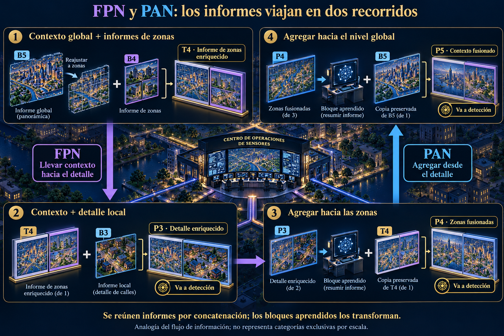
La analogía continúa con la misma central de sensores, pero ahora seguimos cómo procesa sus informes en dos recorridos:
-
FPN: lleva contexto desde las representaciones profundas hacia las rejillas de mayor resolución.
-
PAN: agrega información desde la representación fina hacia rejillas de menor resolución.
"Arriba" y "abajo" describen niveles de la arquitectura; no indican que los objetos se desplacen dentro de la imagen.
1. Los tres informes que recibe la central
Para una entrada de , el backbone de YOLO26n entrega:
| Informe | Forma del tensor | Interpretación de la analogía |
|---|---|---|
| B3 | (B,128,80,80) |
Muchos informes distribuidos sobre una rejilla fina |
| B4 | (B,128,40,40) |
Representación intermedia, organizada sobre menos posiciones |
| B5 | (B,256,20,20) |
Representación más profunda, con una rejilla espacial más reducida |
-
Bes la cantidad de imágenes del lote. Los otros ejes indican canales, alto y ancho. -
Los canales son componentes de una representación aprendida. No corresponden necesariamente a conceptos como “calle”, “persona” o “vehículo”.
Los tres mapas proceden de la misma imagen. La analogía de observar calles, zonas y ciudad completa describe diferencias de resolución y contexto; no significa que se hayan tomado tres fotografías diferentes.
2. Las operaciones con las que trabaja la central
Antes de recorrer las fusiones, distinguimos tres acciones.
-
Ampliar una rejilla:
Up₂.- Se utiliza interpolación nearest ×2. Cada valor se repite sobre una rejilla de mayor resolución:
\begin{align} \begin{pmatrix} 1&2\ 3&4 \end{pmatrix} \longrightarrow \begin{pmatrix} 1&1&2&2\ 1&1&2&2\ 3&3&4&4\ 3&3&4&4 \end{pmatrix}. \end{align}
- Cambian alto y ancho, pero no la cantidad de canales. Esta operación no aprende filtros ni recupera por sí misma detalles que dejaron de estar representados.
-
Reducir una rejilla:
Down₂.- Se utiliza una Conv , stride 2 y padding 1. Sus filtros se aprenden y calculan nuevos valores mientras reducen la resolución espacial. No es la operación inversa de nearest.
-
Reunir informes: concatenación por canales.
-
La notación representa una concatenación. Los tensores deben tener el mismo lote, alto y ancho; sus cantidades de canales pueden ser distintas.
-
Después de concatenarlos, un bloque C3k2 transforma la información reunida.
-
3. Primera fusión: combinar contexto profundo con informes de zonas
La central comienza con B5:
Quiere relacionarlo con B4:
Como sus rejillas tienen tamaños diferentes, primero amplía B5:
En la analogía, adapta el informe profundo a una cuadrícula compatible con el informe de zonas.
Después concatena ambos:
La cuenta de canales es:
Finalmente, C3k2 transforma esos 384 canales y produce 128:
T4es un informe intermedio enriquecido con información profunda.
T4 y B4 tienen la misma forma exterior, pero no contienen necesariamente los mismos valores. T4 es el resultado de una nueva transformación.
Esta fusión corresponde a las capas 11, 12 y 13.
4. Segunda fusión: llevar ese contexto hasta la rejilla fina
Ahora la central quiere relacionar T4 con B3, cuya rejilla es de .
Primero amplía T4:
Después lo concatena con B3:
La cuenta es:
En la analogía:
“Vamos a interpretar los informes de las calles teniendo también en cuenta lo aprendido sobre las zonas y el contexto profundo”.
C3k2 transforma la concatenación y produce:
La rejilla mantiene posiciones, mientras que los canales pasan de 256 a 64.
Reducir canales no equivale a reducir la resolución espacial. Son ejes diferentes del tensor.
- Esta fusión corresponde a las capas 14, 15 y 16.
P3queda disponible para la cabeza y también continúa hacia el recorridoPAN.
5. Tercera fusión: agregar desde la representación fina hacia las zonas
Hasta aquí llevamos información profunda hacia rejillas de mayor resolución. Ahora comienza el recorrido adicional en sentido contrario.
P3 atraviesa una convolución que reduce su resolución:
En la analogía, una estación aprendida reorganiza los informes detallados para trabajar a nivel de zonas.
El resultado se concatena con T4, que se había conservado:
La cuenta es:
Después, C3k2 produce:
En esta fusión se reutiliza
T4, no elB4original. La diferencia importa:T4ya incorporó información procedente de B5.
- Esta etapa corresponde a las capas 17, 18 y 19.
6. Cuarta fusión: agregar hacia la rejilla profunda
La central repite el principio sobre P4:
Ahora puede reunirlo con el B5 conservado:
La cuenta de canales es:
El bloque configurado en la capa 22 transforma esa combinación y produce:
En la analogía:
“Vamos a elaborar una nueva representación profunda, relacionando lo que llegó desde las fusiones anteriores con el informe B5 que conservamos”.
- Esta etapa corresponde a las capas 20, 21 y 22. La variante de C3k2 utilizada en la última capa incluye atención según su configuración.
7. ¿Por qué realizar los dos recorridos?
El recorrido FPN lleva información desde una representación profunda hacia rejillas de mayor resolución:
El recorrido PAN agrega una ruta aprendida desde esa representación fina hacia las escalas posteriores:
En la analogía, la central primero utiliza contexto profundo para interpretar informes más localizados. Después vuelve a organizar la información resultante para construir representaciones intermedias y profundas.
Esto no implica que la información simplemente regrese al lugar de partida. Cada bloque calcula nuevos valores y aprende nuevas combinaciones.
El recorrido:
no es una compresión y descompresión reversible.
8. Concatenar los informes no significa haberlos interpretado
Supongamos que, en una posición, llegan estos dos vectores:
Concatenarlos produce:
La concatenación reúne los componentes, pero no aprende qué importancia tiene cada uno.
En la analogía, hemos colocado dos documentos en un expediente común, conservando sus secciones.
Una transformación aprendida podría calcular:
Aquí sí aparecen pesos que determinan cómo contribuye cada componente.
El C3k2 completo realiza una transformación más elaborada que esta cuenta lineal, pero la distinción permanece:
| Operación | Responsabilidad |
|---|---|
Concat |
Reunir grupos de canales sin sumar sus valores |
C3k2 |
Transformar la información reunida mediante operaciones aprendidas |
En la ilustración, los símbolos “+” deben interpretarse como reunir informes. En estas cuatro fusiones, la operación técnica correspondiente es concatenación.
9. ¿Por qué conservar T4 y B5?
T4 participa en dos caminos:
- Se amplía para construir
P3. - Se reutiliza directamente al construir
P4.
Aunque P3 ya depende de T4, la transformación que produce P3 no garantiza conservar intacta toda la información de T4.
Entre ambos hubo interpolación, concatenación con B3 y procesamiento mediante C3k2. Además, cambian tanto la resolución como la cantidad de canales.
Conservar T4 permite volver a acceder directamente a esa representación intermedia.
En la analogía:
“Aunque el informe de calles se elaboró consultando el informe de zonas, conservamos este último para volver a utilizarlo cuando preparemos el nuevo resumen de zonas”.
B5 también tiene dos usos: inicia el recorrido FPN y se reutiliza directamente en la última fusión.
10. Misma forma no significa misma información
Al comienzo teníamos:
Al final obtenemos:
Sus formas coinciden, pero P5 no es una copia de B5 ni una reconstrucción exacta del tensor inicial.
Para producir P5 se combinaron la ruta procedente de P4, el B5 conservado y las transformaciones del último bloque.
Lo mismo ocurre con B4 y T4: ambos tienen 128 canales sobre una rejilla de , pero sus recorridos y valores son diferentes.
11. La central entrega tres salidas a la cabeza
Detect/Segment26 recibe:
| Salida | Forma efectiva de Nano a 640 | Capa |
|---|---|---|
P3 |
(B,64,80,80) |
16 |
P4 |
(B,128,40,40) |
19 |
P5 |
(B,256,20,20) |
22 |
La cabeza utiliza las tres salidas, no solamente P5. T4 es un estado intermedio del neck.
Los nombres permiten distinguir dos momentos del procesamiento:
B3/B4/B5: features que llegan delbackbone.P3/P4/P5: features que salen delneckdespués de las fusiones.
Estos mapas todavía no son cajas finales ni máscaras. Las cabezas posteriores calculan las predicciones correspondientes.
- Tampoco se establece una categoría exclusiva para cada escala.
P3no significa “personas”,P4“vehículos” yP5“edificios”.
12. ¿Qué ocurre con los gradientes?
Durante entrenamiento, una representación reutilizada puede recibir contribuciones de gradiente desde varios caminos conectados a la pérdida.
Por ejemplo, T4 alimenta tanto la construcción de P3 como la concatenación que conduce a P4. Autograd combina las contribuciones que llegan por esos usos.
En la analogía, el equipo que produjo T4 recibe observaciones de varios destinatarios:
“Tu informe influyó en el análisis de calles y también en la elaboración posterior del informe de zonas”.
Reutilizar el tensor no exige crear copias independientes ni separar su historial de cálculo. Mientras el camino de autograd permanezca conectado, esas rutas permiten que el aprendizaje alcance las operaciones que lo produjeron.
Finalmente, la analogía describe resolución, contexto y circulación de información. El stride sigue indicando la separación entre posiciones respecto de la entrada; no determina por sí solo el campo receptivo total ni limita cada celda a observar únicamente un cuadrado de ese tamaño.
13. Arquitectura de las Fusiones y Recorridos
Código original · YOLO26
Image(f"{root_class_path}/h4.png")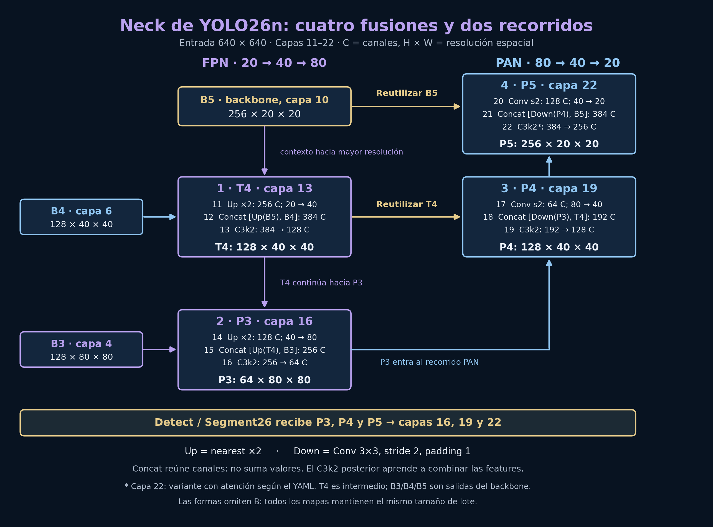
19.8.3. Interpolar, Concatenar y Aprender Son Operaciones Distintas
-
Interpolar. No inventa detalle fino observado. Pone el contexto en una rejilla compatible con la conexión lateral.
Bilinearmezclaría vecinos; elneckconfigurado usa nearest. -
Concatenar. En una posición, contexto e informe lateral producen . No producen ni una media.
torch.cat(..., dim=1)exige igual lote, alto y ancho; permite distinto número de canales. -
Transformar. El C3k2 posterior aprende cómo combinar los canales reunidos. Una Conv 1×1 puede aprender en esa posición. Es un ejemplo numérico de mezcla de canales; el C3k2 completo añade sus rutas y subbloques, desarrollados en el anexo.
19.8.3.1. Laboratorio de Operaciones: Ver Exactamente Qué se Concatena
Código original · YOLO26
# Importa las herramientas del laboratorio, independientes de los pesos entrenados.
import torch
import torch.nn.functional as F
# Crea un canal de contexto de 2×2.
contexto_198 = torch.tensor([[[[1., 2.], [3., 4.]]]])
# Duplica cada valor en los dos ejes espaciales.
arriba_198 = F.interpolate(contexto_198, scale_factor=2, mode="nearest")
# Crea un informe lateral sobre la rejilla de mayor resolución.
lateral_198 = torch.full((1, 1, 4, 4), 10.)
# Reúne ambos canales; conserva por separado sus valores.
concatenado_198 = torch.cat((arriba_198, lateral_198), dim=1)
# Define una mezcla 1×1 manual: 0.5 de contexto y 0.1 del lateral.
pesos_198 = torch.tensor([[[[0.5]], [[0.1]]]])
# Aplica la mezcla sin BN ni activación para comprobar la cuenta a mano.
mezcla_198 = F.conv2d(concatenado_198, pesos_198)
# Verifica forma y el cálculo del primer píxel.
assert concatenado_198.shape == (1, 2, 4, 4)
assert mezcla_198[0, 0, 0, 0].item() == 1.5
# Muestra mapas completos para poder seguir todos los números.
print("Nearest:\n", arriba_198[0, 0])
print("Canales en (0,0):", concatenado_198[0, :, 0, 0])
print("Mezcla:\n", mezcla_198[0, 0])
Nearest:
tensor([[1., 1., 2., 2.],
[1., 1., 2., 2.],
[3., 3., 4., 4.],
[3., 3., 4., 4.]])
Canales en (0,0): tensor([ 1., 10.])
Mezcla:
tensor([[1.5000, 1.5000, 2.0000, 2.0000],
[1.5000, 1.5000, 2.0000, 2.0000],
[2.5000, 2.5000, 3.0000, 3.0000],
[2.5000, 2.5000, 3.0000, 3.0000]])
Paso 1 — contexto_198. Los cuatro valores representan un canal, un lote y una rejilla 2×2.
No se usa una imagen RGB: los valores son informes sintéticos.
Paso 2 — F.interpolate. El argumento scale_factor=2 duplica H y W; no duplica C.
Nearest copia cada entrada a un bloque 2×2. La forma cambia de (1,1,2,2) a (1,1,4,4).
Paso 3 — torch.cat. El canal lateral constante se coloca después del contexto.
En la esquina superior izquierda el vector es [1,10]; en la inferior derecha, [4,10].
dim=1 significa eje de canales en BCHW.
Paso 4 — pesos_198. Su forma es (c_out=1,c_in=2,kH=1,kW=1). El primer peso vale 0.5,
el segundo 0.1. La cuenta del primer píxel es 0.5*1 + 0.1*10 = 1.5; la del último es 3.
Paso 5 — F.conv2d. No se agregan BN ni SiLU porque este ejemplo aísla la mezcla lineal.
El bloque C3k2 real incluye muchas más operaciones, como se estudió en 19.3–19.4.
Las aserciones comprueban forma y valor; no miden exactitud de detección.
19.8.4. Construir un Neck Propio
Reutilizamos
ConvNormActyvalidate_bchwde 19.2,Bottleneck1931yC3k2Parametros1931de 19.3, y las herramientassynthetic_features,shape_tableystatic_maps. No se redefinen ni se modifican esas clases. Ejecutar sus celdas antes de este apartado.
Alcance: esta implementación reproduce las cuatro fusiones y admite los canales de Nano. Sus cuatro C3k2 utilizan la variante simple ya estudiada. El YAML oficial usa variantes con C3k interno en las primeras fusiones y con atención en la última. Por ello, igual forma no significa igual arquitectura completa, parámetros ni salida numérica.
Esta parte funciona con PyTorch: no necesita Ultralytics ni checkpoints. La comparación oficial posterior sí utiliza la instalación fijada en 19.8.0.
19.8.4.1. Contrato y Decisiones del Constructor
| Bloque propio | Entrada concatenada con canales Nano | Salida |
|---|---|---|
fusion4 |
Up(B5): 256 + B4: 128 = 384 |
T4: 128 |
fusion3 |
Up(T4): 128 + B3: 128 = 256 |
P3: 64 |
down3 |
P3: 64, Conv 3×3 s2 p1 |
64, mitad de H/W |
pan4 |
Down(P3): 64 + T4: 128 = 192 |
P4: 128 |
down4 |
P4: 128, Conv 3×3 s2 p1 |
128, mitad de H/W |
pan5 |
Down(P4): 128 + B5: 256 = 384 |
P5: 256 |
-
Las interpolaciones no son capas aprendidas: se expresan con
F.interpolate. Los Concat usantorch.cat(...,dim=1). -
Las dos reducciones sí usan
Conv → BatchNorm → SiLUmediante la clase anterior:- Para , y padding 1, una rejilla par se reduce a la mitad.
-
ncuenta Bottleneck externos dentro de cada C3k2 simple.- Con
n=1se conservan tres informes internos:A, B0 y B1.e=.5determina canales ocultos; no multiplica las activaciones.
- Con
-
El Bottleneck anterior tiene además su propia expansión interna .5: son dos decisiones distintas.
-
Usamos
n=1explícitamente en este caso; el valor por defecton=2de la clase anterior no se modifica. Al aumentar n aparecen más estados internos, aunque se mantenga la forma exterior del bloque.
19.8.4.2. Implementación completa de NeckDidactico198
La clase NeckDidactico198 tiene seis métodos propios, cada uno con una responsabilidad distinta. Después aparecen cuatro funciones auxiliares que construyen ejemplos, muestran resultados y comprueban el comportamiento.
Para seguir la explicación, usaremos el caso del notebook:
| Entrada | Forma |
|---|---|
| B3 | (1,128,16,16) |
| B4 | (1,128,8,8) |
| B5 | (1,256,4,4) |
Son mapas sintéticos con los canales de Nano y resoluciones pequeñas. El primer número es el tamaño del lote.
1. __init__: construir el circuito antes de procesar datos
Su responsabilidad es declarar qué bloques existen y cómo deben dimensionarse. Todavía no calcula
T4,P3,P4niP5.
-
Inicializar
nn.Module.Fragmento de código
# Inicializa los mecanismos de PyTorch para registrar capas y parámetros. super().__init__()
-
Nuestra clase hereda de
nn.Module. Esa inicialización permite que PyTorch reconozca las capas que asignamos posteriormente a atributos como:Fragmento de código
# Registra este C3k2 como un submódulo del neck. self.fusion4 = C3k2Parametros1931(...)
-
Separar canales de entrada y de salida.
Fragmento de código
# Define las anchuras de las tres fuentes del backbone. canales_backbone = (128, 128, 256) # Define las anchuras de las tres salidas del neck. canales_neck = (64, 128, 256)
Estas tuplas contienen cantidades de canales, no tensores.
En el constructor:
Fragmento de código
# Asigna nombres locales a las cantidades de canales de entrada. b3, b4, b5 = self.canales_backbone # Asigna nombres locales a las cantidades de canales de salida. p3, p4, p5 = self.canales_neck
Aquí
b5vale el entero256. Más adelante, dentro de_recorrer, la variableb5será un tensor. Son variables locales de métodos diferentes. -
Dimensionar las fusiones.
Fragmento de código
# El primer C3k2 recibe 256+128 canales y devuelve 128. self.fusion4 = C3k2Parametros1931( b5 + b4, p4, e=e, n=n, shortcut=shortcut, )
El constructor calcula:
\begin{align} c_{\text{entrada}}&=256+128=384,\ c_{\text{salida}}&=128. \end{align}
La suma
b5 + b4ocurre entre dos enteros que describen canales. La concatenación de los tensores ocurrirá después, durante el recorrido. -
Interpretar
n,eyshortcut.ndetermina cuántos Bottleneck contiene cada C3k2 simple.edetermina su anchura oculta: .shortcuthabilita los residuales internos de esos Bottleneck.
Para
fusion4, conc2=128,e=.5yn=1:- Se conservarán tres informes internos de 64 canales: A, B0 y B1. Su concatenación interna tendrá 192 canales.
2. _validar_entradas: comprobar que los mapas pueden recorrer el circuito
Este método recibe los tres tensores:
Fragmento de código
# Agrupa las fuentes en el orden que espera el neck.
features = (b3, b4, b5)
Su objetivo es detectar incompatibilidades antes de llegar a una convolución o concatenación:
-
Comprobar la cantidad de mapas.
Fragmento de código
# Exige una estructura que contenga las tres escalas. if not isinstance(features, (tuple, list)) or len(features) != 3: # Explica el error antes de intentar separar las entradas. raise TypeError("features debe contener exactamente B3, B4 y B5.")
Un tensor único no contiene automáticamente tres escalas. Debemos entregar tres mapas separados y ordenados.
-
Comprobar cada mapa.
Fragmento de código
# Relaciona cada tensor con la cantidad de canales declarada. for tensor, canales in zip(features, self.canales_backbone): # Reutiliza el validador de las secciones anteriores. validate_bchw(tensor, channels=canales)
zipforma las parejas:Tensor Canales esperados B3 128 B4 128 B5 256 El validador comprueba que cada entrada sea un tensor flotante
BCHW, sin ejes vacíos y con los canales correctos. -
Comprobar lote, dtype y dispositivo.
-
Los tres mapas deben pertenecer al mismo lote y utilizar tipos y dispositivos compatibles.
- Por ejemplo, no queremos combinar una B3 en CPU con una B4 en CUDA. Tampoco queremos que una entrada
float64llegue silenciosamente a capas cuyos parámetros sonfloat32.
- Por ejemplo, no queremos combinar una B3 en CPU con una B4 en CUDA. Tampoco queremos que una entrada
-
Esta versión del laboratorio mantiene ese contrato explícito; no define una política de autocast AMP.
-
-
Comprobar las resoluciones.
-
Se exige:
\begin{align} H_{B3}=2H_{B4},\qquad H_{B4}=2H_{B5}, \end{align}
y lo mismo para los anchos.
-
Son válidas, por ejemplo: \begin{align} 16\times24\rightarrow8\times12\rightarrow4\times6. \end{align}
-
No hace falta que los mapas sean cuadrados.
-
La relación exacta permite que nearest ×2 alcance la resolución de la conexión lateral: La función no introduce otro resize para ocultar un desajuste.
-
3. _aplicar_bloque: ejecutar un C3k2 una sola vez y elegir cuánto observar
Este método permite utilizar el mismo circuito en dos situaciones:
- Obtener solamente la salida del bloque.
- Obtener la salida y sus resultados internos.
Está declarado con @staticmethod porque no necesita recibir self. Recibe explícitamente el bloque que debe ejecutar.
Sus argumentos son:
| Argumento | Significado |
|---|---|
bloque |
La instancia C3k2 que se ejecutará |
entrada |
Tensor que recibe ese bloque |
nombre |
Nombre con el que se guardará su detalle |
trazas |
Diccionario de resultados o None |
-
Modo convencional.
Fragmento de código
# Si no se solicitó detalle, utiliza la llamada normal del módulo. if trazas is None: # Devuelve únicamente el tensor de salida. return bloque(entrada)
bloque(entrada)pasa por la interfaz denn.Module, incluido su mecanismo de hooks. -
Modo detallado.
Fragmento de código
# Ejecuta la traza implementada en la clase C3k2 anterior. detalle = bloque.trace(entrada) # Conserva ese detalle dentro del registro de esta ejecución. trazas[nombre] = detalle # Continúa el circuito con la salida ya calculada. return detalle["output"]
-
El diccionario del C3k2 contiene:
inputprojectedreportsconcatenatedoutput
Por tanto, podemos abrir A, B0 y B1 sin ejecutar nuevamente el bloque.
-
-
Por qué se usa
is None.-
Un diccionario vacío también es falso en una condición booleana:
Fragmento de código
# Este diccionario todavía no contiene trazas, pero está preparado para recibirlas. trazas = {}
Si escribiéramos
if not trazas, confundiríamos un diccionario vacío con la ausencia de registro.Aquí la distinción es deliberada:
None: no guardar detalles.{}: comenzar a guardar detalles.
-
-
Por qué no ejecutar
forwardy despuéstrace.- Eso procesaría la misma entrada dos veces. Además del coste, en modo entrenamiento BatchNorm podría actualizar sus estadísticas dos veces.
4. _recorrer: ejecutar las cuatro fusiones
Este método contiene el recorrido completo del neck. Tanto
forwardcomotracelo utilizan, evitando escribir dos versiones del circuito que podrían terminar siendo diferentes.
-
Preparar las entradas y el registro.
Fragmento de código
# Comprueba las tres fuentes antes de procesarlas. b3, b4, b5 = self._validar_entradas(features) # Guarda referencias a los mapas originales. etapas = dict(B3=b3, B4=b4, B5=b5) # Decide si también se abrirán los resultados internos de cada C3k2. bloques = {} if detallar else None
Guardar un tensor en un diccionario no implica copiar sus valores.
-
Recorrido FPN.
Etapa Operación Salida, omitiendo el lote up5Ampliar B5 ×2 256×8×8cat4Concatenar up5con B4384×8×8T4Aplicar fusion4128×8×8up4Ampliar T4 ×2 128×16×16cat3Concatenar up4con B3256×16×16P3Aplicar fusion364×16×16-
La primera ampliación cambia: \begin{align} 256\times4\times4\rightarrow256\times8\times8. \end{align}
-
Después, B4 aporta otros 128 canales: Por eso
cat4tiene 384. -
T4 se conserva porque se utilizará dos veces: para construir P3 y para participar directamente en la siguiente fusión.
-
-
Recorrido PAN.
Etapa Operación Salida, omitiendo el lote down3Reducir P3 mediante ConvNormAct 64×8×8cat_pan4Concatenar down3con T4192×8×8P4Aplicar pan4128×8×8down4Reducir P4 mediante ConvNormAct 128×4×4cat_pan5Concatenar down4con B5384×4×4P5Aplicar pan5256×4×4-
En la tercera fusión se recupera T4, no B4. Aunque sus formas coinciden, T4 ya fue transformado durante el recorrido FPN.
-
En la cuarta se recupera B5, que continúa disponible en el registro.
-
-
Preparar el resultado.
Fragmento de código
# Conserva las tres escalas finales en el orden esperado. outputs = (etapas["P3"], etapas["P4"], etapas["P5"])
-
El método devuelve un diccionario con tres partes:
Clave Contenido etapasMapas del recorrido externo bloquesTrazas internas de los C3k2, si se solicitaron outputsTupla (P3,P4,P5) -
Ninguna activación se guarda en atributos como
self.ultima_traza. El registro pertenece a esa ejecución y queda bajo control del llamador.
-
5. Código Completo
Código original · YOLO26
import math
import torch
from torch import Tensor, nn
from torch.nn import functional as F
# Define un neck docente con los bloques ya implementados en el anexo.
class NeckDidactico198(nn.Module):
"""Cuatro fusiones FPN/PAN con ConvNormAct y C3k2Parametros1931.
Args:
canales_backbone: Tupla (CB3,CB4,CB5) de enteros positivos.
canales_neck: Tupla (CP3,CP4,CP5) de enteros positivos; T4 usa CP4.
n: Cantidad de Bottleneck1931 por C3k2; entero positivo.
e: Expansión exterior de C3k2, positiva y finita; int(Csalida*e)>=2.
shortcut: Activa los residuales de los Bottleneck internos.
Attributes:
fusion4: C3k2 de CB5+CB4 a CP4; produce T4.
fusion3: C3k2 de CP4+CB3 a CP3; produce P3.
down3: ConvNormAct 3×3, s=2, de CP3 a CP3.
pan4: C3k2 de CP3+CP4 a CP4; produce P4.
down4: ConvNormAct 3×3, s=2, de CP4 a CP4.
pan5: C3k2 de CP4+CB5 a CP5; produce P5.
Notes:
Reutiliza literalmente las clases de 19.2 y 19.3: no importa bloques
oficiales ni cambia las instancias o clases de las secciones anteriores.
Los cuatro C3k2 son la variante simple c3k=False, attn=False, g=1.
Replica las conexiones y puede usar los canales Nano, pero no reproduce
las variantes internas ni todos los parámetros de YOLO26n oficial.
BatchNorm conserva la configuración de ConvNormAct del anexo.
forward devuelve (P3,P4,P5); trace permite conservar sus intermedios.
No implementa cabezas, pérdidas, NMS ni reconstrucción de máscaras.
"""
# Construye cada bloque con las dimensiones que tendrá su concatenación.
def __init__(self, canales_backbone=(128,128,256), canales_neck=(64,128,256), n=1, e=.5, shortcut=True):
"""Inicializa el circuito sin cargar pesos ni modificar otros modelos.
Args:
canales_backbone: Canales externos de B3, B4 y B5.
canales_neck: Canales de P3, P4 y P5; T4 comparte CP4.
n: Número de subbloques por C3k2; 1 por defecto.
e: Factor exterior de canales ocultos de C3k2; .5 por defecto.
shortcut: Booleano que habilita los residuales internos.
Raises:
ValueError: Si canales, n, e o shortcut no cumplen el contrato.
NameError: Si no se ejecutaron ConvNormAct y C3k2Parametros1931.
"""
# Inicializa el registro de submódulos de PyTorch.
super().__init__()
# Comprueba las dos ternas antes de calcular dimensiones internas.
for valores in (canales_backbone, canales_neck):
# Rechaza secuencias incompletas y canales no enteros o nulos.
if not isinstance(valores, (tuple,list)) or len(valores) != 3 or any(type(v) is not int or v <= 0 for v in valores):
# Explica el contrato en lugar de dejar fallar una Conv posterior.
raise ValueError("Se requieren dos ternas de canales enteros positivos.")
# Valida el número de etapas de cada C3k2.
if type(n) is not int or n < 1:
# No acepta booleanos como cantidad de bloques.
raise ValueError("n debe ser un entero positivo.")
# Valida la expansión con el mismo criterio de las clases anteriores.
if isinstance(e, bool) or not isinstance(e, (int,float)) or not math.isfinite(e) or e <= 0:
# Evita conversiones de anchuras indefinidas o negativas.
raise ValueError("e debe ser numérico, positivo y finito.")
# Los Bottleneck1931 necesitan al menos dos canales en su entrada.
if any(int(c*e) < 2 for c in canales_neck) or type(shortcut) is not bool:
# El límite pertenece a los bloques docentes, no a toda Conv posible.
raise ValueError("Cada anchura oculta debe ser >=2; shortcut debe ser bool.")
# Guarda contratos inmutables que permitirán validar las entradas.
self.canales_backbone = tuple(canales_backbone)
# T4 tendrá el mismo ancho de canales que P4.
self.canales_neck = tuple(canales_neck)
# Conserva n para explicar el concat interno de cada C3k2.
self.n = n
# Separa canales de entrada sin asociarlos a categorías de objetos.
b3, b4, b5 = self.canales_backbone
# Separa canales de las tres salidas del neck.
p3, p4, p5 = self.canales_neck
# FPN: B5 ampliado y B4 reúnen CB5+CB4 canales.
self.fusion4 = C3k2Parametros1931(b5+b4, p4, e=e, n=n, shortcut=shortcut) #t4
# FPN: T4 ampliado y B3 reúnen CP4+CB3 canales.
self.fusion3 = C3k2Parametros1931(p4+b3, p3, e=e, n=n, shortcut=shortcut)
# PAN: reduce la rejilla de P3 con una transformación aprendida.
self.down3 = ConvNormAct(p3, p3, k=3, s=2)
# PAN: Down(P3) y T4 reúnen CP3+CP4 canales.
self.pan4 = C3k2Parametros1931(p3+p4, p4, e=e, n=n, shortcut=shortcut)
# PAN: reduce la rejilla de P4 conservando sus canales externos.
self.down4 = ConvNormAct(p4, p4, k=3, s=2)
# PAN: Down(P4) y B5 reúnen CP4+CB5 canales.
self.pan5 = C3k2Parametros1931(p4+b5, p5, e=e, n=n, shortcut=shortcut)
# Valida geometría y compatibilidad antes de iniciar las fusiones.
def _validar_entradas(self, features) -> tuple[Tensor,Tensor,Tensor]:
"""Comprueba tres mapas alineados sin copiarlos ni desconectarlos.
Args:
features: Tupla/lista de B3, B4 y B5, tensores flotantes BCHW.
Returns:
Tupla de los mismos tres tensores recibidos, sin clone ni detach.
Raises:
TypeError: Si features o sus tensores tienen tipos incompatibles.
ValueError: Si hay ejes vacíos, canales incorrectos, lotes/dtypes/
dispositivos diferentes, incompatibilidad con pesos o rejillas
que no respetan exactamente la relación espacial 4:2:1.
Notes:
Admite rejillas rectangulares. Exige relaciones exactas para nearest
×2; no redimensiona silenciosamente hasta que un Concat "encaje".
No recorre valores para detectar NaN: es validación estructural.
"""
# Exige las tres escalas con un orden explícito.
if not isinstance(features, (tuple,list)) or len(features) != 3:
# No interpreta un tensor único como tres mapas distintos.
raise TypeError("features debe contener exactamente B3, B4 y B5.")
# Reutiliza el validador BCHW de 19.2 para cada mapa.
for tensor, canales in zip(features, self.canales_backbone):
# Conserva la referencia recibida y comprueba sus canales.
validate_bchw(tensor, channels=canales)
# Usa B3 como referencia del lote, tipo y dispositivo.
b3, b4, b5 = features
# Rechaza mezclas que cambiarían implícitamente el contrato de cálculo.
if any(x.shape[0] != b3.shape[0] or x.dtype != b3.dtype or x.device != b3.device for x in (b4,b5)):
# La concatenación exige un lote y una rejilla coherentes.
raise ValueError("Las tres escalas deben compartir lote, dtype y dispositivo.")
# Comprueba que los dos ejes cumplen 4:2:1, incluso en rectángulos.
if any(b3.shape[d] != 2*b4.shape[d] or b4.shape[d] != 2*b5.shape[d] for d in (2,3)):
# Prefiere un error explicativo a una deformación automática de mapas.
raise ValueError("H y W deben respetar la relación B3:B4:B5 = 4:2:1.")
# Obtiene un parámetro real para validar la compatibilidad del modelo.
referencia = next(self.parameters())
# No mueve entradas silenciosamente entre CPU, CUDA o precisiones.
if b3.device != referencia.device or b3.dtype != referencia.dtype:
# El llamador elige explícitamente dónde y con qué tipo ejecutar.
raise ValueError("Entradas y parámetros deben compartir dtype y dispositivo.")
# Devuelve los mismos objetos para preservar las rutas de autograd.
return b3, b4, b5
# Centraliza el único punto que decide entre salida normal y traza del bloque.
@staticmethod
# Mantiene la decisión independiente del estado persistente del neck.
def _aplicar_bloque(bloque, entrada: Tensor, nombre: str, trazas: dict | None) -> Tensor:
"""Ejecuta un C3k2 exactamente una vez en el modo solicitado.
Args:
bloque: Instancia C3k2Parametros1931, con forward y trace.
entrada: Tensor BCHW compatible con el bloque.
nombre: Identificador T4/P3/P4/P5 para la traza detallada.
trazas: Dict a completar o None para la llamada convencional.
Returns:
Tensor de salida del bloque, conectado a autograd si está habilitado.
Notes:
En modo normal bloque(entrada) utiliza __call__ y sus hooks.
La llamada directa a bloque.trace no dispara el hook del bloque
externo, aunque sí las llamadas de los submódulos que contiene.
No se ejecuta forward y luego trace: eso duplicaría cálculo y, en
train, actualizaría BatchNorm dos veces para una supuesta pasada.
"""
# Mantiene el comportamiento estándar cuando no se pide abrir el bloque.
if trazas is None:
# La llamada habitual pasa por la interfaz de nn.Module.
return bloque(entrada)
# Abre la implementación ya estudiada, conservando sus informes internos.
detalle = bloque.trace(entrada)
# Guarda referencias a los intermedios únicamente en el resultado local.
trazas[nombre] = detalle
# Reutiliza esa salida en lugar de calcularla otra vez.
return detalle["output"]
# Comparte un solo recorrido entre forward y trace para evitar divergencias.
def _recorrer(self, features, detallar: bool) -> dict:
"""Ejecuta las cuatro fusiones y reúne referencias a sus etapas.
Args:
features: B3/B4/B5 compatibles con _validar_entradas.
detallar: True abre las trazas internas de los cuatro C3k2.
Returns:
Dict con etapas (mapas externos), bloques (trazas C3k2 o dict vacío)
y outputs (P3,P4,P5). No escribe activaciones en self.
Raises:
TypeError, ValueError: Si fallan los contratos de entrada.
RuntimeError: Si PyTorch o alguna capa rechaza una operación.
Notes:
Todos los mapas conservan sus valores y conexión con autograd.
El registro contiene referencias compartidas, no copias de cada uso.
Retener el resultado puede retener activaciones CPU/GPU y su grafo.
"""
# Valida la pirámide antes de crear una concatenación.
b3, b4, b5 = self._validar_entradas(features)
# Conserva las tres fuentes para relacionarlas con las rutas laterales.
etapas = dict(B3=b3, B4=b4, B5=b5)
# Usa None para que forward llame a cada bloque de forma convencional.
bloques = {} if detallar else None
# Amplía B5: cambia H/W, mantiene CB5 canales.
etapas["up5"] = F.interpolate(b5, scale_factor=2, mode="nearest")
# Reúne CB5 canales ampliados y CB4 canales laterales.
etapas["cat4"] = torch.cat((etapas["up5"], b4), dim=1)
# Produce T4 transformando los canales reunidos.
etapas["T4"] = self._aplicar_bloque(self.fusion4, etapas["cat4"], "T4", bloques)
# Amplía T4 para alcanzar la rejilla fina de B3.
etapas["up4"] = F.interpolate(etapas["T4"], scale_factor=2, mode="nearest")
# Reúne los canales de T4 ampliado y B3.
etapas["cat3"] = torch.cat((etapas["up4"], b3), dim=1)
# Produce P3 y lo conserva como primera salida final.
etapas["P3"] = self._aplicar_bloque(self.fusion3, etapas["cat3"], "P3", bloques)
# Reduce P3 mediante Conv, BatchNorm y SiLU de ConvNormAct.
etapas["down3"] = self.down3(etapas["P3"])
# Recupera T4; en esta tercera fusión no se usa el B4 original.
etapas["cat_pan4"] = torch.cat((etapas["down3"], etapas["T4"]), dim=1)
# Produce P4 con la representación que llega desde P3 y T4.
etapas["P4"] = self._aplicar_bloque(self.pan4, etapas["cat_pan4"], "P4", bloques)
# Reduce P4 hacia la rejilla profunda.
etapas["down4"] = self.down4(etapas["P4"])
# Recupera B5 en la cuarta fusión, sin volver a calcular el backbone.
etapas["cat_pan5"] = torch.cat((etapas["down4"], b5), dim=1)
# Produce P5 con un C3k2 simple de las secciones anteriores.
etapas["P5"] = self._aplicar_bloque(self.pan5, etapas["cat_pan5"], "P5", bloques)
# Reúne las tres salidas en el orden utilizado por las cabezas posteriores.
outputs = (etapas["P3"], etapas["P4"], etapas["P5"])
# Devuelve la traza local; ningún intermedio se conserva en atributos.
return dict(etapas=etapas, bloques=bloques if bloques is not None else {}, outputs=outputs)
# Expone un modo de lectura que conserva todos los informes internos.
def trace(self, features) -> dict:
"""Devuelve las etapas externas y las trazas de cuatro C3k2 simples.
Args:
features: Tupla/lista B3/B4/B5 con los contratos de _validar_entradas.
Returns:
Dict etapas, bloques y outputs. bloques contiene input, projected,
reports, concatenated y output por T4/P3/P4/P5, como en 19.3.
Raises:
TypeError, ValueError, RuntimeError: Los documentados en _recorrer.
Notes:
No hace detach, clone, cpu ni no_grad. El llamador decide si quiere
una traza diferenciable o una inspección sin autograd.
"""
# Calcula cada etapa una sola vez y conserva los detalles solicitados.
return self._recorrer(features, detallar=True)
# Mantiene la interfaz convencional de un neck para las capas siguientes.
def forward(self, features) -> tuple[Tensor,Tensor,Tensor]:
"""Devuelve P3, P4 y P5 sin exponer la traza detallada.
Args:
features: Tupla/lista B3/B4/B5 compatible con el modelo.
Returns:
Tupla de tensores con canales canales_neck y resoluciones de B3,
B4 y B5 respectivamente. Mantiene autograd si está habilitado.
Raises:
TypeError, ValueError, RuntimeError: Los documentados en _recorrer.
Notes:
Cada C3k2 se llama mediante __call__, conservando sus hooks normales.
No cambia train/eval ni modifica las entradas mediante operaciones
in-place. Los intermedios del recorrido son referencias locales.
"""
# Reutiliza el mismo circuito sin pedir las trazas internas de C3k2.
return self._recorrer(features, detallar=False)["outputs"]
Código original · YOLO26
# Construye un caso reproducible utilizando los generadores del anexo.
def crear_caso_neck_198(perfil: str = "canales_nano", alto3: int = 16, ancho3: int = 16, n: int = 1, semilla: int = 198, dispositivo: str = "cpu") -> dict:
"""Inicializa un neck simple y tres mapas sintéticos alineados.
Args:
perfil: canales_nano usa CB=(128,128,256), CP=(64,128,256);
reducido usa CB=(8,16,32), CP=(8,16,32).
alto3, ancho3: Resolución de B3; enteros >=4 y múltiplos de 4.
B4 divide ambos por 2 y B5 por 4.
n: Cantidad positiva de Bottleneck1931 por C3k2.
semilla: Entero en [0,2**63-3), para pesos y fuentes sintéticas.
dispositivo: cpu o cuda:N; GPU opcional, cálculo float32.
Returns:
Dict modelo (eval), entradas (B3,B4,B5), traza (sin grafo), perfil,
semilla. No altera el RNG CPU ni modelos previos del notebook.
Raises:
ValueError: Si perfil, tamaños, semilla o backend son inválidos.
RuntimeError: Si CUDA no está disponible o el dispositivo no existe.
NameError: Si faltan las clases o synthetic_features de 19.2–19.3.
Notes:
Estos mapas no proceden de un backbone entrenado: son las features
sintéticas del laboratorio. El perfil canales_nano fija anchuras, no
convierte el C3k2 simple en la variante oficial del neck de YOLO26n.
La inspección inicial usa no_grad; modelo.trace admite autograd después.
"""
# Define dos escalas de trabajo sin modificar las clases anteriores.
perfiles = {"canales_nano": ((128,128,256),(64,128,256)), "reducido": ((8,16,32),(8,16,32))}
# Rechaza nombres que pudieran sugerir una arquitectura inexistente.
if perfil not in perfiles:
# Ofrece las dos opciones definidas en este laboratorio.
raise ValueError("perfil debe ser 'canales_nano' o 'reducido'.")
# Mantiene la relación exacta requerida por las dos interpolaciones nearest.
if any(type(v) is not int or v < 4 or v % 4 for v in (alto3,ancho3)):
# Admite rectángulos siempre que los dos ejes se dividan exactamente.
raise ValueError("alto3 y ancho3 deben ser enteros >=4 y múltiplos de 4.")
# Reserva dos semillas adicionales para las fuentes B4 y B5.
if type(semilla) is not int or not 0 <= semilla < 2**63-3:
# No acepta booleanos ni valores fuera del intervalo del laboratorio.
raise ValueError("semilla debe ser entero en [0,2**63-3).")
# Normaliza el dispositivo solicitado para pesos y features.
device = torch.device(dispositivo)
# Mantiene explícitos los dos backends utilizados durante la clase.
if device.type not in {"cpu","cuda"}:
# No promete compatibilidad con otros aceleradores sin comprobarlos.
raise ValueError("Este laboratorio utiliza cpu o cuda:N.")
# Evita construir un caso GPU cuando el entorno no tiene CUDA.
if device.type == "cuda" and not torch.cuda.is_available():
# Permite al usuario volver a ejecutar en CPU con un mensaje claro.
raise RuntimeError("CUDA no está disponible; usar dispositivo='cpu'.")
# Recupera las anchuras que utilizará este caso.
canales_b, canales_p = perfiles[perfil]
# Aísla la inicialización de pesos respecto del RNG CPU del notebook.
with torch.random.fork_rng(devices=[]):
# Cambia únicamente el generador CPU dentro del contexto local.
torch.random.default_generator.manual_seed(semilla)
# Instancia los bloques docentes, sin descargar YAML ni pesos.
modelo = NeckDidactico198(canales_b, canales_p, n=n)
# Mueve solo esta nueva instancia y configura BatchNorm para evaluación.
modelo = modelo.to(device=device, dtype=torch.float32).eval()
# Prepara las tres resoluciones conservando el orden B3/B4/B5.
tamanos = ((alto3,ancho3),(alto3//2,ancho3//2),(alto3//4,ancho3//4))
# Acumula tres tensores pequeños con patrones del generador ya estudiado.
entradas = []
# Da un generador local distinto a cada escala, sin alterar el RNG global.
for j, (canales, (alto,ancho)) in enumerate(zip(canales_b,tamanos)):
# El helper anterior requiere alto y ancho >=2; trata aparte el caso 1.
if min(alto,ancho) >= 2:
# Reutiliza los patrones sintéticos de 19.2 con la resolución deseada.
mapa = synthetic_features(canales, alto, ancho, seed=semilla+j)
# Trata de forma explícita una rejilla con alguno de sus ejes igual a uno.
else:
# Genera primero un mapa válido para el helper anterior.
base = synthetic_features(canales, max(alto,2), max(ancho,2), seed=semilla+j)
# Reduce explícitamente ese caso límite antes de alimentar al neck.
mapa = F.adaptive_avg_pool2d(base, (alto,ancho))
# Mantiene todos los mapas en el dispositivo y dtype del modelo.
entradas.append(mapa.to(device=device, dtype=torch.float32))
# Fija la estructura de las entradas, conservando sus tensores originales.
entradas = tuple(entradas)
# No necesita un grafo para la primera tabla y las visualizaciones.
with torch.no_grad():
# Calcula cada capa una vez y conserva sus intermedios para leerlos.
traza = modelo.trace(entradas)
# Devuelve modelo y caso para las comprobaciones posteriores de autograd.
return dict(modelo=modelo, entradas=entradas, traza=traza, perfil=perfil, semilla=semilla)
Código original · YOLO26
# Construye nuevas capas y fuentes sintéticas, sin tocar los casos anteriores.
caso_neck_198 = crear_caso_neck_198(perfil="canales_nano", alto3=16, ancho3=16, n=1)
# Recupera los mapas calculados por la única pasada visual inicial.
etapas_neck_198 = caso_neck_198["traza"]["etapas"]
# Reutiliza la tabla del anexo, que cuenta elementos lógicos, no memoria exclusiva.
shape_table(etapas_neck_198)
# Comprueba canales y resoluciones de las tres salidas esperadas.
assert [tuple(x.shape) for x in caso_neck_198["traza"]["outputs"]] == [(1,64,16,16),(1,128,8,8),(1,256,4,4)]
20. Geometría y Cabezas: De las Features a las Predicciones
Código original · YOLO26
root_path = r"/content/drive/MyDrive/1_UPATECO/src/mla/"
root_class_path = f"{root_path}/clase-20"20.1. Unidades: Seguir una Caja Desde la Imagen Hasta la Rejilla
20.1.1. Analogía: la misma dirección en planos distintos
La central recibe un plano grande de la ciudad, lo reduce para que entre en una pantalla y agrega márgenes para completar un formato cuadrado. El vehículo sigue siendo el mismo, pero sus coordenadas sobre el soporte cambian.
Decir «está en la posición 100» resulta insuficiente. Hay que indicar qué plano se usa, qué eje se mide y cuál es la unidad. En la red ocurre lo mismo: una coordenada puede estar expresada en píxeles originales, píxeles de entrada o unidades de una rejilla de características.
En la ilustración, los planos y la chincheta son recursos simbólicos. Las proporciones exactas del letterbox son las del esquema técnico siguiente.
20.1.2. Caja (Geometría) y Feature (Descripción Aprendida)
Una caja xyxy guarda cuatro números:
- El origen se ubica arriba a la izquierda;
- crece hacia la derecha e hacia abajo.
- y describen las esquinas superior izquierda e inferior derecha.
Trabajamos con coordenadas continuas sobre los bordes de los píxeles.
Un tensor P3 con forma (B,64,80,80) tiene 64 componentes de características por posición.
- Esos 64 valores todavía no son las cuatro coordenadas de una caja. La cabeza aplicará transformaciones aprendidas para obtenerlas.
Ejemplo original. La imagen tiene ancho y alto . La caja es:
Su tamaño y centro son:
Cambiar a cxcywh reordena la descripción, sin cambiar de imagen ni de unidad:
Paso 1. Establecer el sistema de coordenadas de la imagen
Código original · YOLO26
Image(f"{root_class_path}/j10.png")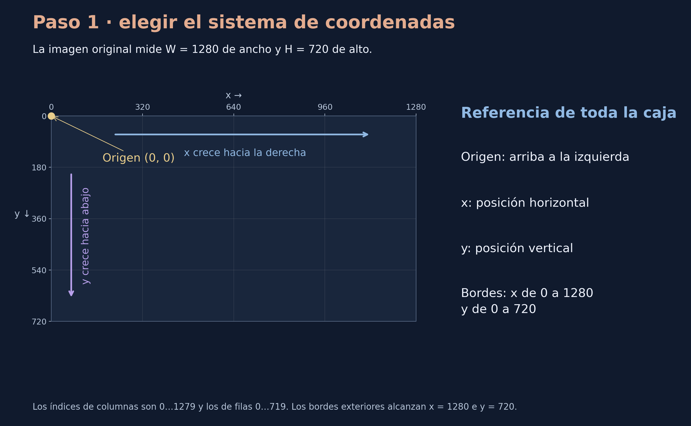
La imagen original tiene ancho y alto . El origen está en su esquina superior izquierda. Desde allí, crece hacia la derecha e crece hacia abajo.
-
Por ejemplo, la posición se alcanza avanzando 100 unidades hacia la derecha y 50 hacia abajo, siempre desde el origen.
-
Las coordenadas están expresadas en unidades de píxel de la imagen original. No son porcentajes ni valores normalizados entre cero y uno.
-
Conviene distinguir posiciones geométricas de índices del arreglo: las columnas tienen índices de 0 a 1279 y las filas de 0 a 719, mientras que los bordes exteriores de la imagen alcanzan e .
Idea clave: antes de interpretar una caja, necesitamos conocer la imagen de referencia, el origen, la dirección de los ejes y la unidad utilizada.
Paso 2. Leer la caja en formato xyxy
La caja del ejemplo es:
El subíndice indica que sus coordenadas pertenecen a la imagen original. El formato xyxy guarda dos esquinas opuestas, en este orden:
| Componente | Valor | Significado |
|---|---|---|
| 100 | Límite izquierdo | |
| 50 | Límite superior | |
| 300 | Límite derecho | |
| 250 | Límite inferior |
-
Por tanto, es la esquina superior izquierda y es la inferior derecha. Ambas se miden desde el mismo origen; la segunda no se mide desde la primera.
-
300 y 250 son posiciones, no el ancho y el alto. Las otras dos esquinas se deducen: y .
-
La figura es un acercamiento: conserva los valores de coordenadas originales y permite ver la caja con mayor detalle.
Código original · YOLO26
Image(f"{root_class_path}/j11.png")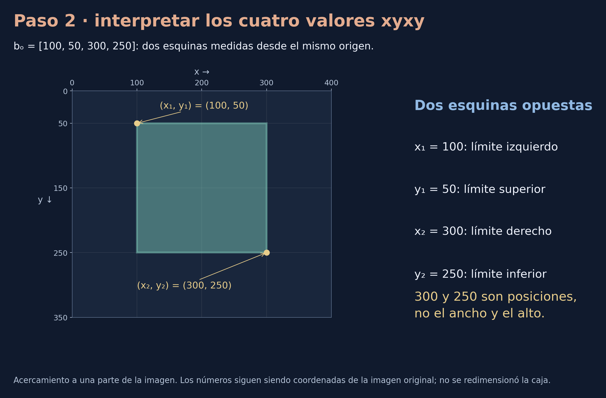
Paso 3. Obtener el ancho y el alto
La caja comienza en y termina en . Su ancho es la distancia entre esos límites:
Verticalmente comienza en y termina en :
Así, la caja mide 200 × 200 unidades de píxel. Aunque la imagen completa es rectangular, esta caja particular es cuadrada.
Usamos geometría continua: medimos distancias mediante restas, sin sumar uno. No estamos contando índices enteros de forma inclusiva.
Idea clave: en
xyxy, los tamaños se calculan. No deben confundirse las coordenadas finales con el tamaño .
Código original · YOLO26
Image(f"{root_class_path}/j12.png")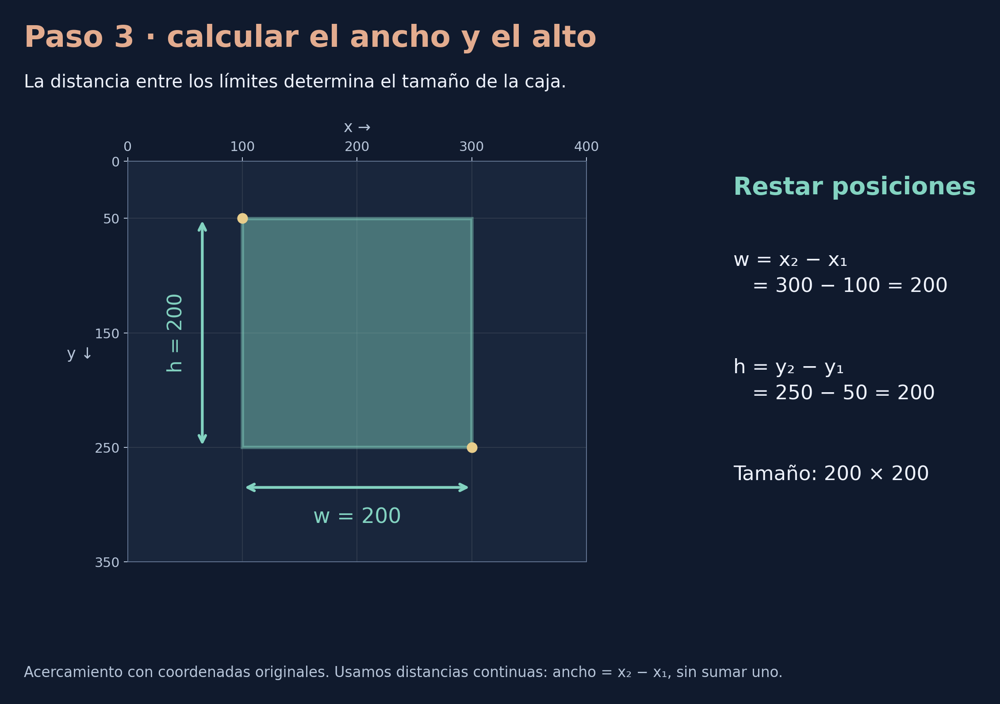
Paso 4. Calcular el centro de la caja
El centro está a mitad de camino entre los extremos horizontales y verticales:
Por tanto, el centro es , marcado con una cruz rosada.
Podemos comprobarlo sumando la mitad del tamaño a la esquina inicial:
Este es el centro de la caja, no el centro de la imagen completa, que sería bajo esta convención geométrica.
Código original · YOLO26
Image(f"{root_class_path}/j13.png")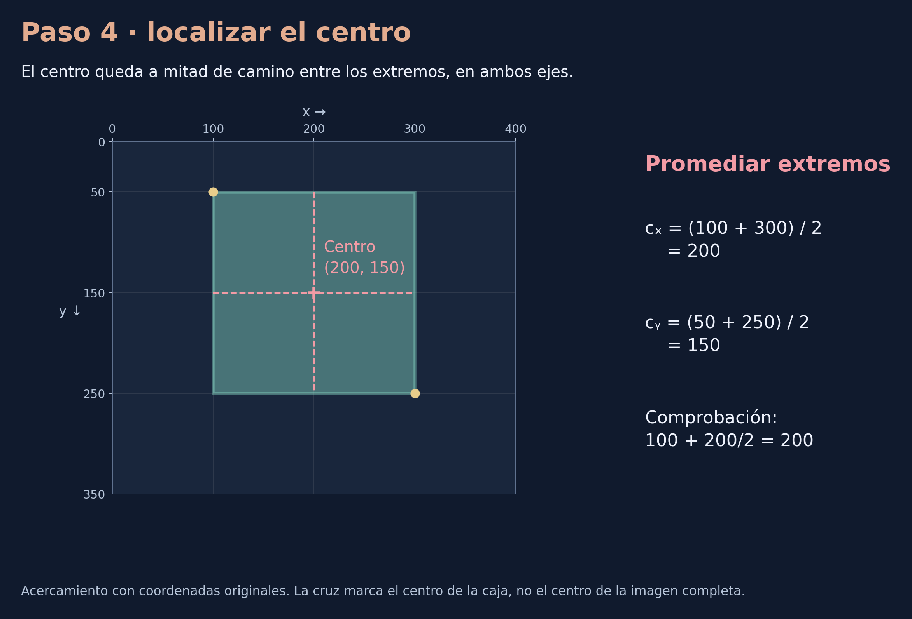
Paso 5. Representar la misma caja en formato cxcywh
xyxy describe dos esquinas. cxcywh describe centro y tamaño:
No basta con reordenar los cuatro números: debemos calcular el centro y las dimensiones. La región representada sigue siendo exactamente la misma.
Podemos recuperar las esquinas para verificarlo:
Misma caja, misma imagen de referencia y misma unidad. Cambiar de formato no redimensiona, no normaliza las coordenadas y no elimina padding.
Código original · YOLO26
Image(f"{root_class_path}/j14.png")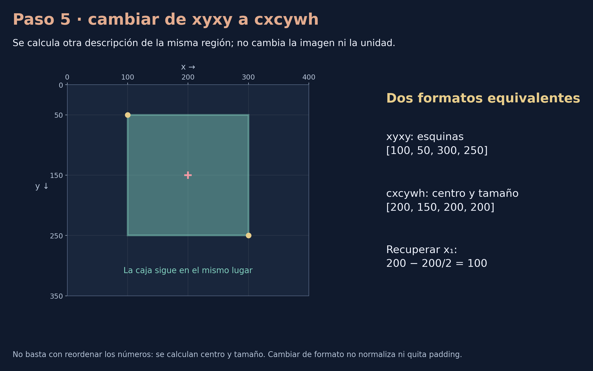
Paso 6. Entender qué significa usar coordenadas continuas
Representamos la imagen como una superficie geométrica medida en unidades de píxel. Un píxel ocupa un área de ; no es solamente un punto.
En esta convención, el píxel de la columna 100 y fila 50 ocupa horizontalmente de 100 a 101 y verticalmente de 50 a 51. Su centro está en:
-
Una caja también puede tener un borde en . Eso significa que su límite atraviesa el interior de una celda de píxel: no está obligado a coincidir con una línea entera de la rejilla.
-
La línea roja de la figura es un ejemplo auxiliar de borde fraccionario. No modifica la caja original .
Usamos coordenadas continuas, con los bordes de los píxeles como referencia geométrica. Esto permite valores enteros o decimales y mantiene las fórmulas y , sin sumar uno.
Código original · YOLO26
Image(f"{root_class_path}/j15.png")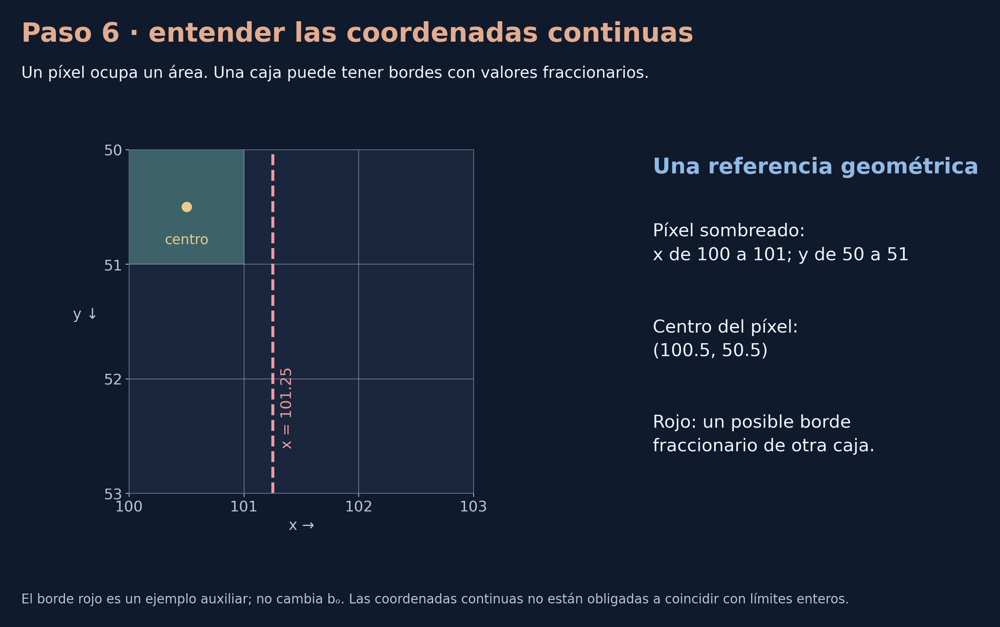
Paso 7. Distinguir las características P3 de las coordenadas de una caja
Un tensor P3 con forma (B,64,80,80) describe mapas de características:
| Dimensión | Significado |
|---|---|
B |
Cantidad de imágenes del lote |
64 |
Canales de características |
Primer 80 |
Filas de la rejilla |
Segundo 80 |
Columnas de la rejilla |
En una posición espacial de una imagen tenemos un vector con 64 componentes:
Esos valores no son las cuatro coordenadas de una caja. Tampoco debemos agruparlos arbitrariamente de cuatro en cuatro e interpretarlos como 16 cajas.
-
La cabeza procesa los mapas con transformaciones aprendidas y utiliza contexto espacial. La decodificación convierte las salidas de regresión en cajas interpretables. La figura del vector ilustra una posición; no implica que la cabeza ignore sus vecinas.
-
Además,
P3se obtiene sobre la entrada procesada del modelo. Sus índices de fila y columna no son directamente coordenadas de la imagen original de 1280 × 720. -
Si hubo redimensionamiento o padding, recuperar las coordenadas originales requiere otra transformación. Convertir
xyxyacxcywhcambia la representación de la caja, pero no realiza esa transformación entre imágenes.
Código original · YOLO26
Image(f"{root_class_path}/j16.png")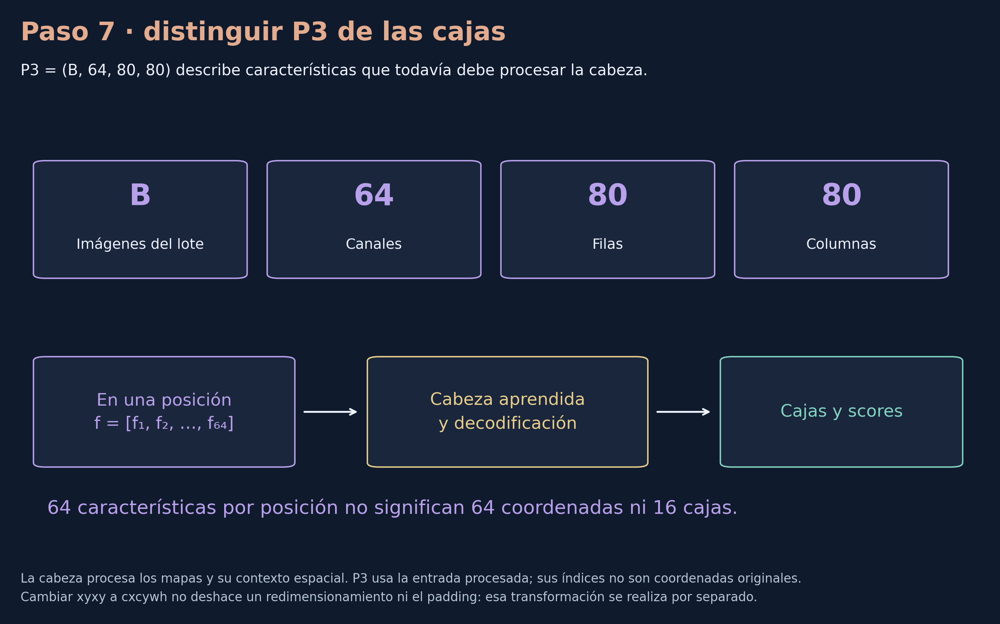
20.1.3. Normalizar: Expresar Cada Medida como Fracción de su Eje
El formato habitual de etiquetas YOLO usa centro, ancho y alto normalizados respecto de la imagen a la que corresponde la etiqueta:
En nuestro ejemplo:
El ancho y el alto originales son iguales, pero sus fracciones son distintas, porque 1280 y 720 son denominadores diferentes. Un valor normalizado no mide píxeles: indica una proporción.
| Componente | Cuenta | Interpretación |
|---|---|---|
| El centro está al 15.625 % del ancho | ||
| El centro está al 20.833 % del alto | ||
| La caja ocupa el 15.625 % del ancho | ||
| La caja ocupa el 27.778 % del alto |
20.1.4. Letterbox: reducir la imagen y desplazar sus coordenadas
Fijamos un caso explícito: entrada 640×640, conservación de aspecto, imagen centrada y sin rectángulo mínimo automático. Con auto=True o procesamiento rectangular, la forma efectiva y el padding pueden cambiar; no se debe suponer que todo imgsz=640 termina en 640×640. [S4]
La escala de este caso es:
La imagen pasa a 640×360. Para completar el alto faltan píxeles: colocamos 140 arriba y 140 abajo. El padding horizontal es cero.
Cada punto se transforma mediante:
Por eso la caja queda:
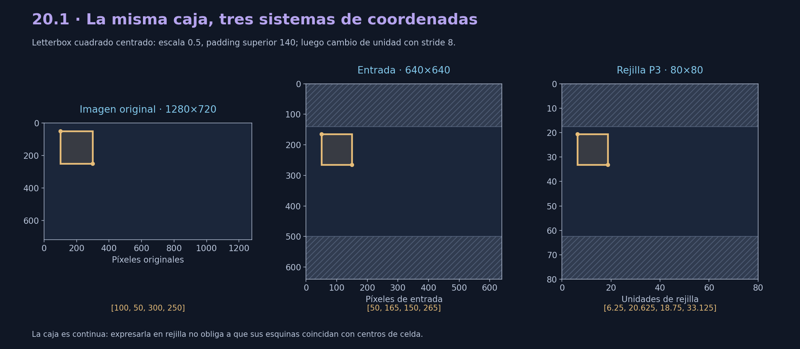
Cómo leer la figura:
-
El rectángulo dorado representa la misma caja.
-
El fondo rayado indica padding.
-
La tercera vista cambia de unidad al dividir las coordenadas de entrada por 8; no vuelve a redimensionar físicamente la imagen.
-
En esa rejilla, la caja tiene esquinas
[6.25,20.625,18.75,33.125], que pueden ser fraccionarias.
| Estado de la caja | Valores | Unidad y plano |
|---|---|---|
Original xyxy |
[100,50,300,250] |
Píxeles originales |
Original cxcywh |
[200,150,200,200] |
Píxeles originales |
| Etiqueta normalizada | [0.15625,0.20833,0.15625,0.27778] |
Fracciones de la imagen original |
Entrada con letterbox xyxy |
[50,165,150,265] |
Píxeles de entrada |
| Caja en rejilla de stride 8 | [6.25,20.625,18.75,33.125] |
Unidades de esa rejilla |
20.1.5. Volver al Original: Invertir en el Orden Correcto
Para recuperar la imagen original primero retiramos el desplazamiento y después deshacemos la escala:
La coordenada vuelve a porque . Si solo dividiéramos por , obtendríamos : estaríamos ampliando también el margen.
Para obtener luego la etiqueta normalizada original, calculamos cxcywh en el original y dividimos cada componente por su ancho o alto correspondiente. Normalizar la caja del letterbox por 640 describe otro plano; no recupera directamente la etiqueta original.
20.2. NMS: Decisiones por Ronda, Clases y Soft-NMS
NMS (Non-Maximum Suppression, supresión de no máximos) es una selección voraz de propuestas: conserva la caja pendiente con mayor score y suprime otras que solapan demasiado con ella, según la política de clases. Luego repite el procedimiento con las propuestas que todavía siguen pendientes.
-
Una propuesta no es un objeto confirmado. Es una hipótesis con una caja, un score y una clase predicha. Varias propuestas pueden intentar explicar la misma instancia.
-
NMS usa score, geometría y, cuando corresponde, clase; no mira los píxeles para demostrar que dos propuestas describen el mismo objeto.
20.2.1. Leer los Cuatro Datos de cada Propuesta
| Nombre e índice original | Caja xyxy | Score | Clase predicha |
|---|---|---|---|
| A = 0 | [0, 0, 10, 10] |
0.95 | 0 |
| B = 1 | [1, 1, 11, 11] |
0.90 | 0 |
| C = 2 | [20, 20, 30, 30] |
0.80 | 0 |
| D = 3 | [1, 1, 11, 11] |
0.85 | 1 |
Los cuatro datos de cada propuesta son la información que usamos para describir una posible detección. Por ejemplo, para A:
| Dato | Valor | ¿Qué significa? |
|---|---|---|
| Índice | 0 |
Identifica la fila de esta propuesta para poder recuperarla después. |
| Caja | [0,0,10,10] |
Indica dónde estaría el objeto mediante dos esquinas: (x₁,y₁) y (x₂,y₂). |
| Score | 0.95 |
Puntuación que utiliza el detector para ordenar esta propuesta frente a otras. |
| Clase predicha | 0 |
Categoría que el modelo asigna al posible objeto. Su significado depende del conjunto de datos. |
Hay una distinción importante: los cuatro números de la caja son un solo dato geométrico. No son los “cuatro datos” de la propuesta.
- El índice lo usamos para organizar los resultados; no es una característica del objeto que el modelo deba predecir.
20.2.2. Calcular IoU Sin Saltarse Ningún Paso
Vamos a calcular el IoU entre las propuestas A y B de la tabla anterior. Para este cálculo usamos únicamente las coordenadas de sus cajas:
| Propuesta | Caja xyxy |
Esquina inicial (x₁, y₁) |
Esquina final (x₂, y₂) |
|---|---|---|---|
| A | [0, 0, 10, 10] |
(0, 0) |
(10, 10) |
| B | [1, 1, 11, 11] |
(1, 1) |
(11, 11) |
El formato xyxy representa dos esquinas opuestas del rectángulo:
x₁: límite izquierdo.y₁: límite superior.x₂: límite derecho.y₂: límite inferior.
En coordenadas de imagen, el eje horizontal crece hacia la derecha y el vertical hacia abajo. Por lo tanto, B está desplazada una unidad hacia la derecha y una unidad hacia abajo respecto de A.
Los scores y las clases no intervienen en la fórmula de IoU. Primero medimos el solapamiento geométrico; después NMS utiliza ese resultado para decidir si corresponde suprimir una propuesta.
Código original · YOLO26
Image(f"{root_class_path}/j1.png")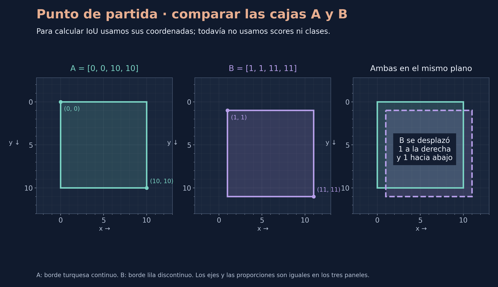
20.2.2.1. Calcular el área de cada caja
Código original · YOLO26
Image(f"{root_class_path}/j2.png")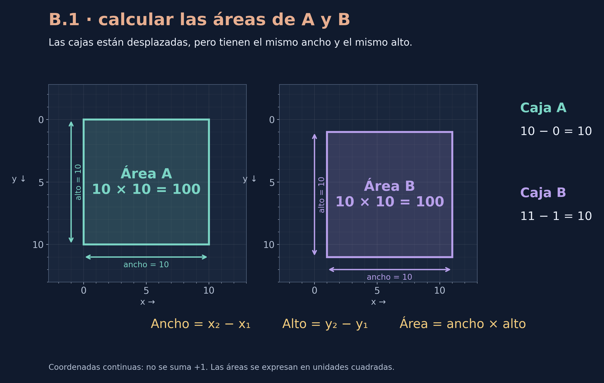
-
Para la caja A:
\begin{align} \text{ancho}A=x{2A}-x_{1A}=10-0=10, \ \text{alto}A=y{2A}-y_{1A}=10-0=10. \end{align}
Por lo tanto:
\begin{align} \text{área}_A=10\times10=100. \end{align}
-
Para la caja B:
\begin{align} \text{ancho}B=x{2B}-x_{1B}=11-1=10, \ \text{alto}B=y{2B}-y_{1B}=11-1=10. \end{align}
Entonces:
\begin{align} \text{área}_B=10\times10=100. \end{align}
Aunque B esté desplazada, conserva el mismo ancho, alto y área que A.
- Convención utilizada: trabajamos con coordenadas continuas. El ancho se calcula como
x₂ − x₁y el alto comoy₂ − y₁, sin sumar uno. Las áreas se expresan en unidades cuadradas del sistema de coordenadas utilizado.
20.2.2.2. Encontrar la Intersección
La intersección es la región que está dentro de A y también dentro de B.
En el eje horizontal:
- A ocupa desde
x = 0hastax = 10. - B ocupa desde
x = 1hastax = 11. - La región compartida ocupa desde
x = 1hastax = 10.
Para encontrar dónde empieza esa región, elegimos el mayor de los límites izquierdos:
¿Por qué el mayor? Porque antes de esa posición todavía no comenzaron ambas cajas.
Para encontrar dónde termina, elegimos el menor de los límites derechos:
¿Por qué el menor? Porque después de esa posición una de las dos cajas ya terminó.
Código original · YOLO26
Image(f"{root_class_path}/j3.png")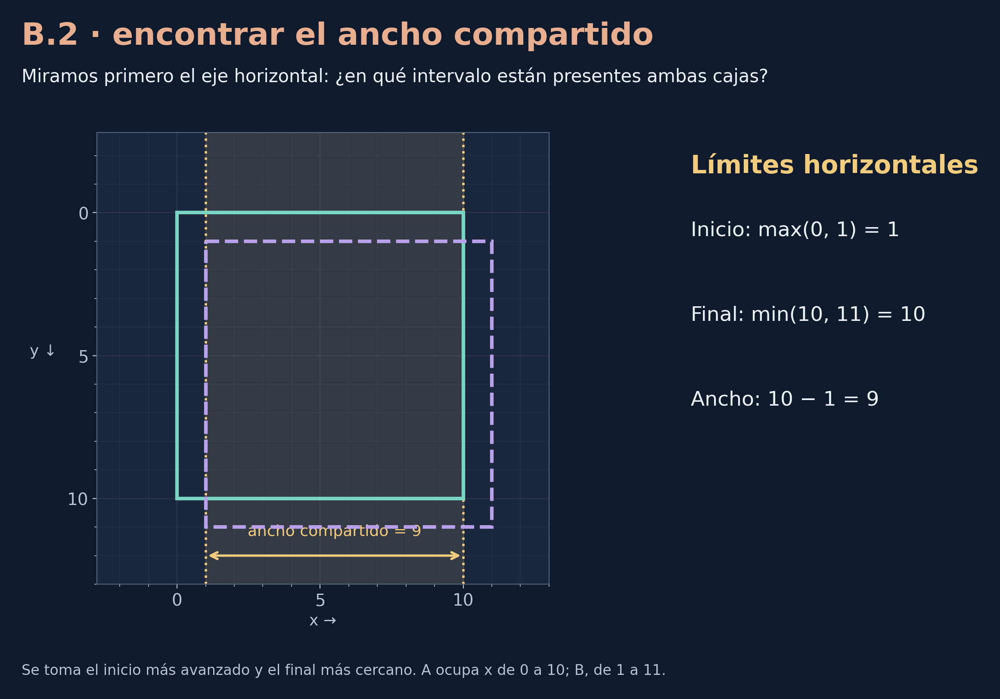
En el eje vertical aplicamos el mismo razonamiento:
Por lo tanto, la intersección es un nuevo rectángulo con coordenadas:
[1, 1, 10, 10]
Su ancho y su alto son:
Su área resulta:
Código original · YOLO26
Image(f"{root_class_path}/j4.png")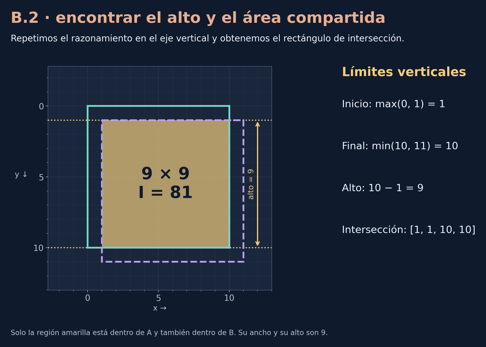
20.2.2.3. ¿Por qué la fórmula general incluye max(0, diferencia)?
En general, calculamos:
Ese límite inferior de cero es necesario porque dos cajas pueden estar separadas.
Por ejemplo, A ocupa horizontalmente de 0 a 10, mientras que C, cuya caja es [20,20,30,30], ocupa de 20 a 30. La diferencia sería:
Un ancho compartido no puede ser negativo. Por eso:
Si el ancho o el alto compartido es cero, el área de intersección es cero. Así representamos correctamente que no existe solapamiento de área positiva.
Código original · YOLO26
Image(f"{root_class_path}/j5.png")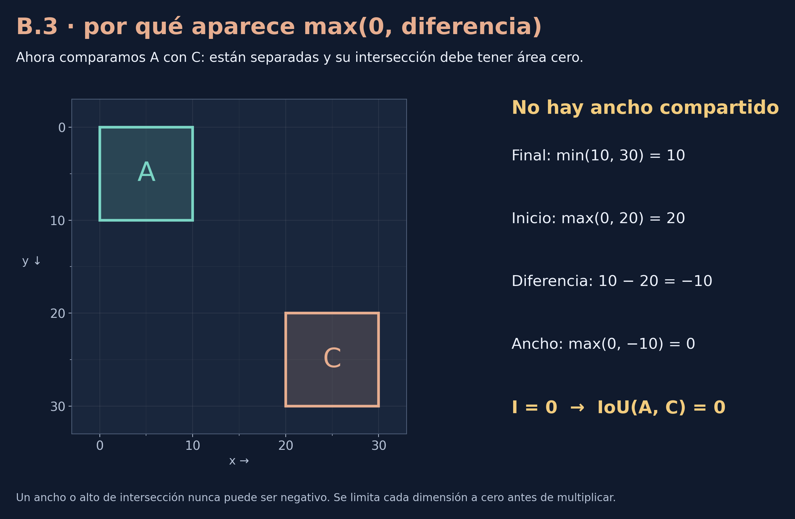
20.2.2.4. Calcular la Unión
La unión es toda la región cubierta por A, por B o por ambas.
Podríamos comenzar sumando sus áreas:
Pero esa suma cuenta dos veces la región compartida:
- Una vez como parte de A.
- Otra vez como parte de B.
Para contarla una sola vez, restamos una copia de la intersección:
Reemplazando los valores:
Código original · YOLO26
Image(f"{root_class_path}/j6.png")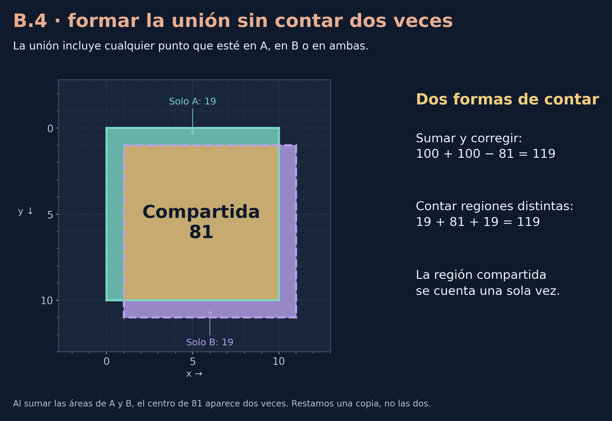
20.2.2.5. Dividir la Intersección por la Unión
IoU significa Intersection over Union: intersección sobre unión.
En nuestro ejemplo:
Esto significa que aproximadamente el 68.07 % del área de la unión está compartida por las dos cajas.
No significa que la detección tenga un 68.07 % de confianza ni que ese sea su porcentaje de acierto. IoU es una medida geométrica de solapamiento.
Tampoco debemos confundirla con la fracción de A cubierta por B:
Ese 81 % responde otra pregunta. Para calcular IoU, el denominador debe ser la unión.
Código original · YOLO26
Image(f"{root_class_path}/j7.png")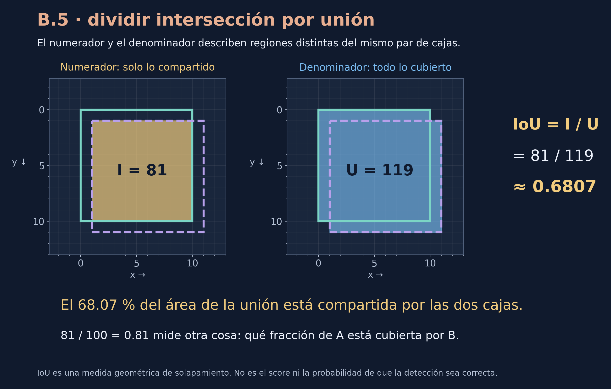
20.2.2.6. Interpretar Otros Pares del Ejemplo
| Pareja | IoU | Explicación |
|---|---|---|
| A–B | ≈ 0.6807 | Comparten un área de 81 y su unión tiene área 119 |
| A–D | ≈ 0.6807 | D tiene exactamente las mismas coordenadas que B |
| B–D | 1 | Sus cajas coinciden completamente |
| A–C | 0 | No comparten una región de área positiva |
-
Una IoU de 0 indica ausencia de intersección de área positiva; las cajas incluso podrían tocarse en un borde.
-
Una IoU de 1, para cajas válidas de área positiva, indica coincidencia completa.
-
Aunque B y D predicen clases diferentes, su IoU es 1: la clase no interviene en este cálculo geométrico.
Código original · YOLO26
Image(f"{root_class_path}/j8.png")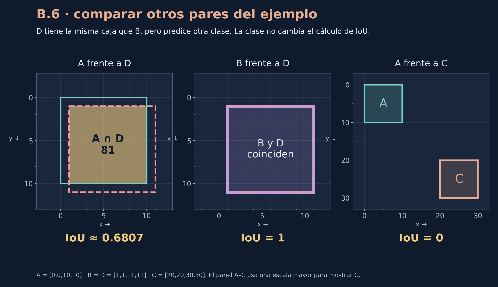
20.2.2.7. Conectar el Cálculo con la Decisión de NMS
Después de conservar A por tener el mayor score, NMS compara su caja con la de B.
Con política por clase y umbral IoU de 0.5:
- A y B predicen la misma clase: ambas son clase 0.
- Su IoU es aproximadamente 0.6807.
- Ese valor supera el umbral:
Por lo tanto, B se suprime frente a A.
Cada dato cumple una función diferente:
| Dato | Función en esta decisión |
|---|---|
| Score | Hace que A se seleccione antes que B |
| Clase | Determina si ambas propuestas compiten en NMS por clase |
| IoU | Mide cuánto se solapan sus cajas |
| Umbral IoU | Establece cuánto solapamiento provoca supresión |
En cambio, D tiene el mismo solapamiento con A, pero predice otra clase. Por eso, con NMS por clase, D no se suprime frente a A.
Código original · YOLO26
Image(f"{root_class_path}/j9.png")20.3. De un Vector de Features a Clases y Distancias
20.4. Segment26 y Proto26: Generar Bases Desde Varias Escalas
20.5. De Prototipos a Máscaras por Instancia
20.6. Fuentes primarias y alcance de la validación
Las fuentes S1, S2, S3 y S6 están fijadas al tag v8.4.174 del notebook original. Las analogías, los esquemas y las cuentas pequeñas son material docente propio.
| Ref. | Fuente primaria | Qué fundamenta |
|---|---|---|
| S1 | Detect: head.py v8.4.174 | Ramas, formas crudas, sigmoid, Identity con reg_max=1, detach, decodificación y top-k |
| S2 | Geometría: tal.py v8.4.174 | Centros de rejilla y transformación dist2bbox |
| S3 | Arquitectura: yolo26.yaml v8.4.174 | reg_max=1, arquitectura dual y tres escalas de entrada a Detect |
| S4 | Referencia oficial de LetterBox | Escala, padding y variantes auto/center |
| S5 | Guía oficial de detección end-to-end | Argumento nms, diferencias entre predicción y exportación |
| S6 | Predictor: predict.py v8.4.174 y NMS v8.4.174 | Procesamiento posterior y cajas reescaladas en Results |
| S7 | PyTorch: Tensor.detach | Desacoplamiento de autograd y almacenamiento compartido |
| Ref. | Fuente primaria | Afirmaciones contrastadas |
|---|---|---|
| F1 | Ultralytics conv.py v8.4.174 y Conv, documentación | Conv2d→BN→activación; SiLU habitual; act=False; forward fusionado |
| F2 | Ultralytics block.py v8.4.174 y referencia de bloques | C3k2/C2f, Bottleneck/C3k, SPPF, C2PSA, PSABlock, Attention y rutas posicionales |
| F3 | PyTorch Conv2d | Correlación cruzada, forma NCHW, grupos y tamaño de salida |
| F4 | PyTorch BatchNorm2d | Ejes de estadísticas, varianza del forward, buffers móviles y evaluación |
| F5 | PyTorch SiLU | Función x·sigmoid(x) |
| F6 | PyTorch channels_last | Orden lógico NCHW frente a formato de memoria |
| F7 | Dumoulin y Visin: A guide to convolution arithmetic | Relaciones entre kernel, stride, padding y tamaños |
| F8 | YAML YOLO26 v8.4.174 y parser tasks.py | Canales/repeticiones de Nano, SPPF residual y cambios por escala |
| F9 | Vaswani et al.: Attention Is All You Need | Atención escalada, softmax y combinación de values; no especifica por sí mismo el módulo C2PSA |